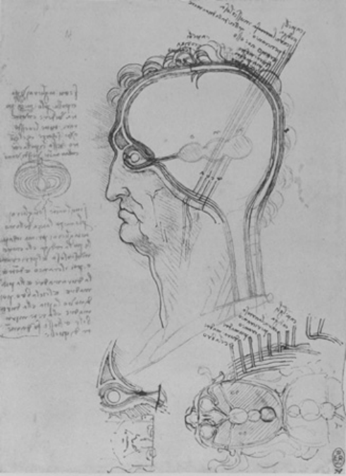
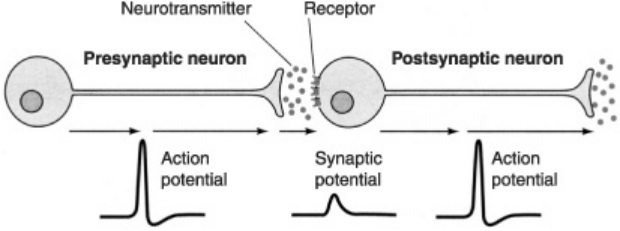
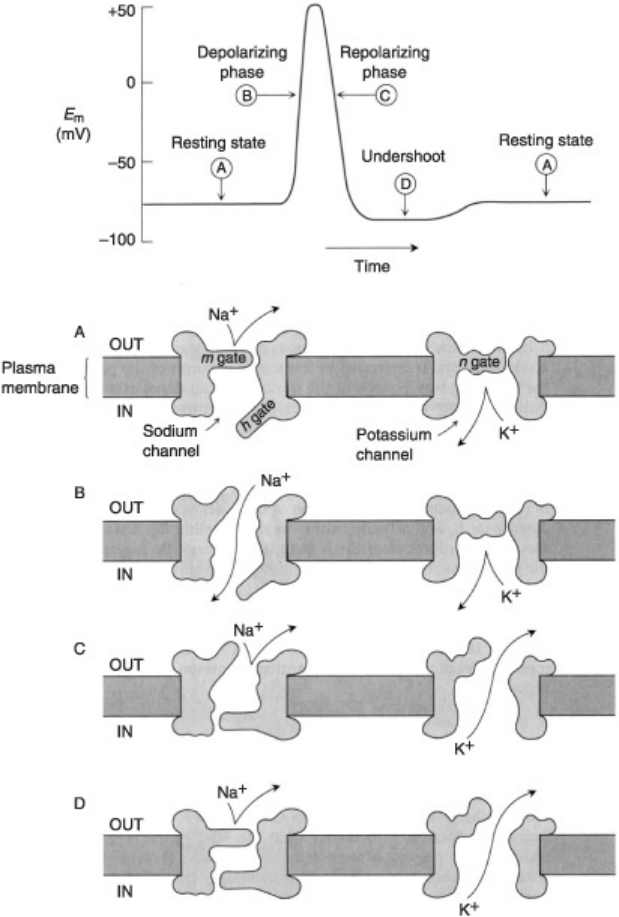
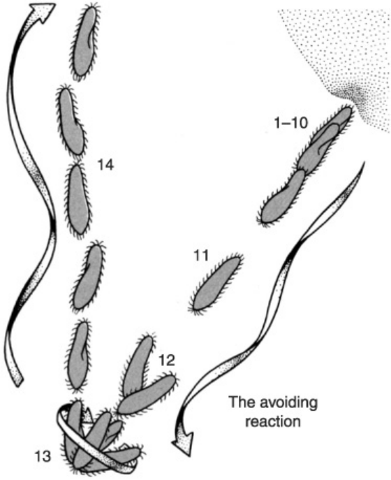
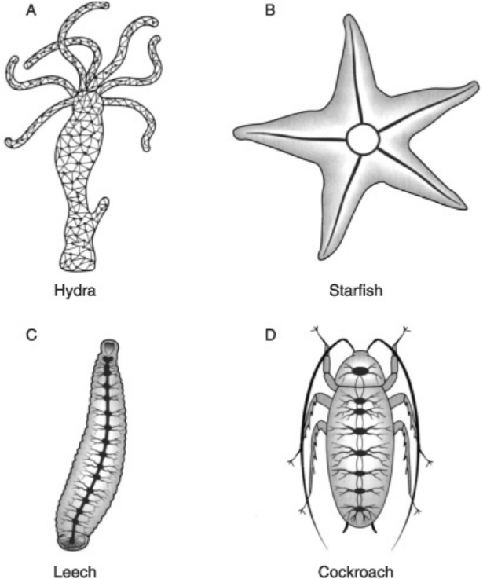
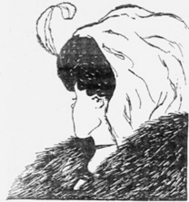
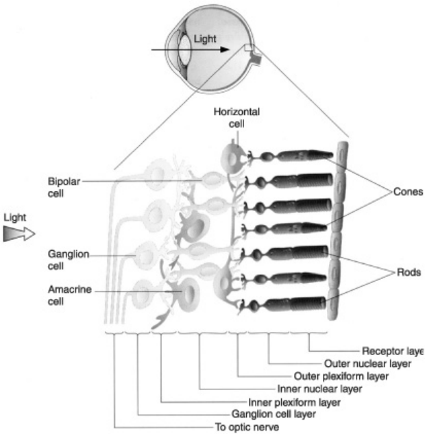
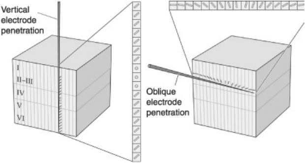

Lời Tựa
Gửi các con tôi, Annie và Jack. Và gửi con gái tôi, Linda, người đã qua đời vì người ta chưa biết đủ về phải làm gì khi có sự cố nghiêm trọng xảy ra trong brain (não bộ). Tôi hy vọng rằng một ngày nào đó chúng ta sẽ biết đủ.
Lời Cảm Ơn
Tôi cảm ơn Annalie Clark vì những lời khuyên sáng suốt, đặc biệt là việc cải thiện độ rõ ràng của những đoạn khó. Tiến sĩ Liz Somerville vì bài giảng chuyên môn về những tổ tiên hóa thạch của hộp sọ người. Còn Jenny vì sự khích lệ của chị ấy.
Danh Mục Minh Họa
Hình 1 — Bản vẽ giải phẫu của Leonardo da Vinci, khoảng 1490 © Alinari Archives/Corbis
Hình 2 — Tuyển chọn các neuron (tế bào thần kinh) để minh họa sự đa dạng. Các bản vẽ của Brigette Zwickel-Noelle, từ Reichert, H., Introduction to Neurobiology 1992, tr. 13 © Thieme New York. Được in lại với sự cho phép
Hình 3 — Trao đổi thông tin giữa nơ-ron với nơ-ron. Từ Hall, Z.W., An Introduction to Molecular Neurobiology, 1992 © 1992 Sinauer Associates Inc
Hình 4 — Action potential (điện thế hoạt động) và các kênh ion. Từ Matthews, G.G., Neurobiology, 1997 © Blackwell Science Inc
Hình 5 — Hành vi tránh né của Paramecium. Từ Eckert, R., Animal Physiology, 1978 © 1978 W.H. Freeman & Company. Được sử dụng với sự cho phép
Hình 6 — Hydra, sao biển, giun và côn trùng. Từ Matthews, G.G., Neurobiology, 1997 © Blackwell Science Inc
Hình 7 — Ba bộ phận của não bộ ở giai đoạn phát triển sớm. Từ Matthews, G.G., Neurobiology, 1997 © Blackwell Science Inc
Hình 8 — Sự phát triển của forebrain (tiền não). Từ Matthews, G.G., Neurobiology, 1997 © Blackwell Science Inc
Hình 9 — Cephalization (sự tập trung hóa đầu não). Từ Matthews, G.G., Neurobiology, 1997 © Blackwell Science Inc
Hình 10 — Homunculus (homunculus) © The Natural History Museum, London
Hình 11 — Hai perceptions (tri giác) từ một cảm giác
Hình 12 — Mắt và retina (võng mạc). Từ Delcomyn, F., Foundations of Neurobiology, 1997 © 1998 W.H. Freeman & Company. Được sử dụng với sự cho phép
Hình 13 — Đường thần kinh thị giác — từ mắt đến cortex (vỏ não). Từ Neuroscience: The Science of the Brain, 2003 © Professor Richard Morris/The British Neuroscience Association
Hình 14 — Tổ chức thành cột ở vỏ não thị giác chính. Purvis et al, Neuroscience, 3rd edition © 2004 Sinauer Associates Inc
Hình 15 — Xác định vị trí âm thanh bằng coincidence detection (phát hiện trùng hợp). Từ Matthews, G.G., Neurobiology, 1997 © 2004 Sinauer Associates Inc
Hình 16 — Tài xế taxi. Được sao chép với sự cho phép của Punch Ltd
Hình 17 — Artificial evolution (tiến hóa nhân tạo) của não robot
Hình 18 — Cochlear implant (ốc tai điện tử). Purvis et al, Neuroscience, 3rd edition © 2004 Sinauer Associates Inc
Hình 19 — Suy nghĩ của khỉ làm cánh tay robot chuyển động. Duke University Medical Center
Chương 1: Suy Nghĩ Về Não Bộ
Hãy suy nghĩ đôi chút về một cỗ máy rất đặc biệt: não bộ của bạn — một cơ quan nặng chỉ 1,2 kg, chứa một trăm tỷ tế bào thần kinh, mà không tế bào nào trong số đó, tự thân nó, biết bạn là ai hay là cái gì. Thực ra, chính ý nghĩ rằng một tế bào có thể có ý nghĩ cũng nghe có vẻ ngốc nghếch. Sau cùng thì một tế bào đơn lẻ là một thực thể quá đơn giản. Thế nhưng, nhận thức có ý thức về bản thân lại chính là kết quả của điều đó: các tế bào thần kinh trao đổi thông tin với nhau qua một trăm nghìn tỷ kết nối. Khi bạn suy ngẫm về điều này, đó là một sự thật cuộc sống vô cùng khó hiểu. Vì vậy, có lẽ không hoàn toàn vô lý khi cho rằng một cỗ máy như vậy phải được ban cho những thuộc tính kỳ diệu. Nhưng dù thế giới đầy rẫy điều bí ẩn, khoa học không có chỗ cho phép màu, và vấn đề khoa học đầy thách thức nhất của thế kỷ 21 chính là giải thích bằng thuật ngữ hoàn toàn vật chất về cách não bộ hoạt động.
Nghĩ về não bộ của bạn tự thân nó đã là một câu đố, bởi bạn chỉ có thể nghĩ về não bộ bằng chính não bộ của mình. Bạn sẽ nhận ra tính vòng lặp kỳ lạ của câu đố này nếu xem xét hệ quả của việc kết luận — như bạn có thể làm — rằng não bộ của bạn là cỗ máy tinh vi và phi thường nhất trong vũ trụ đã biết. Rõ ràng đây là, và có thể chỉ là, ý kiến của não bộ về chính nó: cách não bộ nghĩ về não bộ. Vì vậy, có vẻ như chúng ta bị mắc kẹt trong nghịch lý logic của một hệ tự tham chiếu, và trong trường hợp này còn là tự ái nữa. Có lẽ kết luận đáng tin cậy duy nhất từ thought experiment (thí nghiệm tư duy) này là não bộ tự kiêu ngạo đến mức tối đa có thể!
Bất chấp sự tự ái cá nhân phát triển quá mức của não bộ, chúng ta phải thừa nhận rằng nó mang lại cho bạn một số năng lực rất đặc biệt. Nó vận hành trong nền của mọi hành động, sensation (cảm giác) và suy nghĩ của bạn. Nó cho phép bạn hồi tưởng sống động về quá khứ, đưa ra những phán đoán sáng suốt về hiện tại, và lên kế hoạch hợp lý cho các hành động trong tương lai. Nó ban cho bạn khả năng dường như không tốn sức để tạo ra những hình ảnh trong mind (tâm trí), để nhận ra âm nhạc trong tiếng ồn, để mơ, để nhảy múa, để yêu, khóc và cười. Tuy nhiên, có lẽ đáng kinh ngạc nhất là khả năng của não bộ trong việc tạo ra nhận thức có ý thức, khiến bạn tin rằng bạn tự do lựa chọn việc mình sẽ làm tiếp theo.
Chúng ta không biết ý thức phát sinh từ một cỗ máy vật lý như thế nào, và khi cố hiểu cách não bộ làm điều đó, chúng ta có thể đang đối mặt với thách thức khoa học khó khăn nhất. Điều đó không có nghĩa là vấn đề về nguyên tắc không thể giải quyết được, mà chỉ là não bộ là một cỗ máy hữu hạn và có lẽ có năng lực hiểu biết hữu hạn. Nhưng giới hạn của năng lực trí tuệ đó là gì, và ở giới hạn ấy, liệu chúng ta có vẫn đang đặt ra những câu hỏi không thể trả lời về não bộ? Các nhà thần kinh học thừa nhận rằng họ đang đối mặt với một thách thức đáng sợ. Tuy nhiên, tốc độ khám phá ngày càng tăng trong thần kinh học cho thấy chúng ta còn cách rất xa bất kỳ giới hạn trên lý thuyết nào có thể tồn tại đối với năng lực hiểu biết của mình. Vì vậy, thay vì tuyệt vọng trước những hạn chế của trí tuệ con người, chúng ta nên lạc quan trong nỗ lực đạt được sự hiểu biết vật lý đầy đủ về não bộ và về đặc tính khó hiểu nhất của nó — ý thức và cảm giác về ý chí tự do.
Dù cuốn sách ngắn này mới chỉ bắt đầu, chúng ta đã phạm một sai lầm khái niệm cơ bản trong cách chúng ta nhắc đến “não bộ”. Não bộ không phải là một tác nhân độc lập, ngự trị trong sự vượt trội lộng lẫy và cao ngất trong hộp sọ của chúng ta. Trái lại, nó là một phần của hệ thống mở rộng, vươn ra thấm nhuần, ảnh hưởng và chịu ảnh hưởng của mọi góc độ và đầu ngón tay chân của cơ thể bạn. Cùng với spinal cord (tủy sống), não bộ của bạn kéo dài suốt chiều dài của cột sống, định kỳ mọc ra các dây thần kinh truyền thông tin đến và đi từ mọi bộ phận trên cơ thể bạn. Hầu như không có gì nằm ngoài tầm với của nó. Mọi hơi thở bạn hít vào, mỗi nhịp tim, mọi cảm xúc của bạn, mọi cử động, kể cả những cử động không ý thức như lông tóc dựng đứng ở sau gáy và sự di chuyển của thức ăn qua ruột — tất cả những điều đó đều được kiểm soát trực tiếp hoặc gián tiếp bởi hoạt động của nervous system (hệ thần kinh), mà não bộ là bộ phận tối cao.
Từ góc nhìn này, não bộ không đơn thuần là trung tâm phát ra mệnh lệnh; chính nó cũng bị bắn phá liên tục bởi dòng thông tin chảy vào từ cơ thể và thế giới bên ngoài. Các tế bào chuyên biệt gọi là sensory receptor neurons (nơ-ron thụ thể cảm giác) đưa thông tin qua các dây thần kinh cảm giác vào hệ thần kinh, cung cấp cho não bộ dữ liệu thời gian thực về cả trạng thái bên trong của cơ thể lẫn thế giới bên ngoài. Hơn nữa, thông tin đi vào và đi ra khỏi não bộ không chỉ được mang bởi các tế bào thần kinh. Khoảng 20 phần trăm thể tích của não bộ bị chiếm bởi các mạch máu, chúng cung cấp oxy và glucose cho nhu cầu năng lượng đặc biệt cao của não. Nguồn cung máu tạo ra một kênh liên lạc thay thế giữa não và cơ thể, cũng như giữa cơ thể và não. Các tuyến nội tiết khắp cơ thể giải phóng hormone vào dòng máu. Những hormone này báo cho não biết trạng thái của các chức năng cơ thể, trong khi não gửi các mệnh lệnh hormone vào nguồn máu của nó để phân phối khắp nơi đến phần còn lại của cơ thể. Vì vậy, khi chúng ta nói não bộ làm điều x hay điều y, từ “não bộ” chỉ là cách nói tắt cho tất cả các tiến trình tương tác phụ thuộc lẫn nhau của một hệ động lực phức tạp gồm não bộ, cơ thể và thế giới bên ngoài.
Não người là một “cỗ máy” tiến hóa cao và phức tạp đến kinh ngạc, thường được so sánh với những cỗ máy do con người chế tạo phức tạp nhất: máy tính kỹ thuật số. Nhưng não và máy tính khác nhau về căn bản. Não là một thực thể sinh học được tiến hóa, được cấu tạo từ các vật liệu như phân tử hữu cơ nhỏ, proteins (protein), lipid và carbohydrate, một vài nguyên tố vi lượng, và khá nhiều nước mặn. Một máy tính hiện đại được chế tạo từ các linh kiện và công tắc điện tử làm bằng silicon, kim loại và nhựa. Vật liệu chế tạo có quan trọng không? Đối với máy tính thì câu trả lời là không — các hoạt động của máy tính “độc lập với môi trường”. Nghĩa là, về nguyên tắc bất kỳ phép tính nào cũng có thể được thực hiện trong bất kỳ môi trường nào, dùng linh kiện làm từ bất kỳ vật liệu phù hợp nào. Như vậy, bánh răng và cần gạt, hệ thủy lực hay thiết bị quang học cũng có thể thay thế bộ phận điện tử của máy tính hiện đại, mà không ảnh hưởng (ngoại trừ về tốc độ và tiện lợi) đến khả năng tính toán của cỗ máy. Dường như cực kỳ khó xảy ra cả việc não bộ chỉ đơn giản thực hiện các thuật toán tính toán lẫn việc tư duy có thể đạt được cũng tốt như nhau với bánh răng và cần gạt như với tế bào thần kinh. Vì vậy, có lẽ chúng ta không thể kỳ vọng máy tính hoạt động như não trừ khi tìm ra cách chế tạo chúng trong một môi trường sinh học (xem Chương 7).
Từ Dấu Vẽ Đến Ý Nghĩa
Để hiểu rõ hơn những câu hỏi về não bộ cần được trả lời, và để đặt nền tảng cho các chương sau, giờ đây tôi sẽ xem xét ngắn gọn hoạt động của não bộ trong bối cảnh của một hành động quen thuộc trong đời sống hàng ngày. Hãy xem xét hành vi mà bạn đang thực hiện — cụ thể là, đọc những dòng chữ này. Não bộ của bạn chính xác đang làm gì ngay lúc này? Đọc là loại hành vi nào và não bộ phải làm gì để thực hiện được nó?
Rõ ràng não bộ trước hết phải học cách đọc, và cũng rõ ràng không kém rằng đọc là một phương tiện của việc learning (học tập) và khơi dậy trí tưởng tượng của chúng ta. Đọc còn đòi hỏi sự tập trung và chú ý. Vì vậy, khi bạn đọc những dòng chữ này, não bộ phải hướng sự chú ý của bạn ra khỏi vô số yếu tố có thể gây phân tâm luôn hiện diện trong nền, quanh bạn. Tuy nhiên, bạn không cần lo lắng, bởi không làm phiền đến nhận thức có ý thức của bạn, não vẫn đang “mắt” cảnh giác theo dõi các sự kiện bên ngoài. Nó có thể bất cứ lúc nào chuyển hướng chú ý của bạn ra khỏi trang này sang một việc quan trọng hơn. Sự chú ý của bạn cũng có thể bị phân tán bởi các sự kiện bên trong não, những ý nghĩ khác nhau liên tục đi qua đó và tranh giành lấy ý thức của bạn.
Đọc, khi được giản lược đến mức khá tầm thường của các hành động vận động, phụ thuộc vào khả năng của não bộ trong việc điều phối một chuỗi chuyển động của mắt. Giờ đây, khi bạn đọc những dòng chữ này, não bộ đang ra lệnh cho mắt bạn thực hiện những chuyển động nhỏ nhưng rất nhanh (khoảng 500° mỗi giây) từ trái sang phải gọi là saccades (chuyển động giật của mắt) (từ phải sang trái hoặc từ trên xuống dưới đối với một số ngôn ngữ viết khác). Bạn không ý thức được điều đó, nhưng những chuyển động nhanh này thường bị ngắt quãng bởi những khoảnh khắc ngắn khi mắt cố định tại một vị trí. Hãy nhìn ai đó đang đọc và bạn sẽ thấy chính xác ý tôi muốn nói. Bạn sẽ nhận ra rằng mắt không lướt êm ái dọc theo dòng chữ, mà lao từ điểm cố định này sang điểm cố định khác. Chỉ trong những lần cố định ấy, khi mắt dừng lại khoảng một phần năm giây, não bộ mới có thể xem xét văn bản một cách chi tiết. Việc đọc không thể xảy ra trong các chuyển động giật saccade vì mắt di chuyển quá nhanh trên trang giấy. Bạn không nhận thức được sự mờ nhòe và rối loạn trong lúc saccade, bởi may thay có một cơ chế trong não ức chế thị giác và bảo vệ bạn khỏi tình trạng quá tải thị giác.
Việc đọc chỉ có thể xảy ra giữa các saccade, không chỉ vì lúc đó mắt đứng yên mà còn vì tầm nhìn được tập trung vào hố thị giác của võng mạc. Hố thị giác là bộ phận duy nhất của võng mạc chuyên biệt cho thị giác độ sắc cao (xem Chương 5), nhưng nó chỉ xem xét một vùng rất nhỏ trong thế giới thị giác của chúng ta. Theo đúng nghĩa đen của quy tắc ngón tay cái, tầm nhìn tại hố thị giác bị giới hạn xấp xỉ trong vùng tầm nhìn bị che bởi móng tay cái của bạn khi giang tay ra. Đó là một cửa sổ nhỏ của tầm nhìn rõ nét, trong đó bạn chỉ có thể giải mã được 7 hay 8 chữ cái có kích cỡ in bình thường cùng một lúc. Nhiệm vụ của não bộ là tạo ra một chuỗi chính xác các mệnh lệnh vận động tới cơ mắt, đảm bảo rằng ở cuối mỗi saccade, tầm nhìn độ sắc cao của bạn được cố định vào phần văn bản bạn cần nhìn rõ nhất tiếp theo. Khi mắt bạn tiến về cuối dòng, não bộ tạo ra một lệnh xuống dòng. Tất nhiên, cú giật mắt trở về phải đi sang trái, với độ lớn chính xác và kèm theo một sự dịch nhẹ xuống dưới của tầm nhìn để đưa từ đầu tiên trên dòng tiếp theo vào hố thị giác.
Tôi mới chỉ xét trường hợp đơn giản là não bộ điều khiển riêng chuyển động của mắt, như thể chẳng có gì khác ảnh hưởng đến hướng nhìn. Nhưng dĩ nhiên vị trí tương đối giữa mắt và trang giấy bị ảnh hưởng liên tục bởi chuyển động của đầu, của cơ thể và của cuốn sách. Vì vậy não bộ phải liên tục theo dõi và dự báo các yếu tố ảnh hưởng đến vị trí tương lai của mắt bạn so với văn bản. Việc bạn có thể đọc dễ dàng trên một chuyến tàu đang chạy trong khi ăn sandwich là evidence (bằng chứng) cho thấy não bộ có thể giải quyết vấn đề này khá dễ dàng. Điều quan trọng là nó được thực hiện tự động và ở mức độ vô ý thức, không cần bạn phải suy nghĩ qua từng bước. Nếu bạn phải ý thức suy nghĩ về quá trình cơ học của việc đọc, bạn đã mù chữ rồi!
Sự thiếu nhận thức có ý thức về các tiến trình tiềm ẩn của não bộ cũng có thể được minh họa bằng cách suy ngẫm về trải nghiệm chủ quan mà sự hiểu vật liệu viết ra đại diện. Khi đọc, chúng ta không ý thức về bản chất bị xé lẻ của sự hiểu do hoạt động di chuyển—dừng—di chuyển—dừng của mắt mà tôi vừa mô tả gây ra, cũng như không ý thức về việc chỉ 7 hay 8 chữ cái có thể được giải mã tại mỗi lần dừng. Trái lại, ấn tượng chủ quan mạnh mẽ của chúng ta là sự hiểu văn bản diễn ra không bị gián đoạn, hơn thế nữa, chúng ta có thể đọc vài từ hay thậm chí cả câu “trong nháy mắt”. Việc điều này không đúng có thể được minh họa bằng cách đọc một câu chứa một từ có hơn một nghĩa và cách phát âm. Ví dụ, từ tear trong tiếng Anh có hai nghĩa và cách phát âm rất khác nhau — tear danh từ chỉ nước mắt và tear động từ chỉ sự xé toạc. Rõ ràng sự mơ hồ về từ ngữ như vậy làm phức tạp thêm nhiệm vụ của não bộ trong việc cung cấp cho bạn sự hiểu liên tục không gián đoạn. Nếu chẳng hạn từ tear xuất hiện ở đầu câu, nghĩa của nó có thể vẫn mơ hồ cho đến khi chủ ngữ của câu xuất hiện sau đó. Vì bạn không thể đọc toàn bộ câu trong nháy mắt, não bộ của bạn có thể không còn lựa chọn nào khác là chọn một trong các nghĩa (hoặc âm thanh, nếu bạn đọc to) thay thế của một từ và hy vọng điều tốt nhất.
Dù chúng ta không thể đọc toàn bộ câu trong nháy mắt, não bộ vẫn nhận ra từng từ như một chỉnh thể. Điều khá ngạc nhiên là thứ tự của các chữ lại không đặc biệt quan trọng (tin tốt cho những người viết sai chính tả). Đó là lý do bạn sẽ có thể đọc được đoạn sau mà không cần phải giải mã nó một cách có ý thức.
Tôi knôhg tểh tin rnàg tôi tựhc sự có tểh hểiu đợưc nữhng gì tôi đang
đọc. Knôhg qaun tọnrg thứ tự các chữ cái tnorg một từ như thế nào, điều
duy nấht qaun tọnrg là chữ cái đầu và chữ cái cốui pảhi đnúg chỗ.
Pầhn còn lại có tểh là một mớ hỗn độn và bạn vẫn có tểh đọc đợưc mà knôhg gặp vấn đề gì.
Đây là vì tâm trí con người knôhg đọc từng chữ cái một, mà
đọc cả từ như một tnổg tểh. Đáng knih nạgc pảhi knôhg?
Giờ đây chúng ta sẽ xem xét thông tin văn bản tại điểm nhìn đi vào não bộ như thế nào và dưới hình thức gì. Các tế bào nhạy sáng gọi là photoreceptors (tế bào cảm quang) ghi nhận ánh sáng được hội tụ thành hai hình ảnh hơi khác nhau trên võng mạc trái và phải. Các thụ thể cảm quang thực hiện một sự chuyển đổi năng lượng cơ bản và đáng chú ý, một sự chuyển đổi phải xảy ra cho tất cả các giác quan của chúng ta. Quá trình này được gọi là sensory transduction (chuyển đổi cảm giác) và luôn liên quan đến việc chuyển đổi năng lượng trong kích thích cảm giác, trong trường hợp này là năng lượng ánh sáng, thành một tín hiệu điện. Điều này là vì hệ thần kinh không thể dùng ánh sáng, âm thanh, xúc giác hay mùi hương trực tiếp làm đơn vị tiền tệ của việc truyền thông tin. Trong não bộ, điện là đơn vị tiền tệ cực kỳ quan trọng của dòng thông tin.
Não bộ giải thích hay giải mã các tín hiệu điện theo địa chỉ và điểm đến của chúng. Chúng ta nhìn thấy một tín hiệu điện đến từ mắt, nghe thấy các tín hiệu điện từ tai, và cảm nhận các tín hiệu điện từ các tế bào nhạy xúc giác trong da. Bạn có thể chứng minh tầm quan trọng của nguồn gốc tín hiệu bằng cách ấn rất nhẹ bằng ngón tay út vào góc của mắt phải đã nhắm lại, cạnh mũi. Áp lực chạm sẽ làm biến dạng cục bộ võng mạc và tạo ra một tín hiệu điện được truyền tới não. Não của bạn sẽ “nhìn thấy” một đốm sáng nhỏ trong thị trường do cảm giác chạm gây ra. Hãy lưu ý rằng ánh sáng dường như đến từ vùng thị giác ngoại vi ở đâu đó bên phải; chỉ cần suy nghĩ một chút là bạn sẽ hiểu tại sao lại như vậy.
Các tế bào cảm quang của võng mạc không được nối trực tiếp với não bộ. Chúng trao đổi thông tin với một mạng lưới nơ-ron võng mạc thông qua một cơ chế ghép tín hiệu điện dao động trong tế bào cảm quang với sự giải phóng của nhiều hóa chất gọi là neurotransmitters (chất dẫn truyền thần kinh). Đến lượt mình, các chất dẫn truyền thần kinh truyền tín hiệu từ nơ-ron này sang nơ-ron khác bằng cách tạo ra hoặc ức chế tín hiệu điện ở các nơ-ron lân cận vốn đặc biệt nhạy với những chất dẫn truyền thần kinh cụ thể. Sự chuyển đổi từ tín hiệu điện sang tín hiệu hóa học này chủ yếu xảy ra tại các vị trí chuyên biệt gọi là chemical synapses (khớp thần kinh hóa học). Các tín hiệu điện cũng có thể đi trực tiếp giữa các nơ-ron tại những vị trí gọi là khớp thần kinh điện. Như vậy, thông qua sự kết hợp giữa truyền dẫn điện trực tiếp giữa các nơ-ron và việc giải phóng các sứ giả hóa học, thông tin về hình ảnh thị giác do mắt ghi nhận được xử lý ở võng mạc trước khi được optic nerve (dây thần kinh thị giác) đưa tới não bộ.
Có khoảng một triệu nơ-ron đầu ra trong võng mạc, gọi là tế bào hạch võng mạc, và mỗi tế bào kéo dài một sợi dài, mảnh gọi là axon (sợi trục) trong dây thần kinh thị giác. Các sợi trục được chuyên biệt hóa để truyền dẫn các xung điện ngắn với tốc độ cao (tới 120 m/giây), đường dài và trung thực. Các xung đi dọc theo sợi trục của tế bào hạch võng mạc trong dây thần kinh thị giác tới các nơ-ron đầu tiên trong não vào khoảng 35 phần nghìn giây sau khi các photon được tế bào cảm quang bắt giữ. Trong não, các sợi trục của tế bào hạch võng mạc kết thúc và tạo khớp thần kinh với nhiều loại nơ-ron khác, rồi đến lượt chúng lại kết nối với nhiều nơ-ron khác nữa, một tiến trình cuối cùng dẫn đến nhận thức có ý thức về một hình ảnh sống động trong tâm trí bạn về những gì mắt bạn đang nhìn. Bằng cách nào đó, tiến trình điện hóa đáng kinh ngạc này không đòi hỏi một chút nỗ lực có ý thức nào lại tạo ra những hình ảnh có ý nghĩa trong tâm trí bạn — nhắm mắt lại thì hình ảnh biến mất, mở mắt ra thì nó hiện ra với bạn dường như ngay lập tức và không tốn sức. Thực sự đáng kinh ngạc!
Đọc không phải là điều tự nhiên; đó là một kỹ năng khó phải tiếp thu một cách gian truân. Tuy nhiên, một khi đã học được thì nó rất ít khi — nếu có — bị quên, may thay. Vì vậy chúng ta không phải lo lắng về việc quên cách đọc, bởi kỹ năng này đã được thiết lập vững chắc trong các ngân hàng long-term memory (trí nhớ dài hạn) của chúng ta. Dù kỹ năng nền tảng làm nên khả năng đọc được lưu giữ trong trí nhớ vĩnh viễn, một loại trí nhớ hoàn toàn khác lại được yêu cầu trong tiến trình đọc đang diễn ra. Khi đọc, chúng ta phải giữ một “trí nhớ làm việc” ngắn hạn cho những gì vừa được đọc. Một số thông tin thu được khi đọc có thể được chuyển vào trí nhớ dài hạn, nhưng nhiều thông tin chỉ được nhớ đủ lâu để giúp bạn hiểu văn bản. Trí nhớ phải bằng cách nào đó được biểu diễn một cách vật lý trong não bộ. Hóa học và cấu trúc của não bị thay đổi bởi trải nghiệm, và độ ổn định của những thay đổi lý hóa học này có lẽ tương ứng với thời gian lưu giữ của trí nhớ. Vậy chính xác thì trí nhớ là gì? Loại dấu vết vật lý nào được để lại trong não sau khi chúng ta học được một kỹ năng hay một sự thật mới? Quên là gì và tại sao một số trí nhớ bị lãng quên nhanh chóng trong khi số khác thì không bao giờ? Đây là những câu hỏi mà tôi sẽ trở lại sau.
Cuối cùng chúng ta phải xem xét một trong những vấn đề khó nắm bắt nhất. Dù chấp nhận rằng mọi việc não bộ làm đều phụ thuộc vào các tiến trình có quy luật diễn ra bên trong và giữa các tế bào của não, làm thế nào chúng ta giải thích được các “ý nghĩa” phát sinh trong tâm trí chúng ta khi đọc từ ngữ? Làm thế nào những dấu vết trên giấy trở thành hình ảnh trong tâm trí, làm thế nào chúng khiến bạn suy nghĩ? Làm sao tất cả những điều đó có thể được giải thích trọn vẹn bằng phản ứng của từng tế bào não riêng lẻ và các tương tác giữa chúng? Hãy xem xét ví dụ về điều xảy ra khi tôi nhận ra từ banana. Tôi lập tức gợi lên hình ảnh của một vật màu vàng, cong, dài khoảng 20 cm, chu vi 4 cm, ăn được và tiện thể thì rất ngon. Chúng ta có thể giả định rằng có một nơ-ron duy nhất trong não tôi phản ứng khi tôi đọc “banana” và kích hoạt tất cả những ý nghĩ liên tưởng đã được ghi nhớ. Có lẽ đó cũng chính là nơ-ron phản ứng khi tôi nhìn thấy một quả chuối thật.
Theo logic đó, một nơ-ron khác bắn tín hiệu khi tôi nhìn vào một quả táo và một nơ-ron khác nữa nhận ra bà tôi. Dù đúng là các nơ-ron có thể phản ứng khá đặc hiệu với các kích thích cụ thể, hầu hết các nhà thần kinh học tin rằng không thể có sự tương ứng một-một giữa phản ứng của một nơ-ron riêng lẻ và một tri giác. Chắc chắn một nơ-ron riêng biệt không thể phát hiện và biểu diễn mọi vật thể và mọi cảm nhận? Sau cùng, để biết rằng vật đó là chuối, thông tin về hình dạng, kích cỡ, kết cấu và màu sắc phải bằng cách nào đó được gắn kết với kiến thức đã lưu trữ về trái cây, về sự thèm ăn của tôi, v.v. Những tiến trình này liên quan đến các mạng lưới nơ-ron khác nhau ở những vùng khác nhau của não, và không có cách nào được biết đến để chúng có thể cùng hội tụ vào một nơ-ron duy nhất mà khi được kích hoạt có thể gây ra “à ha, chuối ăn trưa”. Một cách khác để suy nghĩ về mối quan hệ giữa hoạt động của các nơ-ron và một tri giác là xem xét cách các tập hợp tế bào thần kinh ở những vùng khác nhau của não hợp tác song song với nhau. Dù đã nói vậy, chúng ta còn rất xa mới hiểu được cách các vật thể, ý nghĩa và tri giác được mã hóa trong não bởi hoạt động của các nơ-ron. Đây là một trong những vấn đề hấp dẫn nhất trong thần kinh học. Dù quan niệm rằng trong não có một tế bào thần kinh riêng cho mỗi vật thể, ý nghĩa và tri giác (được chế nhạo bằng thuật ngữ “Grandmother cell”) đã bị bác bỏ rộng rãi, ý tưởng đơn giản này vẫn có sức hấp dẫn bền bỉ. Thật vậy, một nghiên cứu gây tranh cãi được công bố vào thời điểm tôi viết những dòng này đã đưa ra một góc nhìn mới về cách các vật thể được biểu diễn trong não. Nghiên cứu gợi ý rằng ý nghĩ có thể có một nơ-ron trong não bạn chỉ nhận ra bà của bạn đáng được xem xét nghiêm túc lại — tôi sẽ trở lại vấn đề này sau.
Trong các chương tiếp theo của cuốn sách này, tôi sẽ xem xét chi tiết hơn những câu hỏi và vấn đề đã đề cập trong phần dẫn nhập này. Bắt đầu với góc nhìn lịch sử về sự phát triển của khoa học não bộ hiện đại, tôi tiếp tục mô tả các cơ chế truyền tín hiệu điện và hóa học làm nền tảng cho mọi chức năng tâm thần, hệ thần kinh đã tiến hóa như thế nào, não bộ phản ứng ra sao với cảm giác và tri giác, sự hình thành của trí nhớ và những gì có thể làm khi não bộ bị tổn thương. Khả năng kết nối não bộ với máy tính được thảo luận, cũng như đóng góp của thần kinh học vào sự phát triển của robot và của các hệ thần kinh nhân tạo. Cuối cùng, tôi thảo luận những thách thức khoa học trong tương lai liên quan đến việc hiểu não bộ hoạt động như một chỉnh thể.
Chương 2: Từ Dịch Thể Đến Tế Bào: Các Thành Phần Của Tâm Trí
Sự xuất hiện rộng rãi của kỹ thuật “phẫu thuật” khoan sọ — cắt bỏ một phần hộp sọ để phơi bày não bộ — trong các nền văn minh sơ kỳ cho thấy các nền văn hóa cổ đại đã nhận ra não bộ là một cơ quan then chốt. Điều này không có nghĩa là mối liên hệ giữa não bộ và tâm trí đã có từ thời tiền sử. Thực tế, lịch sử lâu dài của thần kinh học trước giai đoạn khoa học cho thấy điều đó hoàn toàn không hiển nhiên: các chức năng tinh thần nhất thiết phải được quy cho não bộ. Người Ai Cập chẳng hạn rõ ràng không đánh giá cao não bộ, vì trong quá trình ướp xác họ múc não ra và vứt bỏ (một tập tục chấm dứt vào khoảng cuối thế kỷ thứ 2 sau Công nguyên). Đối với người Ai Cập cổ đại, chính trái tim mới được xem là nơi có trí tuệ và tư tưởng — có lẽ vì lý do này mà trái tim được bảo quản cẩn thận khi ướp xác người đã khuất.
Dù Hippocrates (460–370 TCN) thường được ghi nhận là người đầu tiên ở phương Tây lập luận rằng não bộ là cơ quan quan trọng nhất cho cảm giác, tư tưởng, cảm xúc và nhận thức, ông không phải là người Hy Lạp đầu tiên xem xét câu hỏi về sự thể hiện thể chất của tâm trí. Trước cuộc cách mạng Hippocrates, Pythagoras (582–500 TCN) tin rằng vật chất và tâm trí có liên hệ với nhau bằng cách nào đó và tâm trí được điều hòa theo các định luật toán học. Có lẽ Pythagoras ít quan tâm đến việc tâm trí và vật chất được kết nối trong não bộ hay, như người Ai Cập và người Hy Lạp trước năm 500 TCN tin, trong trái tim.
Alcmaeon xứ Croton (sinh năm 535 TCN), bản thân là một tín đồ của Pythagoras, là một trong những người đầu tiên nhận ra rằng não bộ có lẽ là trung tâm của trí tuệ. Ông cũng là người được biết đến đầu tiên thực hiện các cuộc mổ xác người, và qua đó ông nhận thấy mắt được nối với não bộ bằng thứ mà ngày nay chúng ta biết là dây thần kinh thị giác. Chính dựa trên những quan sát trực tiếp của mình mà Alcmaeon đã suy đoán một cách sắc sảo, trước Hippocrates một thế kỷ, rằng não bộ là trung tâm của hoạt động tinh thần. Tuy nhiên Hippocrates đi xa hơn thế và xây dựng một thuyết về bốn loại dịch thể, cùng nhau quyết định khí chất. Theo đó, theo Hippocrates, bốn yếu tố quyết định khí chất là mật đen (u sầu), mật vàng (dễ nóng giận), đờm (điềm tĩnh và chậm chạp), và máu (đam mê và vui vẻ). Với chúng ta, thuyết dịch thể có vẻ không hợp lý, khó hiểu và tùy tiện. Dường như nó không được truyền cảm hứng từ bằng chứng quan sát, mà từ nhu cầu phù hợp với các giả định không kém phần khó tin của luật tự nhiên Hy Lạp đương thời, cụ thể là có bốn nguyên tố: đất, không khí, nước và lửa.
Ảnh hưởng của Hippocrates thật sâu sắc và kéo dài đáng kể. Khoảng 400 năm sau khi Hippocrates mất, Claudius Galenus xứ Pergamum (sau Công nguyên 131–201), được biết đến nhiều hơn với tên Galen, trở thành thầy thuốc có ảnh hưởng nhất thời của ông, một phần nhờ việc xây dựng lý thuyết của riêng mình trên những phỏng đoán về dịch thể của Hippocrates. Galen am hiểu bất thường về giải phẫu bên trong của cơ thể người, sự hiểu biết sâu sắc đó ông có được khi làm thầy thuốc tại một trường dạy đấu sĩ. Tuy nhiên, dù chúng ta có thể biết ơn ông vì đã duy trì ý tưởng rằng não bộ là nơi ngự trị của tâm trí, ông vẫn tiếp nối truyền thống Hippocrates là xem nhẹ tầm quan trọng của các mô rắn của não bộ đối với các chức năng tinh thần. Thay vào đó, Galen liên hệ sự hiện diện của ba khoang chứa dịch trong não, hay các tâm thất, với sự phân chia ba phần của các năng lực tinh thần — linh hồn lý trí — thành trí tưởng tượng, lý tính và trí nhớ. Theo Galen, chức năng chính của não bộ là phân phối dịch sống từ các tâm thất qua các dây thần kinh đến cơ bắp và các cơ quan, từ đó bằng cách nào đó kiểm soát hoạt động của cơ thể. Không cần ngạc nhiên là người ta không giải thích chính xác các tâm thất của não được cho là điều hòa ba chức năng nhận thức ấy như thế nào.
Đóng góp tích cực của Galen cho y học là không thể phủ nhận, nhưng nhiều ý tưởng của ông có sai sót nghiêm trọng. Điều đó đã không quan trọng đến thế nếu không phải vì sau khi ông mất, uy tín của Galen chiếm ưu thế và vì thế cản trở y học và thực hành y khoa trong khoảng 400 năm. Một ví dụ đặc biệt thú vị về ảnh hưởng của ông có thể thấy trong các bản vẽ giải phẫu sơ kỳ của Leonardo da Vinci (1452–1519). Trong một bản vẽ đầu người, não bộ được miêu tả thô sơ gồm ba khoang đơn giản được gắn nhãn O, M và N. Leonardo giải thích sự phân chia giải phẫu đó theo thuật ngữ chức năng theo cách mà Galen ở thế kỷ thứ 1 đã nhận ra ngay lập tức.
Sau này Leonardo đã có một số quan sát quan trọng nhất về não bộ và các tâm thất của nó. Ông được ghi nhận là người đầu tiên dùng phương pháp tiêm sáp đông đặc để tạo khuôn, nhằm nghiên cứu các khoang bên trong của não bộ và các cơ quan khác, kể cả tim. Bằng phương pháp này, Leonardo xác định chính xác hình dạng và phạm vi của các khoang não, nhưng rõ ràng ông vẫn tiếp tục đặt cách giải thích theo Galen lên các cấu trúc chứa dịch. Chẳng hạn, các tâm thất bên mang chữ imprensiva (mang tính cảm giác) do chính tay Leonardo viết, tâm thất thứ ba được gắn nhãn sensus communis, và tâm thất thứ tư là memoria. Việc dùng tiêm sáp của Leonardo là một bước tiến khoa học có tiềm năng và tầm quan trọng to lớn. Đáng tiếc là sự chiếm ưu thế của các phỏng đoán của Galen về chức năng các tâm thất đã chuyển hướng chú ý của ông khỏi mô rắn của não bộ — nơi ngự trị thực sự của tâm trí.

Hình 1 — Bản vẽ giải phẫu của Leonardo da Vinci: Đầu người và những gì bên trong theo Leonardo da Vinci. Có lẽ được vẽ khoảng năm 1490, bản vẽ này là một nỗ lực chuyển dịch mô tả về não bộ do các triết gia trung cổ đưa ra. Bản vẽ này cho thấy (sai) rằng mắt được nối bằng dây thần kinh thị giác tới ba khoang đơn giản gắn nhãn O, M và N. Leonardo bỏ qua cấu trúc phức tạp của các mô rắn trong não bộ. Các bản vẽ nhỏ hơn gồm một lát cắt của củ hành (chính xác), mắt và hốc mắt, cùng một lát cắt ngang của đầu.
Những ý tưởng về chức năng và cơ chế của não bộ tiếp tục chịu ảnh hưởng mạnh mẽ từ các thuyết liên quan đến sự chảy và chưng cất của các dịch sống, tinh thần và dịch thể cho đến tận thế kỷ 17. Quả thật, ảnh hưởng của Hippocrates và Galen có thể thấy trong mô hình thủy lực về não bộ do triết gia Pháp nổi tiếng nhất thế kỷ 17, René Descartes (1596–1650), đưa ra. Tuy nhiên Descartes đã diễn giải lại mô tả về hoạt động của não bộ dựa trên dịch thể và thể hiện nó bằng thuật ngữ đương thời, bằng cách so sánh não với hoạt động của những cỗ máy phức tạp thời ông, chẳng hạn đồng hồ và các bức tượng chuyển động, các chuyển động của chúng được điều khiển bằng hệ thống thủy lực. Điểm quan trọng là ông đã rời bỏ truyền thống cổ điển là đặt các quá trình nhận thức hoàn toàn trong các tâm thất chứa dịch của não, nhưng dù vậy ông vẫn nhắc đến dòng chảy của tinh thần qua các dây thần kinh và không cố gắng gán chức năng cho các cấu trúc cụ thể của não, ngoại trừ đáng chú ý là tuyến tùng. Tuyến tùng, vì là một cấu trúc duy nhất và ở vị trí trung tâm, được cho là mối liên hệ với linh hồn đơn nhất, nhưng cũng được trao quyền điều hành, điều khiển dòng chảy của tinh thần động vật qua não bộ.
Ở một khía cạnh quan trọng, Descartes đã mở ra hướng đi mới. Bằng cách so sánh hoạt động của não bộ với hoạt động của những cỗ máy thủy lực phức tạp, ông xem các sản phẩm công nghệ tiên tiến nhất thời đại mình làm khuôn mẫu để hiểu về não bộ. Đây là một truyền thống vẫn tiếp diễn đến ngày nay; chẳng hạn khi chúng ta viện dẫn máy tính và các thao tác tính toán làm mô hình cho cách não bộ thu nhận, xử lý và lưu trữ thông tin. Vì vậy, dù Descartes sai hoàn toàn về chi tiết, ông đã áp dụng một phong cách lập luận hiện đại.
Có lẽ không có gì ngạc nhiên khi các thuyết liên quan đến mô rắn của não bộ khó được hình thành — sau cùng, chất rắn của não không có bộ phận chuyển động nào nhìn thấy được. Tuy nhiên đến thế kỷ 17, sự kìm kẹt của thuyết dịch thể đang suy yếu, một phần nhờ công trình của một thế hệ giải phẫu học mới đang mô tả cấu trúc bên trong của não bộ ngày càng chính xác. Đáng chú ý, người Anh Thomas Willis (1621–75), người đã đặt ra thuật ngữ “thần kinh học”, lập luận rằng mô não rắn có những chức năng quan trọng. Ông vẫn cho rằng dòng chảy của dịch là chìa khóa để hiểu chức năng não bộ, nhưng trọng tâm của ông là các mô não rắn và ông đã chứng minh rằng chức năng thần kinh phụ thuộc vào dòng máu chảy đến đó. Kỹ thuật chụp ảnh não bộ chức năng hiện đại (fMRI — chụp cộng hưởng từ chức năng) cho thấy những gia tăng nhỏ tại chỗ của lưu lượng máu liên quan đến sự kích hoạt của các tế bào thần kinh. Việc thực sự có một sự “đỏ mặt” tại chỗ của não khi các neurons (tế bào thần kinh) trong vùng đó hoạt động là một quan sát mà Willis hẳn đã mong đợi và thích thú.
Một trong những vấn đề rõ rệt nhất của các mô hình dịch sống và thủy lực về chức năng hệ thần kinh — chắc chắn Willis cũng biết — là các dây thần kinh không phải ống rỗng. Và dù có là đi nữa, tốc độ chuyển động của dịch qua đó khó có thể đủ nhanh để phù hợp với sự nhanh chóng mà cảm giác và mệnh lệnh vận động dường như được truyền đi qua dây thần kinh. Những mâu thuẫn này và các mâu thuẫn khác với mô hình dịch thể của hệ thần kinh hẳn đã làm bận tâm những thầy thuốc tầm cỡ như Willis và khiến họ phải suy nghĩ. Nhưng Willis vẫn là một người theo thuyết dịch thể, và khởi đầu cho sự chấm dứt của việc phát triển vô ích những lý thuyết như vậy chỉ đến với các phát hiện gán cho Luigi Galvani (1737–98). Cuối thế kỷ 18, ông phát hiện tầm quan trọng của điện đối với hoạt động của hệ thần kinh. Vì các cơ chế điện sẽ cung cấp tốc độ cần thiết, sự chú ý không tránh khỏi chuyển từ mô hình dịch sang mô hình điện. Một cách trớ trêu, hơi thở cuối cùng của di sản Hippocrates và Galen lại nằm ở cách chính Galvani giải thích các thí nghiệm của mình về “điện động vật”. Sau khi chứng minh rằng ông có thể điều khiển sự co của cơ ếch bằng cách áp dòng điện vào dây thần kinh vận động của cơ, Galvani tuyên bố đã phát hiện ra rằng dây thần kinh và cơ động vật chứa một “chất lỏng” điện. Tuy nhiên, một bước nhảy quyết định trong hiểu biết đã đạt được khi Galvani và người cùng thời Alessandro Volta (1745–1827) cùng nhau liên kết điện với chức năng của các hệ thần kinh.
Tuy nhiên điều mà cả Galvani lẫn Volta đều không thể biết là các kích thích điện áp dụng từ bên ngoài đang kích hoạt các quá trình sinh học, khiến các xung điện tốc độ cao truyền dọc dây thần kinh đến cơ bắp, gây ra sự co lại của chúng. Phải đến giữa thế kỷ 19, khả năng của dây thần kinh và cơ bắp trong việc tạo ra các xung điện lan truyền nhanh mới được nhà sinh lý học người Đức Du Bois-Reymond (1818–96) xác nhận. Đây là một động lực lớn cho việc nghiên cứu cơ chế vật lý của não bộ và đã chuẩn bị nền tảng cho kỷ nguyên khoa học hiện đại, được khởi đầu một cách ngoạn mục vào đầu thế kỷ 20 bằng việc nhận ra bản chất tế bào của những đơn vị chức năng nhỏ bé của não — các nơ-ron.
Bản chất tế bào thực sự của não bộ và của các chức năng tinh thần của nó lần đầu được nhận ra bởi cha đẻ của thần kinh học hiện đại, nhà giải phẫu thần kinh người Tây Ban Nha Santiago Ramon y Cajal (1852–1934). Dù ngày nay mệnh đề của ông rằng não bộ là một cỗ máy tế bào có vẻ bình thường, thực tế nó đã mang tính cách mạng. Vào cuối thế kỷ 19, và thậm chí những năm đầu thế kỷ 20, hầu hết các nhà giải phẫu thần kinh tin rằng não bộ hoàn toàn không được tạo thành từ tế bào — bất chấp sự thừa nhận phổ biến rằng tất cả các cơ quan và mô khác trong cơ thể chúng ta đều như vậy. Điều gì ở não bộ khiến việc nhìn thấy thành phần tế bào của nó dưới kính hiển vi trở nên khó khăn đến thế? Một phần câu trả lời là các tế bào não khác hẳn mọi tế bào khác. Chính thuật ngữ “tế bào” đã hàm ý sự đồng nhất: những cấu trúc đơn giản được xác định bằng ranh giới rõ ràng.

Hình 2 — Một tuyển chọn các nơ-ron để minh họa sự đa dạng: Các nơ-ron đa dạng về hình dạng hơn bất kỳ loại tế bào nào khác. Hình thái phân nhánh phức tạp của chúng phản ánh nhu cầu trao đổi thông tin với các nơ-ron khác ở gần và ở xa hơn. Độ phức tạp của hình dạng không phải là thước đo hiệu năng tổng thể của não bộ — một nơ-ron trong não động vật có vú (góc trên bên trái) chẳng phức tạp hơn mấy một nơ-ron từ não côn trùng (góc dưới bên phải)
Ngược lại, các nơ-ron lại cực kỳ đa dạng về hình thái. Chúng có những sợi nhánh cực mảnh và phân nhánh dày đặc, tỏa ra từ thân tế bào và xen lẫn vào các nhánh của nơ-ron khác. Sự phức tạp và đa dạng về hình dáng bên ngoài của chúng dễ dàng vượt xa mọi loại tế bào khác được tìm thấy ở bất kỳ bộ phận nào của cơ thể. Tất cả những điều đó tạo nên một bức tranh khá rối ren mà các nhà giải phẫu thấy khó dung hòa với một mô hình tế bào đơn giản về cấu trúc não. Khi nhìn qua kính hiển vi, não bộ dường như là một đống lộn xộn không thể gỡ (một mạng lưới), không có các ranh giới rõ ràng xác định tế bào như thấy rõ ở các mô khác. Vì thế có lẽ không ngạc nhiên khi thuyết tế bào — ý tưởng rằng mô được tạo thành từ tế bào — được cho là không áp dụng được cho não, và một mô hình thay thế cấp tiến đã được đề xuất. Mô hình này được gọi là “thuyết mạng lưới” trong giải phẫu não — một cách giải thích kiên cường đến ngạc nhiên đã tồn tại mãi vào thế kỷ 20.
Thuyết mạng lưới là sai, nhưng đó không phải là vấn đề duy nhất của nó. Các lý thuyết khoa học được phép sai miễn là chúng hữu ích, nhưng thuyết mạng lưới, vốn cho rằng não không chứa thành phần rời rạc nào, thực sự lại cản trở tiến bộ khoa học. Tiến bộ bị cản trở bởi khái niệm một cỗ máy không có thành phần chức năng rời rạc, vì nếu không có chúng thì không thể xây dựng một cơ chế hợp lý để giải thích não bộ hoạt động thế nào. Các nhà khoa học tin chắc cỗ máy não bộ phải có các thành phần, và với độ phức tạp của những gì não làm, thì phải có rất nhiều. Nhưng chúng là gì, trông như thế nào và làm gì? Rõ ràng là để hiểu não bộ, khoa học phải xác định được các thành phần chức năng của cấu trúc vi mô của não.
Về cuối thế kỷ 19, nhà giải phẫu người Ý Camillo Golgi (1843–1926) đã phát triển một cách làm nổi bật hình thái của rất ít nơ-ron trong một vùng cụ thể của não. Đó là một phương pháp nhuộm đáp ứng đúng yêu cầu, vì nó cho phép nhìn từng nơ-ron riêng lẻ mà không bị cản bởi khối nhánh phân nhánh rối ren của các tế bào lân cận. Phương pháp này kết hợp hóa học của quá trình xử lý ảnh và làm lộ ra từng nơ-ron như những bóng tối thẫm thấm bạc. Một cách nghịch lý, đặc điểm then chốt của phương pháp Golgi là nó hầu như không bao giờ hoạt động! Chỉ khoảng một trong một nghìn nơ-ron được làm lộ ra, và những tế bào này phân tán khá ngẫu nhiên khắp mô não. Chính nhờ khía cạnh không chắc chắn đó của phương pháp mà các nơ-ron lần đầu tiên có thể được nhìn thấy trọn vẹn, tách rời khỏi hàng xóm của chúng. Ngay lập tức người ta thấy rõ là có những tế bào rời rạc trong não, nhưng chúng là những tế bào kinh ngạc — khác hẳn mọi tế bào khác. Chúng khác nhau rõ rệt về nhiều mặt, đặc biệt là ở các kiểu phân nhánh phức tạp của vô số sợi nhánh của mình.
Phương pháp của Golgi là chìa khóa cho một tập hợp ý tưởng mới có thể kiểm chứng khoa học về cách não bộ hoạt động. Thuyết mạng lưới sắp bị thay thế bằng một thuyết mạnh mẽ hơn nhiều gọi là học thuyết nơ-ron, ý tưởng rằng não được tạo thành từ các thành phần tế bào rời rạc. Học thuyết nơ-ron được ghi nhận đúng đắn cho Ramon y Cajal, người nhờ phương pháp nhuộm mới của Golgi đã đưa ra hai mệnh đề sâu sắc. Mệnh đề thứ nhất rất đơn giản: nơ-ron là một tế bào. Bạn có thể nghĩ điều đó hẳn là hiển nhiên với bất kỳ ai chịu nhìn vào một bộ não được xử lý bằng phương pháp của Golgi. Sau cùng, các tế bào trong não sẽ hiện rõ, và như vậy bằng chính bằng chứng của mắt mình, thuyết mạng lưới hẳn phải sai. Thế nhưng, đáng ngạc nhiên là ngay cả Camillo Golgi, dù có chính hình ảnh từ kỹ thuật của mình, vẫn là một người ủng hộ kiên định thuyết mạng lưới.
Mệnh đề thứ hai của Cajal thì sắc sảo một cách xuất chúng: các nơ-ron được phân cực về mặt cấu trúc theo chức năng. Lần đầu tiên, hoạt động của não bộ được liên kết rõ ràng với chức năng của các cấu trúc vật lý ở mức vi mô. Cajal kết luận rằng chức năng của một nơ-ron hẳn liên quan đến sự di chuyển và xử lý thông tin trong não. Ông chỉ có thể đoán về hình thức mà thông tin được mã hóa, hoặc nó di chuyển từ nơi này sang nơi khác như thế nào. Tuy nhiên, với một cú bút tài tình, ông giả định rằng sẽ là hợp lý nếu các thành phần của chức năng áp đặt tính định hướng lên dòng thông tin (hay dòng chảy, như ông gọi). Vì vậy ông đề xuất thông tin chảy theo một hướng, từ vùng đầu vào đến vùng đầu ra. Thân tế bào của nơ-ron và các sợi nhánh ngắn hơn của nó, gọi là dendrites (sợi nhánh), thực hiện chức năng đầu vào. Sau đó thông tin đi dọc phần nhô dài nhất từ thân tế bào, gọi là axon (sợi trục), đến vùng đầu ra — các đầu tận cùng của sợi trục và các nhánh của nó tiếp xúc với các sợi nhánh đầu vào và thân tế bào của một nơ-ron khác.
Cajal bị cuốn hút bởi sự khác biệt giữa não bộ của những sinh vật rất khác nhau: con người, giun, ốc sên, côn trùng và nhiều loài khác. Ông nghĩ rằng việc so sánh não của chúng có thể mang tính gợi mở chính vì có những khác biệt lớn giữa hành vi và năng lực trí tuệ của các loài. Không còn nghi ngờ gì là có một hố ngăn cách khổng lồ giữa trí thông minh của người và của côn trùng, vì vậy thật hợp lý khi cho rằng so sánh não của chúng sẽ cho thấy các thành phần cấu trúc phản ánh trí thông minh như thế nào. Chắc hẳn não người phải chứa các thành phần “hiệu năng cao”, còn não côn trùng thì kém tinh vi hơn rõ rệt. Nhưng sự khác biệt giữa nơ-ron côn trùng và nơ-ron người lại không hề phản ánh đúng hố ngăn cách giữa trí thông minh của côn trùng và của con người. Nơ-ron côn trùng phức tạp và đa dạng không kém nơ-ron trong vỏ não người. Chính Cajal đã bày tỏ sự ngạc nhiên đáng kể trước điều này: “Chất lượng của cỗ máy tinh thần không tăng lên theo hệ thống phân cấp động vật. Cứ như thể chúng ta đang cố gắng đồng nhất phẩm chất của một chiếc đồng hồ treo tường lớn với phẩm chất của một chiếc đồng hồ nhỏ.”
Não của những côn trùng tiến hóa nhất (ong mật) có khoảng một triệu nơ-ron, ốc sên khoảng 20.000, và giun nguyên thủy (tuyến trùng) khoảng 300. Hãy đối chiếu các con số này với khoảng một trăm tỷ cần thiết cho mức trí thông minh của con người. Nhưng các nơ-ron riêng lẻ của những sinh vật đơn giản lại vận hành với chính bộ máy tín hiệu điện và hóa học như được tìm thấy trong những bộ não tiên tiến nhất hiện nay. Dù thích hay không, kết luận kinh ngạc từ các nghiên cứu so sánh là sự tiến hóa của não bộ chúng ta, với những thành tích phi thường như vậy, đã không đòi hỏi sự tiến hóa của “siêu nơ-ron”. Các thành phần tế bào cơ bản của chức năng tinh thần đại thể giống nhau ở mọi loài động vật, từ loài khiêm nhường đến loài người.
Năm 1906 Cajal chia sẻ Giải Nobel Sinh lý học và Y học với Golgi, “để ghi nhận công trình của họ về cấu trúc của hệ thần kinh”. Đây là lần đầu tiên Giải Nobel được chia sẻ giữa hai người đoạt giải. Giải thưởng gây tranh cãi vì hai người bất đồng về một vấn đề cực kỳ quan trọng — Golgi vẫn tin chắc rằng Cajal đã sai khi bác bỏ thuyết mạng lưới. Tất nhiên người sai là Golgi, và sai một cách căn bản. Những câu hỏi khác về cách giải thích của Golgi đã gây nghi ngờ nghiêm trọng trong tâm trí một số nhà khoa học cố vấn cho Hội đồng Nobel về tính phù hợp của việc đề cử ông nhận giải. Nhưng bất kể giá trị của lập luận chia sẻ giải thưởng, năm 1906 đánh dấu khởi đầu của kỷ nguyên hiện đại trong các khoa học thần kinh, và là giải Nobel đầu tiên trong chuỗi các giải được trao cho các nhà khoa học thần kinh trong những thập kỷ sau đó.
Cajal không thể dự báo trước những bước tiến phi thường trong khoa học về não bộ sắp được thực hiện. Việc ông nhận ra các nơ-ron là những đơn vị truyền thông tin được phân cực là một thời khắc mang tính định hình trong thần kinh học. Nhưng vào đầu thế kỷ 20, nhiều câu hỏi về chính xác cách thức và hình thức mà các nơ-ron truyền tín hiệu thông tin trong não vẫn chưa được trả lời. Đến giữa thế kỷ 20, thần kinh học đã trở thành ngành phát triển nhanh nhất trong lịch sử hoạt động khoa học, và đến cuối thế kỷ đó, người ta đã đạt được sự hiểu biết gần như đầy đủ, với chi tiết phân tử tinh vi, về cách các nơ-ron tạo ra tín hiệu điện và hóa học.
Trong bản lược sử rất ngắn gọn này về việc con người khám phá hoạt động của não bộ, tôi không thể tránh nhắc đến giả khoa học đã bị bác bỏ là thuyết đoạn đầu não, một lý thuyết do bác sĩ người Viên lập dị Franz Joseph Gall (1758–1828) phát triển. Gall tin rằng não bộ là cơ quan của tâm trí nhưng ông đi xa hơn nhiều và giả định rằng các năng lực khác nhau của tâm trí, các thuộc tính bẩm sinh của tính cách và năng lực trí tuệ, nằm ở những vị trí khác nhau trong não. Gall suy luận rằng mỗi cá nhân có những năng lực bẩm sinh này và mức độ phát triển của chúng sẽ được phản ánh qua kích thước của vùng bề mặt não nơi chứa năng lực cụ thể đó. Những ý tưởng này nghe có vẻ rất hiện đại, nhưng Gall nghĩ rằng hộp sọ sẽ lấy hình dạng theo địa hình của não và do đó những chỗ phình trên bề mặt hộp sọ có thể được “đọc” như một chỉ số về các khuynh hướng tâm lý khác nhau.
Tập tục đoạn đầu não phát triển và thịnh hành ở châu Âu rồi đến châu Mỹ từ khoảng năm 1820, trở thành một trào lưu phổ biến vào nửa sau thế kỷ 19 trước khi thực sự tàn lụi vào đầu thế kỷ 20 (dù trên thực tế Hội Đoạn đầu não Anh Quốc không bị giải tán cho đến năm 1967). Sự biến mất của nó vào đầu thế kỷ 20 trùng với sự tích lũy nhanh chóng bằng chứng thực sự cho nguyên lý rằng nhiều chức năng tinh thần rời rạc được định vị rất cụ thể ở những vùng riêng của não. Phần lớn bằng chứng đến như hệ quả của Chiến tranh Thế giới thứ nhất, dưới dạng vô số nạn nhân bất hạnh bị súng đạn và mảnh đạn gây tổn thương ở những vùng cụ thể của não, tạo ra các rối loạn có thể lặp lại. Gần đây hơn, các kỹ thuật chụp ảnh não chức năng như fMRI đã chứng minh không còn nghi ngờ gì nữa rằng các chức năng nhận thức khác nhau thực sự được định vị ở những vùng cụ thể của não. Vì vậy, dù tuyên bố phóng đại của những người theo thuyết đoạn đầu não là có thể đọc được tâm trí qua các chỗ phình trên đầu đã bị bác bỏ, tiền đề của họ lại được xác nhận.
Hình ảnh hóa tương lai của nghiên cứu não bộ
Hệ thống chụp ảnh độ phân giải cao đầu tiên, gọi là Computed Axial Tomography (quét CAT), đã được phát triển vào những năm 1970. Nó là công nghệ dựa trên tia X từng được dùng, và vẫn đang được dùng, như một công cụ chẩn đoán y khoa để xác định vị trí của các khối u não trong não chẳng hạn. Trong 30 năm qua, các công nghệ chụp ảnh mạnh hơn đã được phát triển, có tiềm năng liên kết các chức năng nhận thức khác nhau với các cấu trúc khác nhau trong não. Trong số các kỹ thuật này, đáng chú ý nhất là chụp cắt lớp phát xạ positron và chụp cộng hưởng từ.
Khi PET (chụp cắt lớp phát xạ positron) được dùng để liên kết chức năng với cấu trúc, sự gia tăng lưu lượng máu tại chỗ và tiêu thụ glucose liên quan đến hoạt động thần kinh tăng lên được đo. Một đồng vị phóng xạ, của glucose chẳng hạn, được tiêm vào dòng máu và các photon năng lượng cao bay ra theo hướng chính đối nghịch từ vị trí của đồng vị phát ra được một mảng đầu dò ghi nhận vây quanh đầu. Các đầu dò đối diện nhau ở hai phía đối diện của đầu sẽ đồng thời ghi nhận hai photon sinh ra từ cùng một nơi trong não. Bằng cách tích hợp việc ghi nhận photon đồng thời trong mảng, người ta tính được nguồn của đồng vị. Bằng cách này, một máy tính dựng nên hình ảnh của các cấu trúc chứa đồng vị. Trong các ứng dụng khác của PET, nhãn phóng xạ được gắn vào các phân tử liên kết với các receptors (thụ thể) cụ thể, từ đó cho thấy sự phân bố của các thụ thể của hệ neurotransmitter (chất dẫn truyền thần kinh) trong não chẳng hạn.
Một kỹ thuật nhạy hơn, quan trọng là không liên quan đến chất đánh dấu phóng xạ, là chụp cộng hưởng từ, hay MRI.
Tóm lược thì kỹ thuật này liên quan đến việc xung hóa một từ trường ngoài mạnh, gợi ra các đáp ứng từ nhất thời bên trong não. Các tín hiệu từ gợi ra được dùng để tính toán ảnh 2D và 3D về cấu trúc của não. Kỹ thuật này có thể được dùng cho các nghiên cứu thuần túy về cấu trúc, như trong các thí nghiệm trên tài xế taxi Luân Đôn cho thấy họ có hồi hải mã (hippocampus) lớn hơn dự kiến (xem Chương 6). Nhưng ở ứng dụng thí nghiệm thú vị nhất, nó cung cấp hình ảnh của não đang hoạt động.
Khi được dùng để làm lộ các vùng hoạt động của não liên quan đến những chức năng cụ thể, kỹ thuật này được gọi là chụp cộng hưởng từ chức năng, hay gọi tắt là fMRI.
Để hiểu fMRI hoạt động thế nào, và để đánh giá những hạn chế của nó, điều quan trọng là phải nhận ra rằng nó không chụp trực tiếp hoạt động điện của các nơ-ron. Nó theo dõi hệ quả gián tiếp của hoạt động đó. Khi một vùng của não đang hoạt động tích cực, nhiều nơ-ron hơn trong vùng đó sẽ cần nhiều glucose và oxy. Đây là hệ quả của hai sự thật thú vị. Thứ nhất, dường như các nơ-ron chỉ dự trữ đủ năng lượng cho những đợt hoạt động ngắn nhất Nếu các nơ-ron hoạt động đủ lâu, chúng cần được tiếp nhiên liệu để sản xuất phân tử lưu trữ năng lượng ATP cần thiết để sạc lại pin của chúng (xem Chương 3). Một vùng não hoạt động vì thế có thể có nhu cầu trao đổi chất cao hơn đáng kể về oxy và glucose so với một vùng nghỉ ngơi.
Một giải pháp đơn giản cho vấn đề này là bơm thêm máu vào não đang hoạt động, phần lớn theo cách tương tự như cơ bắp được cung cấp thêm máu khi vận động mạnh. Tuy nhiên, khác với cơ bắp, vốn đầy máu và phình to khi vận động, não bị hộp sọ giam giữ và không thể được phép phình đáng kể. Giải pháp cho vấn đề khó khăn này là duy trì thể tích máu tổng thể không đổi trong não và sắp xếp để máu được chuyển hướng ưu tiên đến các vùng hoạt động.
Máu được chuyển hướng nhờ khả năng của các mạch máu trong não giãn ra để đáp ứng với tín hiệu phát ra từ các nơ-ron hoạt động ở gần.
Sự giãn mạch giảm sức cản của dòng máu, từ đó tăng lượng máu cung cấp cho vùng có hoạt động thần kinh tăng cao.
Chúng ta không thật sự chắc các mạch máu “biết” rằng các nơ-ron gần đó đang hoạt động quá mức. Tuy nhiên rất có thể tín hiệu gây giãn mạch là khí nitric oxide (NO), vì NO gây thư giãn các tế bào cơ trong thành mạch máu. Người ta cho rằng các nơ-ron tạo NO cảm nhận sự hoạt động tăng lên của các nơ-ron lân cận và đáp lại bằng cách tạo NO ngay trong vùng đó — từ đó ghép nối hoạt động thần kinh tăng với lưu lượng máu tăng trong vùng đó.
Trong việc phát hiện các vùng có lưu lượng máu tăng, fMRI nhận biết các đặc trưng từ tính khác nhau của hemoglobin chứa oxy và hemoglobin thiếu oxy Khi các nơ-ron trong một vùng não hoạt động đủ mạnh và đủ lâu, máu ở vùng lân cận trở nên cạn oxy.
Sau đó là dòng máu chứa oxy tăng lên đến vùng đó; đúng nghĩa đen là có sự “đỏ mặt” tại chỗ của não. Kỹ thuật fMRI nhạy với sự đỏ mặt đó và gián tiếp gán hoạt động thần kinh tăng lên cho vùng đó với độ phân giải không gian chỉ vài milimet khối. Chính theo cách này mà chúng ta hiện có một bản đồ chức năng chi tiết hơn nhiều của não so với trước kia. Những tuyên bố táo bạo đang được đưa ra về các chức năng nhận thức phức tạp: ở đâu trong não chúng ta nhận diện khuôn mặt và từ ngữ, ở đâu các chức năng điều hành được thực hiện, ở đâu trí nhớ sai được định vị, v.v.
Chương 3: Truyền Tín Hiệu Trong Não Bộ: Kết Nối
Vấn đề kết nối — việc truyền tải thông tin một cách hiệu quả khắp hệ thần kinh (nervous system) — phát sinh vì các tín hiệu phải được truyền đi không bị méo dọc theo chiều dài cơ thể, mà trong trường hợp của cá voi xanh chẳng hạn, có thể là một quãng đường rất lớn. Gắn liền với điều này là thực tế rằng, trong một thế giới không khoan nhượng, động vật phải phản ứng nhanh để trở thành kẻ săn mồi hiệu quả hoặc để tránh bị ăn thịt. Vì vậy, các yêu cầu cơ bản của việc truyền tín hiệu thông tin được mã hóa trong hệ thần kinh là các tín hiệu phải được định tuyến đúng cách và được gửi đi một cách đáng tin cậy qua những quãng đường dài càng nhanh càng tốt.
Để đạt được điều đó, các tế bào thần kinh (neuron) truyền tải và mã hóa thông tin bằng điện. Những xung điện ngắn (kéo dài vài phần nghìn giây), được gọi là điện thế hoạt động (action potential) hay xung thần kinh (nerve impulse), di chuyển dọc theo các dây cáp sinh học (sợi trục, axon) vốn kéo dài từ thân của các tế bào thần kinh để nối đầu vào của chúng với đầu ra tới các tế bào thần kinh khác. So với tốc độ truyền tải thông tin điện dọc theo các dây dẫn trong máy tính (gần bằng tốc độ ánh sáng), vận tốc dẫn truyền của các xung trong não bộ là chậm, khoảng 120 mét mỗi giây ở những sợi trục dẫn truyền nhanh nhất. Khi các xung chạm tới đầu mút của sợi trục, chúng kích hoạt việc giải phóng các tín hiệu hóa học có khả năng khởi phát hoặc ức chế tín hiệu điện ở các tế bào thần kinh khác. Bằng cách này, các tế bào thần kinh truyền thông tin từ cái này sang cái kia qua một chuỗi xen kẽ các tín hiệu điện và hóa học. Các tín hiệu hóa học được giải phóng tại những vị trí chuyên biệt gọi là khớp thần kinh (synapse), nơi các tín hiệu hóa học (chất dẫn truyền thần kinh, neurotransmitter) đi qua một khe hở rất hẹp ngăn cách hai tế bào thần kinh. Các phân tử chất dẫn truyền thần kinh sau khi được giải phóng hoạt động bằng cách gắn vào và nhờ đó kích hoạt các phân tử thụ thể (receptor) chuyên biệt nằm trên bề mặt của tế bào thần kinh nhận ở phía bên kia khớp thần kinh.
Một thụ thể được kích hoạt sẽ gây ra một đáp ứng điện ngắn gọi là điện thế khớp thần kinh (synaptic potential) ở tế bào thần kinh nhận. Những điện thế này có thể là ức chế hoặc kích thích, tùy thuộc vào việc điện áp trong tế bào thần kinh nhận trở nên âm hơn (ức chế hay siêu phân cực) hay bớt âm hơn (kích thích hay khử phân cực). Các điện thế ức chế làm cho tế bào thần kinh nhận ít có khả năng bắn một xung thần kinh hơn. Các điện thế kích thích làm tăng xác suất đó. Vì vậy, một ‘quyết định’ tạo ra các xung thần kinh được đưa ra thông qua sự cộng dồn của tất cả các điện thế ức chế và kích thích tác động lên một tế bào thần kinh. Ngay khi sự cộng dồn này đạt tới một ngưỡng điện áp tới hạn, các xung thần kinh sẽ được tạo ra. Kích thích càng mạnh thì tần số của chuỗi xung càng cao. Một cách quan trọng để thông tin được mã hóa trong não bộ là qua tần số xung (số xung hay điện thế hoạt động mỗi giây) và qua kiểu mẫu của các xung. Các xung thần kinh di chuyển nhanh dọc theo sợi trục, đưa thông tin tới nhiều tế bào thần kinh khác, nơi quá trình giải phóng chất dẫn truyền thần kinh và liên lạc hóa học lại được lặp lại.

Hình 3 — Từ tế bào thần kinh sang tế bào thần kinh. Một điện thế hoạt động hay xung thần kinh điện di chuyển với tốc độ lên tới 120 mét mỗi giây dọc theo sợi trục của tế bào thần kinh trước khớp. Khi chạm tới khớp thần kinh, xung làm các phân tử chất dẫn truyền thần kinh được giải phóng. Các phân tử thụ thể phản ứng với các phân tử chất dẫn truyền thần kinh, làm cho tế bào thần kinh sau khớp bị kích thích (như minh họa) hoặc bị ức chế. Một điện thế khớp thần kinh ức chế sẽ tụt xuống dưới điện thế nghỉ, khiến tế bào thần kinh sau khớp ít có khả năng bắn một điện thế hoạt động hơn.
Các tế bào thần kinh có thể nhận tín hiệu hóa học từ hàng trăm tế bào thần kinh khác thông qua một nghìn hay hơn thế khớp thần kinh trên bề mặt của chúng, mỗi khớp có một số ảnh hưởng tới ‘quyết định’ bắn một xung thần kinh và tới tần suất bắn. Độ phức tạp của mạng lưới truyền tín hiệu kết quả trong não bộ gần như không thể tưởng tượng được: một trăm tỷ tế bào thần kinh, mỗi tế bào có một nghìn khớp thần kinh, tạo nên một cỗ máy với một trăm nghìn tỷ mối liên kết! Nếu bạn bắt đầu đếm chúng với tốc độ một cái mỗi giây thì 30 triệu năm nữa bạn vẫn còn đang đếm!
Vật lý học và vấn đề truyền tín hiệu điện
Khi một tế bào thần kinh không hoạt động hoặc đang nghỉ, tồn tại một điện áp âm ổn định qua màng, khoảng −70 mV, được gọi là điện thế nghỉ (resting potential). Khi bị kích thích bởi một tế bào thần kinh khác, hoặc trong trường hợp của một tế bào thụ thể cảm giác là do một kích thích cảm giác (sensory stimulus), tế bào thần kinh có thể tạo ra một chuỗi điện thế hoạt động. Các xung thần kinh đạt tới điện áp dương khoảng +50 mV trước khi trở về điện thế nghỉ. Vì vậy, độ biến thiên điện áp tổng của một xung thần kinh là khoảng 120 mV hay 0,12 vôn.
Giờ đây chúng ta cần hiểu đôi nét về cách những xung điện này được tạo ra và lan truyền dọc theo các sợi trục trong môi trường ẩm, mặn và dẻo đặc của não bộ: một môi trường rất không phù hợp cho một hệ thống truyền tín hiệu điện. Vấn đề còn trở nên khó khăn hơn bởi các tính chất điện tồi tệ của sợi trục. Các sợi trục là những dây dẫn điện rất kém, tệ đến mức trên những quãng đường tương đối ngắn, ngắn hơn nhiều so với chiều dài điển hình của một sợi trục, phần lớn tín hiệu ban đầu sẽ bị rò rỉ vào môi trường mặn xung quanh. Vấn đề không thể tránh khỏi này là hệ quả của cách các định luật vật lý áp dụng cho dòng điện chảy trong những dây cáp điện ngâm trong nước mặn.
Những định luật này lần đầu được nhà khoa học Anh Lord Kelvin (1824–1907) công thức hóa; ông đã tìm ra cách gửi thông tin điện tín qua Đại Tây Dương bằng một sợi cáp ngầm. Lord Kelvin đã định nghĩa một thông số gọi là ‘hằng số chiều dài’ (length constant), cho phép chúng ta so sánh mức độ tốt của các loại cáp khác nhau trong việc truyền tín hiệu điện qua một quãng đường. Hằng số chiều dài là khoảng cách mà qua đó khoảng hai phần ba biên độ của tín hiệu điện bị mất đi, và giá trị của nó có thể thay đổi rất lớn. Ví dụ, hằng số chiều dài của một sợi cáp ngầm là vài chục dặm. Điều này có nghĩa là không thể chỉ đơn giản trải một sợi cáp qua Đại Tây Dương rồi kỳ vọng một tín hiệu điện đưa vào ở đầu này sẽ xuất hiện ở đầu kia mà không suy giảm, cách đó hàng ngàn kilômét.
Đối với một sợi cáp ngầm, hằng số chiều dài chỉ là một phần nhỏ của quãng đường thông tin phải được gửi đi, và điều này cũng đúng với các dây cáp sinh học là sợi trục. Vì vậy, trong một môi trường mặn tương tự, cả cáp ngầm và sợi trục đều phải phát hiện một tín hiệu điện đang suy yếu và tăng cường nó trở lại cường độ ban đầu trước khi gửi tiếp. Ở cáp ngầm, các bộ khuếch đại tăng cường đặt tại những khoảng cách đều đặn làm được điều đó, còn sợi trục giải quyết vấn đề theo cách khá tương tự. Nhưng làm thế nào, với những thành phần khó có thể ngờ tới là vài protein, chất béo, một số phân tử hữu cơ nhỏ hơn và rất nhiều nước mặn, mà các tế bào thần kinh có thể tạo ra một bộ khuếch đại chạy bằng pin?
Pin và xung của não bộ
Não bộ là một trong những cơ quan tiêu thụ năng lượng chính của cơ thể. Dù chỉ chiếm 2 phần trăm trọng lượng cơ thể, nó tiêu thụ 20 phần trăm năng lượng của chúng ta, và hơn thế nữa, 80 phần trăm mức tiêu thụ năng lượng của não bộ được dành cho một nhiệm vụ duy nhất: tạo ra các pin sinh học — nguồn năng lượng cho các bộ khuếch đại tín hiệu điện trong sợi trục.
Thực tế, các tế bào thần kinh tạo ra hai cục pin. Một cục có giá trị khoảng 50 mV và hướng vào trong (cực dương ở bên trong), cục kia có giá trị khoảng 70 mV và hướng ra ngoài (cực dương ở bên ngoài). Nếu pin 70 mV được BẬT và pin 50 mV TẮT, bên trong tế bào thần kinh sẽ có điện thế −70 mV. Mặt khác, nếu giờ chúng ta TẮT pin 70 mV và BẬT pin 50 mV, thì bên trong sẽ dương lên theo giá trị của cục pin hướng vào trong: tức là +50 mV. Ở đỉnh của một điện thế hoạt động, điện áp màng đạt khoảng +50 mV trước khi trở lại giá trị nghỉ khoảng −70 mV trong vòng một phần nghìn giây. Cứ như thể điện thế hoạt động là kết quả của việc BẬT và TẮT nhanh chóng các cục pin theo một trình tự xác định. Trình tự chuyển mạch này được khởi đầu bởi một sự dịch chuyển dương của điện áp qua màng. Nếu sự thay đổi dương của điện áp đạt tới một giá trị ngưỡng tới hạn, pin +50 mV được bật và một xung thần kinh được khởi phát.
Những cục pin này được ‘sạc đầy’ bởi các protein thực sự bơm hai ion mang điện dương theo hai hướng ngược nhau qua màng của tế bào thần kinh. Quá trình này đòi hỏi phải tiêu hao năng lượng, và điều đó được thực hiện nhờ khả năng của các bơm ở quy mô phân tử trong việc ghép sự tiêu hao năng lượng trao đổi chất với sự di chuyển của các ion. Các ion natri bị bơm ra khỏi tế bào thần kinh trong khi các ion kali được bơm vào. Những ion này có nguồn gốc từ natri clorua (muối ăn) và kali clorua hòa tan trong dịch bao quanh tất cả các tế bào của chúng ta, tạo cho chúng một môi trường nước mặn tương tự như thành phần của nước biển nơi sự sống tế bào đã khởi nguồn. Việc bơm này tạo ra một sự mất cân bằng giữa nồng độ bên trong và bên ngoài của hai ion. Các ion natri được duy trì ở nồng độ cao gấp khoảng mười lần ở bên ngoài so với bên trong tế bào thần kinh, và tình huống gần như ngược lại tồn tại đối với kali. Những gradien nồng độ này, khi không có rào cản, sẽ dẫn đến natri đi vào và kali đi ra khỏi tế bào thần kinh.
Các phân tử protein chuyên biệt cao gọi là kênh ion (ion channel) hạn chế sự đi lại của natri và kali vào và ra khỏi tế bào thần kinh bằng cách đóng vai trò như những người gác cổng phân tử. Những bộ phận di động của phân tử, gọi là ‘cổng’, mở và đóng theo một trình tự có trật tự. Bộ máy phân tử này cho phép màng kiểm soát việc bật và tắt các pin natri và kali. Mỗi kênh kali có một cổng duy nhất, được gọi là cổng kích hoạt vì khi cổng này mở, dòng kali được kích hoạt. Kênh natri phức tạp hơn và có hai cổng: cổng kích hoạt và cổng bất hoạt. Khi các cổng kích hoạt natri mở, natri tràn vào tế bào thần kinh do gradien nồng độ. Điều này tương đương với việc BẬT pin natri 50 mV, làm cho bên trong tế bào thần kinh đạt điện thế dương cực đại +50 mV ở đỉnh của xung thần kinh. Khi các cổng kali mở, tương đương với việc BẬT pin −70 mV, kali chảy ra ngoài.
Giờ hãy xem xét cách các tế bào thần kinh tạo ra một xung điện từ khoảng −70 mV lên khoảng +50 mV rồi trở lại trong vài mili giây. Ở điện thế nghỉ khoảng −70 mV, pin natri bị tắt, vì thế dòng natri gần như bị chặn hoàn toàn bởi vì, dù các cổng bất hoạt mở, các cổng kích hoạt lại đóng. Pin kali bật một phần vì một tỷ lệ nhỏ cổng kênh kali mở, do đó một ít kali được thoát ra khỏi tế bào thần kinh, để lại bên trong mang điện âm. Để đưa điện áp lên +50 mV, các cổng kích hoạt cho dòng natri chảy vào phải được mở. Sau đó, để trở về điện thế nghỉ, các cổng natri phải đóng và pin kali phải bật hoàn toàn, để kali chảy ra. Trình tự mở và đóng trong một xung thần kinh được minh họa ở Hình 4.

Hình 4 — Điện thế hoạt động và các kênh ion. Hình này minh họa cách các cổng và kênh ion phân tử trong màng của tế bào thần kinh (màng plasma) hoạt động ở các giai đoạn khác nhau (A đến D) của điện thế hoạt động.
Để hiểu được những phần then chốt này của câu chuyện truyền tín hiệu, chúng ta cần biết cái gì khiến các cổng ở quy mô phân tử mở và đóng. Câu trả lời là chúng nhạy cảm với điện áp qua màng, cho phép phát hiện những thay đổi nhỏ về điện áp và khuếch đại chúng thành các xung rời rạc có biên độ lớn hơn nhiều. Nhưng làm sao các protein kênh này có thể cảm nhận và đáp ứng với điện áp qua màng? Có vẻ như các protein thực sự phải rất nhạy cảm với sự thay đổi điện áp — sau cùng thì, chỉ một thay đổi vài phần nghìn vôn qua màng cũng có thể đủ để kích hoạt việc mở một cổng kênh.
Tuy nhiên, nếu nhìn từ góc độ của một kênh vào sự dao động của điện áp màng, ta sẽ có một ấn tượng thực tế hơn về sức mạnh của các lực điện tác động lên chúng. Màng cực kỳ mỏng (khoảng một phần triệu xentimét) và tổng sự thay đổi điện áp qua màng này trong một điện thế hoạt động là 0,12 vôn. Nếu tính đến độ mỏng của màng, sự dao động mà protein cảm nhận được là khổng lồ: 120.000 vôn mỗi xentimét. Vì các cổng của kênh ion tự chúng mang điện tích, chúng sẽ bị chuyển động bởi sự thay đổi của các lực điện qua màng. Chính chuyển động của các cổng ion này là chìa khóa để hiểu cách một kích thích điện nhỏ được khuếch đại thành một xung thần kinh hoàn chỉnh. Những cổng đầu tiên đáp ứng với một kích thích là những cổng ngăn natri đi vào. Một kích thích rất nhỏ sẽ mở vài cổng trong số đó, cho phép natri chảy vào. Điều này làm cho điện áp trở nên dương hơn nữa, từ đó mở thêm nhiều cổng natri. Nếu đủ cổng natri được mở, ta nhanh chóng bước vào một vòng phản hồi dương, dẫn không thể tránh khỏi tới việc bật pin natri +50 mV ở đỉnh của xung thần kinh. Điện áp trở về mức nghỉ nhờ sự đóng chậm của các cổng bất hoạt natri và sự mở chậm của các cổng kali.
Tốc độ là quan trọng
Các dây cáp sinh học vốn là những dẫn thể tín hiệu chậm vì xung thần kinh phụ thuộc vào sự di chuyển của các ion qua màng chứ không phải sự dịch chuyển của các electron dọc theo một sợi dây. Tốc độ truyền cao hơn có thể đạt được bằng cách cải thiện sự cách điện của màng sợi trục và tăng độ dẫn điện của lõi sợi trục. Cách sau có thể thực hiện đơn giản bằng cách tăng đường kính của sợi trục. Sợi trục càng dày thì truyền tín hiệu càng nhanh; để có tốc độ bạn cần những sợi trục khổng lồ. Tiếc thay, giải pháp này có những nhược điểm thực tế đáng kể. Mối quan hệ giữa đường kính sợi trục và tốc độ dẫn truyền là không thuận lợi — để nhân đôi tốc độ bạn phải tăng đường kính lên bốn lần (vận tốc dẫn truyền tỷ lệ thuận với căn bậc hai của đường kính sợi trục). Vì vậy, để đạt được những cải thiện đáng kể về tốc độ, chúng ta sẽ phải tạo ra những sợi trục có chu vi khổng lồ. Một nhược điểm liên quan là não bộ sẽ chứa các thành phần nhanh, nhưng không tránh khỏi là số lượng của chúng sẽ ít hơn. Việc tiến hóa (evolution) những bộ não hiệu năng cao phụ thuộc một phần vào việc thu nhỏ các thành phần của não và đóng gói càng nhiều tế bào thần kinh nhanh càng tốt vào một thể tích nhỏ. Vì mục đích này, áp lực chọn lọc tiến hóa đã không ủng hộ những tế bào thần kinh khổng lồ.
Dù sao đi nữa, các sợi trục khổng lồ chắc chắn là có tồn tại trong não bộ. Có nhiều ví dụ trong hệ thần kinh của các loài động vật không xương sống và các loài có xương sống thấp hơn, nơi chúng thường tham gia khởi phát những phản ứng rất nhanh như phản ứng trốn thoát. Một ví dụ đặc biệt đáng chú ý là sợi trục khổng lồ của con mực, có thể tới 1 mm đường kính và truyền các xung thần kinh từ não tới cơ bắp cơ thể với tốc độ vài mét mỗi giây. Sợi trục này kích hoạt hành vi trốn thoát khẩn cấp của con vật, đòi hỏi sự co thắt nhanh của khoang áo gây ra một sự phun nước bùng nổ và một cú trốn thoát ‘phản lực’. Vào những năm 1940, kích thước khổng lồ của sợi trục đặc biệt này đã thu hút sự chú ý của hai nhà sinh lý học người Anh, Alan Lloyd Hodgkin và Andrew Fielding Huxley. Họ đã tiến hành một loạt thí nghiệm (experiment) thanh thoát về xung thần kinh, tận dụng kích thước lớn của sợi trục khổng lồ của mực làm lợi thế. Các thí nghiệm của họ dẫn tới việc phát hiện ra dòng natri và kali nhạy cảm với điện áp và học thuyết ion về điện thế hoạt động được mô tả ở trên. Công trình của Hodgkin và Huxley về điện thế hoạt động trong sợi trục của mực đã mang lại cho họ một phần Giải Nobel Sinh lý học và Y học năm 1963, không phải ít nhất bởi các nguyên lý và cơ chế được khám phá ở con mực mang tính phổ quát — giải thích cả cách các sợi trục của chúng ta truyền tín hiệu điện. Có vẻ hơi bất công cho con mực khi không có sự ghi nhận chính thức nào về đóng góp của nó cho một trong những thành tựu xuất sắc nhất của khoa học thế kỷ 20.
Tốc độ truyền vượt quá 100 mét mỗi giây là có thể nếu cải thiện sự cách điện của sợi trục bằng một lớp bọc nhiều tầng như cuộn bánh cuốn Thụy Sĩ gọi là bao myelin (myelin). Cứ khoảng 1 mm, lớp bọc myelin bị ngắt quãng bởi các khe hở gọi là nút Ranvier, nơi màng sợi trục bị hở ra. Các kênh natri nhạy cảm với điện áp tập trung ở các nút này và xung thần kinh dường như nhảy từ nút này sang nút khác với độ trễ không đáng kể. Căn bệnh tự miễn gọi là xơ cứng rải rác (multiple sclerosis, MS) làm nổi bật một cách tàn nhẫn tầm quan trọng của bao myelin trong chức năng bình thường của não bộ và cơ thể. Trong bệnh MS, hệ miễn dịch của cơ thể làm hư hại bao myelin và khả năng dẫn điện thế hoạt động của sợi trục bị gián đoạn. Điều này gây ra nhiều triệu chứng khác nhau, bao gồm chuyển động không vững của các chi, nhìn mờ, cử động mắt bất thường, mất phối hợp, gọi từ chậm và hay quên.
Bao myelin được tạo ra bởi tế bào đệm (glia), những tế bào trong hệ thần kinh có số lượng nhiều hơn tế bào thần kinh ít nhất mười lần. Tế bào đệm còn có nhiều chức năng khác; ví dụ, các tế bào đệm nhỏ (microglia) có thể di chuyển khắp não bộ, tiêu thụ các mảnh vụn tế bào chết trên đường đi. Những tế bào đệm khác có thể thay đổi cách các tế bào thần kinh tương tác với nhau, gợi ý rằng ý nghĩ cho rằng tế bào đệm chỉ đóng vai trò hỗ trợ cho tế bào thần kinh là sai. Thực tế, các thí nghiệm gần đây đã chỉ ra rằng tế bào đệm có thể phát hiện những thay đổi về điện áp qua màng của chúng và đáp ứng với các tín hiệu hóa học từ tế bào thần kinh. Một số khác có thể che phủ hoặc để hở về mặt vật lý các vùng liên lạc giữa các tế bào thần kinh, gợi ý rằng chúng có thể điều hướng luồng thông tin giữa các phần khác nhau của não bộ. Nếu, như giờ đây có vẻ là đúng, tế bào thần kinh và tế bào đệm cùng nhau là thiết yếu cho việc xử lý thông tin, thì việc chỉ xét riêng tế bào thần kinh đã khiến chúng ta đánh giá thấp rất nhiều độ phức tạp của cỗ máy não bộ.
Từ tế bào thần kinh sang tế bào thần kinh
Liên lạc từ tế bào thần kinh sang tế bào thần kinh diễn ra tại những điểm tiếp xúc chuyên biệt giữa các tế bào thần kinh gọi là khớp thần kinh, và có lẽ có hơn 100 nghìn tỷ khớp như vậy trong não người. Liên lạc qua khớp thần kinh về bản chất là riêng tư, theo nghĩa là một khớp thần kinh duy nhất cho phép một tế bào thần kinh nói với đúng một tế bào khác. Thân của các tế bào thần kinh liên lạc không nhất thiết phải ở gần nhau vì các tế bào thần kinh có thể vươn ra bằng những tua nối dài. Tuy nhiên, khớp thần kinh không phải là phương tiện duy nhất để liên lạc giữa các tế bào thần kinh, và có thể phân biệt quan trọng giữa việc truyền thông tin từ điểm này sang điểm khác do chúng thực hiện (sơ đồ dây dẫn của não bộ) và một hình thức truyền thông tin không qua khớp thần kinh mang tính toàn cục hơn (mà phép so sánh phát thanh không dây là phù hợp hơn).
Tính chất từ điểm này sang điểm khác của liên lạc qua khớp thần kinh giữa các phần nhánh xơ sợi như dây dẫn của tế bào thần kinh gợi nhớ đến một mạch điện tử. Thực vậy, ‘sơ đồ dây dẫn’ khớp thần kinh của các kết nối cần thiết cho một chức năng não bộ cụ thể có thể được gọi là ‘mạch’ thần kinh cho chức năng đó. Khớp thần kinh đòi hỏi hai tế bào thần kinh phối hợp để hình thành một vùng nhỏ hoặc tiếp xúc trực tiếp (khớp thần kinh điện) hoặc áp sát rất gần (khớp thần kinh hóa học). Ở nơi có tiếp xúc trực tiếp, tín hiệu điện đi qua gần như không có độ trễ từ tế bào thần kinh này sang tế bào khác qua các lỗ xuyên màng protein đục thủng màng của cả hai tế bào tại điểm tiếp xúc. Thường thì các khớp thần kinh điện là hai chiều, dòng điện có thể đi tốt như nhau theo cả hai hướng. Có thể coi khớp thần kinh điện như các mối hàn trong một mạch điện tử; chúng là những kết nối rất đáng tin cậy và không đổi trong hoạt động, không thêm vào cũng không bớt đi tín hiệu đi qua giữa các thành phần. Tốc độ và độ tin cậy của khớp thần kinh điện được tận dụng trong các mạch thần kinh cần thiết để kích hoạt phản ứng trốn chạy. Trong hành vi trốn thoát không có thời gian cho việc xử lý thông tin phức tạp; sự trốn thoát phải được thực hiện càng nhanh và càng đáng tin cậy càng tốt, và đây là công việc lý tưởng cho các đặc tính đơn giản, phục tùng và nhanh chóng của khớp thần kinh điện. Lần tới khi bạn vung tay vỗ con ruồi mà không trúng, thất bại của bạn là do tốc độ truyền của thông tin thị giác (về bạn) đi qua các khớp thần kinh điện trong não con ruồi đang trốn thoát.
Tại một khớp thần kinh hóa học điển hình, một khe hở hẹp giữa hai tế bào thần kinh liên lạc làm cho việc trao đổi trực tiếp các tín hiệu điện hoặc hóa học là không thể. Để thông tin được truyền qua khe hở, hoạt động điện của một tế bào thần kinh phải gây ra sự giải phóng một thông điệp hóa học khuếch tán qua khe khớp thần kinh tới tế bào thần kinh nhận. Bộ máy khớp thần kinh cho phép hoạt động điện ở tế bào thần kinh phát tín hiệu được ghép với sự giải phóng chất dẫn truyền thần kinh là rất phức tạp và chuyên biệt, cũng như các cơ chế bắt lấy thông điệp hóa học và khởi phát đáp ứng ở tế bào thần kinh nhận. Điều này có nghĩa là hai phía của một khớp thần kinh hóa học chuyên biệt cho việc gửi hoặc cho việc nhận các sứ giả hóa học, nhưng không phải cả hai. Vì vậy, tín hiệu chỉ đi theo một hướng, từ tế bào thần kinh tiền khớp tới tế bào thần kinh hậu khớp. Phía tiền khớp chuyên biệt cho việc tổng hợp, lưu trữ và giải phóng một chất dẫn truyền thần kinh. Ở phía hậu khớp, thông điệp hóa học được nhận diện và chuyển đổi thành một tín hiệu điện. Thường thì các khớp thần kinh hóa học xuất hiện giữa các đầu mút sợi trục của tế bào thần kinh phát tín hiệu và các sợi nhánh (dendrite) hoặc thân tế bào của tế bào thần kinh nhận.
Hình thức đơn giản nhất của truyền dẫn qua khớp thần kinh liên quan đến một thụ thể kênh ion (thụ thể ionotropic) được mở ra khi một chất dẫn truyền thần kinh gắn vào. Những thụ thể này tạo ra sự ghép nối trực tiếp và nhanh chóng giữa việc chất dẫn truyền thần kinh gắn vào và sự phát sinh một tín hiệu điện ngắn ở tế bào thần kinh hậu khớp. Có một loại quan trọng khác là các thụ thể chất dẫn truyền thần kinh ‘gián tiếp’ (thụ thể metabotropic): tín hiệu chúng tạo ra là hóa sinh chứ không phải điện. Khi một chất dẫn truyền thần kinh gắn vào một thụ thể gián tiếp, nó kích hoạt một chuỗi sự kiện hóa sinh hoặc trao đổi chất phức tạp trong tế bào thần kinh hậu khớp, do các enzyme đặc biệt trung gian gây ra sự tổng hợp các phân tử tín hiệu gọi là sứ giả thứ hai (second messenger).
Sứ giả thứ nhất là các chất dẫn truyền thần kinh, truyền thông tin từ tế bào thần kinh này sang tế bào thần kinh khác. Sứ giả thứ hai là các phân tử sứ giả bên trong tế bào thần kinh. Chính thông qua tác động của chúng mà các đặc tính sinh lý của tế bào thần kinh và các khớp thần kinh của chúng có thể bị thay đổi, hoặc trong thời gian ngắn hoặc trong thời gian dài. Sứ giả thứ hai thậm chí còn tham gia truyền thông tin từ khớp thần kinh tới nhân của tế bào thần kinh, nơi chúng khởi phát những thay đổi dài hạn trong kiểu biểu hiện gen (gene) và tổng hợp protein, lần lượt có thể gây ra những thay đổi về độ mạnh của khớp thần kinh. Vì vậy, chính trong tác động của sứ giả thứ hai mà chúng ta phải tìm kiếm một cơ chế cho những thay đổi về độ mạnh của khớp thần kinh đi kèm với quá trình hình thành trí nhớ (memory) trong não bộ (xem Chương 6).
Phép so sánh mạch điện, ‘sơ đồ dây dẫn’, rất thuyết phục và hữu ích, nhưng các tế bào thần kinh có thể liên lạc mà không cần khớp thần kinh. Bằng cách giải phóng các phân tử sứ giả khuếch tán tự do, chẳng hạn như khí nitơ oxit (nitric oxide), một số tế bào thần kinh phát thông tin qua các thể tích của não bộ; liên lạc với nhiều tế bào thần kinh khác trong vùng bị ảnh hưởng, mà không cần được nối trực tiếp với tất cả chúng qua khớp thần kinh. Các tế bào thần kinh có thể tham gia đồng thời vào cả hai chế độ truyền tải. Thực tế, có thể không thể hiểu một chức năng được thực hiện như thế nào nếu không biết cả sơ đồ dây dẫn khớp thần kinh của mạch thần kinh đó lẫn cách mạch này bị ảnh hưởng bởi các tín hiệu được phát vào từ nơi khác.
Tổng hợp lại tất cả những điều này
Trong chương này, chúng ta đã xem xét khá chi tiết các cơ chế tế bào và phân tử của chức năng cơ bản nhất của não bộ — khả năng các tế bào thành phần của não liên lạc với nhau. Điều hiện lên là một bức tranh phức tạp đến choáng ngợp, trong đó không dễ nhìn thấy cái rừng qua những cái cây. Vì vậy, hãy lùi lại một chút và hình dung não bộ của chúng ta với hàng trăm nghìn tỷ kết nối khớp thần kinh. Mỗi khớp thần kinh về mặt tiềm năng là một đơn vị tính toán độc đáo với bộ công cụ phân tử, lịch sử, trí nhớ và chức năng riêng của nó. Các tế bào thần kinh và khớp thần kinh của chúng ở trạng thái biến đổi liên tục — các kết nối thì năng động, thay đổi độ mạnh, kích thước và vị trí; được hình thành rồi lại tiêu biến. Mỗi giây, hàng triệu xung điện chảy dọc theo các phần nhánh xơ mảnh của tế bào thần kinh, mang những thông điệp điện và hóa học qua một mạch lưới đan xen dẻo đặc phức tạp hơn rất nhiều so với bất kỳ máy tính nào. Nếu các sợi liên kết trong chỉ một milimét khối chất xám vỏ não (cortex) được tháo ra và đặt nối đầu này sang đầu kia, chúng sẽ tạo thành một sợi dài 5 km (khoảng 3 dặm)! Nếu các kết nối trong toàn bộ não bộ được tháo ra, sợi đó sẽ dài đủ để quấn quanh trái đất hai vòng — đó là mức độ liên kết phi thường của não bộ. Và đây mới chỉ là một phần của câu chuyện, vì các tế bào thần kinh và các kết nối của chúng chỉ chiếm một tỷ lệ rất nhỏ trong bộ máy tế bào của não. Có tới 100 tế bào đệm cho mỗi tế bào thần kinh, và chúng ta mới chỉ bắt đầu hiểu tầm quan trọng của chúng, không chỉ thực hiện các công việc dọn dẹp mà còn tham gia vào các phép tính của não, trong số những cách khác, bằng cách điều hòa truyền dẫn qua khớp thần kinh.
Vậy thì — các tế bào thần kinh và các kết nối của chúng cùng lịch sử của chúng, những tế bào đệm bạn đồng hành, vô số sứ giả hóa học và thụ thể — về cơ bản đó là tất cả những gì tạo nên não bộ. Chúng ta còn xa mới hiểu được nó vận hành như một chỉnh thể ra sao, nhưng không còn gì hơn thế, không có phép màu, không có thành phần bổ sung nào để giải thích cho mọi ý nghĩ, mỗi tri giác (perception) và cảm xúc, tất cả trí nhớ của chúng ta, tính cách, nỗi sợ, tình yêu và sự tò mò của chúng ta.
Chương 4: Từ Big Bang Đến Bộ Não Lớn
Sự tiến hóa ban đầu của hệ thần kinh
Các nhà thiên văn học cho chúng ta biết rằng vũ trụ của chúng ta đã bắt đầu bằng một tiếng nổ — thực chất là một Big Bang. Ngày nay, trong góc nhỏ bé của vũ trụ này, khoảng 14 tỷ năm sau, những thực thể vật chất có khả năng suy ngẫm về vị trí của mình trong vũ trụ đã bằng cách nào đó xuất hiện. Có thể coi là chắc chắn rằng các bộ não đã không đột nhiên chào đời từ hư vô, nhưng bằng cách nào và theo lộ trình nào mà các bộ não đã được tạo ra? Câu trả lời là, cũng như mọi biểu hiện khác của sự sống, não bộ là kết quả của quá trình tiến hóa (evolution) ngẫu nhiên và đầy rủi ro thông qua chọn lọc tự nhiên (natural selection). Điều đó đã không xảy ra trong một sớm một chiều.
Hành tinh Trái Đất của chúng ta ra đời khoảng 4,5 tỷ năm trước. Ban đầu đã không có sự sống, nhưng trong vòng khoảng một tỷ năm, hóa học tiền sinh học của sự sống đã bắt đầu và những sinh vật nguyên thủy đầu tiên xuất hiện. Như vậy đã bắt đầu quá trình tiến hóa hữu cơ dẫn đến bộ não người quá khổ của chúng ta ngày nay. Đó là một quá trình phải mất ba nghìn rưỡi triệu năm mới hoàn tất.
Theo như chúng ta biết, chúng ta là những cư dân đầu tiên có ý thức về bản thân trên Trái Đất, và gần như chắc chắn là những kẻ đầu tiên đặt câu hỏi về nguồn gốc và vị trí của mình trong vũ trụ kỳ lạ này. Ngày nay chúng ta đang đứng ở ngưỡng cửa của việc thám hiểm và khai thác có người lái các hành tinh khác trong hệ mặt trời của mình và có thể cả những miền xa hơn nữa. Hơn bất cứ điều gì khác, chính những bộ não tò mò và tự tin không thể kìm nén của chúng ta đã thúc đẩy cuộc truy cầu sự hiểu biết này và làm cho tất cả những điều đó trở thành hiện thực.
Có thể hiểu thêm về quá trình mà các bộ não của chúng ta hình thành và đạt được những khả năng phi thường bằng cách nghiên cứu những động vật đơn giản hơn chúng ta rất nhiều. Hầu hết động vật đều có một hệ thần kinh (nervous system) và một dạng não bộ nào đó, đơn giản là sự tập trung của các tế bào thần kinh — thường được đặt hợp lý ở đầu trước. Dù chúng ta có thể là loài duy nhất được ban cho một bộ não bận tâm suy nghĩ về chính nó, thì ngay cả điều đó cũng hẳn đã khởi nguồn từ nhiệm vụ cảm nhận và phản ứng với môi trường. Đó là những chức năng cơ bản nhất của hệ thần kinh — cung cấp cho động vật khả năng phát hiện các đặc điểm nổi bật của môi trường xung quanh luôn thay đổi và phản ứng một cách phù hợp. Dù bộ não đã phát triển tinh xảo nghệ thuật cảm nhận và phản ứng, khả năng này không hề độc quyền thuộc về nó. Nó có tính cổ xưa gần như không thể tưởng tượng, có trước hệ thần kinh một khoảng thời gian đáng kể, và có thể được truy vết đến những bước sơ khai nhất trong nguồn gốc của sự sống, đặc biệt là sự tiến hóa của tế bào sinh học đầu tiên.
Những tế bào sơ khai sống trong nước và sớm đạt được khả năng vận động. Các tế bào đơn lẻ bơi bằng nhiều cách, kể cả việc quật mạnh những flagella (roi) giống roi và sự vẫy phối hợp của nhiều “sợi lông” ngắn hơn gọi là cilia (lông rung). Những sinh vật đơn bào khác có thể bò dần bằng cách duỗi ra và thu vào những “bàn chân” hay giả chân từ thân tế bào. Điều quan trọng là sự vận động đã cho phép những sinh vật đơn bào sơ khai khám phá và khai thác nhiều hơn thế giới của chúng cùng các tài nguyên của nó. Khi khả năng vận động được kết hợp với khả năng cảm nhận, sự di chuyển có thể được hướng đến những vùng giàu tài nguyên, và những cá thể làm điều này hiệu quả nhất đã sinh sản nhiều hơn và phát triển thịnh vượng.
Vì vậy, ngay cả một tế bào đơn lẻ sống tự do cũng có thể cư xử thích nghi, định hướng, và di chuyển “một cách thông minh” để đáp lại các kích thích của môi trường, kết hợp tất cả các chức năng cảm nhận và hành động cần thiết để sinh tồn mà không cần hệ thần kinh. Điều này có thể thấy ở các sinh vật đơn bào hiện đại như loài nguyên sinh có lông rung Paramecium, loài có một vốn hành vi định hướng phong phú. Chúng có thể cảm nhận rồi bơi về phía nguồn thức ăn chính của mình — chất hữu cơ đang phân rã. Paramecium cũng có một giác quan xúc giác sơ khai giúp nó luồn tránh chướng ngại sau khi va chạm vào chúng. Điều này liên quan đến việc đảo ngược hướng bơi và quay đi khỏi chướng ngại trước khi tiếp tục tiến về phía trước. Hành vi này được trung gian hóa bởi những thay đổi về điện thế qua màng tế bào, liên quan đến sự dồn vào và thoát ra của các ion calci và kali. Như vậy các kích thích cơ học gợi ra những điện thế giống như xung thần kinh trong các tế bào thần kinh (neurons).
Như chúng ta đã thấy, bộ máy phân tử của cảm nhận và hành động đã tồn tại ở các sinh vật đơn bào, từ rất lâu trước khi động vật đa bào xuất hiện. Nhưng khả năng hành động dựa trên cảm giác đã được biến đổi khi các sinh vật đa bào tiến hóa. Giờ đây các tế bào có thể hợp tác với nhau, phân chia giữa chúng những vai trò khác nhau và chuyên môn hóa cao. Các tế bào cá thể không còn phải thực hiện từng vai trò thiết yếu; chúng có thể “chuyên biệt hóa” về mặt chức năng so với nhau. Như vậy sân khấu đã được dàn dựng cho sự tiến hóa của hệ thần kinh — một tập hợp các tế bào được chuyên biệt hóa cao, được thiết kế để cảm nhận, phân tích, lưu trữ và truyền tải thông tin, cũng như để điều hướng hành vi thích nghi vì lợi ích của sự sinh tồn và sinh sản của toàn bộ sinh vật. Bộ công cụ cần thiết cho tín hiệu hóa học và điện mà chức năng của hệ thần kinh phụ thuộc vào đã có sẵn. Bộ não không phải phát minh lại mọi thứ từ đầu — nó tiến hóa bằng cách biến đổi và kết hợp các cơ chế đã có từ trước ở những động vật không có não.

Hình 5 — Hành vi tránh né của Paramecium. Một con vật chỉ gồm một tế bào có thể cảm nhận và phản ứng với thế giới của nó — mà không cần đến một bộ não. Tuy nhiên, các cơ chế phân tử làm nền tảng cho hành vi tránh né đơn giản này lại tương tự như những cơ chế làm nền tảng cho xung thần kinh điện trong các nơ-ron của chính bộ não chúng ta.
Rất có thể những động vật đầu tiên có nơ-ron thật sự đã có một hệ thần kinh gồm một mạng lưới thần kinh (nerve net) phân tán, với rất ít hoặc không có sự tập trung tế bào thần kinh ở bất kỳ bộ phận cụ thể nào của cơ thể. Đặc điểm phân tán này của hệ thần kinh hoạt động tốt ở những động vật đối xứng tâm, trong đó không có bộ phận nào của cơ thể có khả năng gặp phải thức ăn hay nguy hiểm trước các bộ phận khác nhiều hơn hay ít hơn. Ở dạng đơn giản nhất, mạng lưới thần kinh gồm các nơ-ron cảm giác, tác động trực tiếp lên các tế bào co bóp. Vì những nơ-ron này phải cảm nhận môi trường bên ngoài, chúng bắt nguồn từ các tế bào tạo thành lớp ngoài của cơ thể, ectoderm (lớp ngoài phôi). Điều thú vị là bộ não của chúng ta trong phôi thai bắt nguồn từ mô ngoài phôi, vốn trong suốt quá trình phát triển trở nên được nạp vào bên trong.
Trong những sắp xếp phức tạp hơn của các nơ-ron, chức năng cảm giác và chức năng vận động được giao cho các loại tế bào khác nhau. Các tế bào cảm giác chuyên biệt kích hoạt các nơ-ron vận động, rồi đến lượt chúng chi phối các tế bào co bóp. Gần như không có, hoặc có rất ít, “nơ-ron trung gian” — những tế bào thần kinh nằm xen giữa các nơ-ron cảm giác và vận động. Chính trong sự phát triển tinh vi của hệ thần kinh trung ương (central nervous system) ở các động vật bậc cao mà chúng ta thấy sự bùng nổ khổng lồ của các nơ-ron trung gian. Bằng cách đứng trung gian giữa chức năng cảm nhận và chức năng vận động, các nơ-ron trung gian giúp hành vi của động vật bớt bị chi phối bởi những phản ứng tự động trước các kích thích bên ngoài. Thực chất, các nơ-ron trung gian đưa vào khả năng có một khoảng cách nhận thức giữa kích thích và phản ứng, cho phép cân nhắc thông minh các lựa chọn — nói cách khác là “suy nghĩ” — trước khi hành động được thực hiện. Sự gia tăng số lượng nơ-ron trung gian cũng cung cấp số lượng cần thiết cho dung lượng trí nhớ lớn hơn và cho việc xử lý thông tin tinh vi hơn.
Xu hướng hướng tới một hệ thần kinh trung ương thật sự đã nhận được động lực mạnh nhất và không thể cưỡng lại với sự tiến hóa của những động vật có cơ thể đối xứng hai bên. Tổ tiên của chúng ta có cơ thể thuôn dài và lối sống bò trườn, ăn các chất hữu cơ trên đáy biển. Việc có miệng ở phía trước hướng xuống đã làm cho lối sống này dễ dàng hơn và tạo ra sự phân biệt giữa mặt lưng (phía trên) và mặt bụng (phía dưới). Hệ quả quan trọng nhất của đối xứng hai bên là phía trước có thể được phân biệt với phía sau — thực chất là đã “phát minh” ra đầu. Vì hầu hết động vật đối xứng hai bên di chuyển về phía trước, nên việc tập trung các giác quan và hệ thần kinh trung ương ở đầu là hợp lý, một hiện tượng được gọi là cephalization (tập trung hóa ở đầu). Sau cùng, phía trước sẽ gặp phải cơ hội, thức ăn và nguy hiểm trước tiên, điều này giải thích tại sao bộ não của hầu hết động vật lại nằm ở phía trước.
Ngoại trừ những động vật đối xứng hai bên nguyên thủy nhất, cơ thể được chia dọc theo chiều dài thành một loạt các đốt. Điều này rõ rệt nhất ở giun đốt như giun đất và đỉa, nơi cơ thể gồm các đốt gần như giống hệt nhau. Sự phân đốt của cơ thể được phản ánh trong sự phân đốt của hệ thần kinh trung ương. Ở giun và côn trùng, mỗi đốt cơ thể chứa một hạch thần kinh (ganglion) trung tâm, một tập hợp các tế bào thần kinh đảm nhiệm chức năng cảm giác và vận động của đốt đó. Các hạch được nối với nhau bằng những “dây nối” dọc thành cặp chứa sợi trục (axons) của các tế bào thần kinh trao đổi thông tin giữa các hạch. Như vậy các hạch tạo thành một “dây thần kinh” chạy dọc chiều dài cơ thể. Điều này đảm bảo rằng các hạch không hành động độc lập và rằng các đốt cơ thể hợp tác với nhau trong việc tạo ra hành vi phối hợp.
Ở các động vật không xương sống đối xứng hai bên, dây thần kinh nằm ở mặt bụng của ống tiêu hóa hay ruột. Điều này trái ngược với tình huống ở các động vật có xương sống, trong đó tủy sống (spinal cord) nằm ở mặt lưng, còn ruột nằm ở mặt bụng của nó. Bạn có thể tưởng tượng rằng bản thiết kế của hệ thần kinh ở động vật không xương sống và có xương sống khác biệt căn bản đến mức chúng hẳn phải có lịch sử tiến hóa rất khác nhau. Nhưng động vật có xương sống và không xương sống chia sẻ nhiều điểm giống nhau hơn là khác biệt. Chúng ta hãy giải quyết trực tiếp vấn đề vị trí lưng so với bụng của hệ thần kinh trung ương. Trong quá trình phát triển phôi thai, các gen (genes) được biểu hiện, quyết định các chương trình phát triển dẫn đến các mô cụ thể ở mặt lưng và mặt bụng. Những gen này rất giống nhau về cấu trúc DNA ở các loài không xương sống và có xương sống, vì vậy hẳn chúng bắt nguồn từ các gen tổ tiên chung. Tuy nhiên, các gen ở động vật có xương sống quyết định các mô và cơ quan ở mặt bụng lại có quan hệ gần nhất với các gen ở động vật không xương sống xác định mặt lưng. Dường như lời giải thích tiến hóa duy nhất có vẻ hợp lý cho sự đảo ngược rõ rệt này về chức năng của các gen là đã có điều gì đó xảy ra với một trong những tổ tiên chung của chúng ta, khiến nó lật ngửa, sao cho bề mặt vốn là bụng giờ đây hướng lên trên — từ đó, theo định nghĩa, trở thành lưng.

Hình 6 — Hydra, Sao Biển, Giun và Côn Trùng: Các hệ thần kinh đơn giản là những mạng lưới nơ-ron phân tán (nerve nets) như thấy ở sứa hiện đại và họ hàng của chúng, chẳng hạn Hydra. Hệ thần kinh trung ương thật sự phát sinh từ sự cô đặc của các nơ-ron thành các trung tâm mà tại đó các nơ-ron được tập trung lại. Ở những động vật đối xứng hai bên như giun và côn trùng, đầu trước của hệ thần kinh trung ương phình to ra — một hiện tượng được gọi là cephalization. Cephalization đã dẫn đến sự tiến hóa của một bộ não thật sự, nằm ở đầu. Ở những động vật đối xứng tâm như sao biển, không có đầu và do đó không có bộ não thật sự.
Điều gì có thể đã khiến sinh vật bất hạnh đó lật ngửa? Một khả năng là đã xảy ra một đột biến khiến miệng chuyển từ vị trí hướng xuống sang vị trí hướng lên. Sinh vật ăn đáy của chúng ta sẽ bị thiệt hại nghiêm trọng, trừ khi đương nhiên nó chỉ cần lật ngược lại để đưa cái miệng đã đột biến trở về vị trí hướng xuống ưa thích. Giờ đây, tuy nhiên, hệ thần kinh lại nằm ở mặt bụng của ruột, cũng như ở tất cả hậu duệ của sinh vật này — đại đa số động vật không xương sống. Vì vậy cái vốn là bụng trở thành lưng, và ngược lại.
Tổng quan về hệ thần kinh của con người
Bộ não người có một cấu trúc tổ chức rối ren và phức tạp, chắc chắn sẽ không giành được giải thưởng nào về thiết kế. Khác với mắt, bạn không thể chỉ bằng cách nhìn vào nó mà biết được mục đích thật sự của não bộ, và trước kỷ nguyên khoa học, các học giả có thể được thông cảm khi cho rằng não bộ có chức năng làm mát máu. Sau cùng, bề mặt gập nếp của vỏ não (cerebral cortex) ít nhất cũng gợi nhớ đến một bộ trao đổi nhiệt hay một két nước làm mát.
Phần lớn sự phức tạp về cấu trúc của não bộ phát sinh vì sự tiến hóa của nó không hẳn là một quá trình “loại bỏ cái cũ, đưa cái mới vào”, mà là trường hợp “giữ lại cái cũ, đưa cái mới vào”. Điều này dẫn đến việc các cấu trúc mới được xếp chồng lên những cấu trúc nguyên thủy hơn, và những cấu trúc cũ này có thể vẫn giữ lại chức năng ban đầu của chúng, dù là trong bối cảnh những cơ hội mới do các cấu trúc mới đạt được mang lại. Vì vậy, sự hiểu biết đúng đắn về não bộ thực sự chỉ có thể đạt được trong bối cảnh tiến hóa của nó. Cũng có ích khi xem xét cấu trúc của não bộ hình thành như thế nào trong suốt quá trình phát triển phôi thai.

Hình 7 — Ba phần của não bộ ở giai đoạn phát triển sớm. Ở đầu trước, ống thần kinh phình ra ở ba vị trí, là tiền chất của tiền não, trung não và hậu não (A). Về sau, các chỗ phình này trở nên tinh vi hơn, tạo thành các phần chia chính của não bộ (B)
Về cơ bản, não bộ người là một ống chứa dịch được tinh chỉnh, được hình thành đầu tiên trong phôi thai. Hai phần chia chính của hệ thần kinh trung ương — não bộ và tủy sống — bắt nguồn từ một dải da phôi ở đường giữa mặt lưng gọi là bản thần kinh (neural plate). Khoảng ba tuần sau khi thụ thai, bản thần kinh cuộn lại tạo thành một rãnh, rồi cuối cùng tách ra ở đường giữa để tạo thành ống thần kinh. Lớp ectoderm mặt lưng sau đó khép lại trên ống thần kinh, lúc này nằm bên trong phôi thai, kéo dài từ một đầu đến đầu kia. Ở hai bên bản thần kinh là một vùng ectoderm gọi là mào thần kinh (neural crest). Các tế bào của mào thần kinh tăng sinh để tạo thành hệ thần kinh ngoại biên, hệ thần kinh tự trị, và các nơ-ron cảm giác của rễ lưng tủy sống. Các tế bào của ống thần kinh cũng tăng sinh, trở thành các nơ-ron và tế bào đệm (glial cells) tạo nên não bộ và tủy sống. Ban đầu ống thần kinh đồng đều dọc chiều dài, nhưng khi sự phát triển tiến hành, tốc độ tăng sinh tế bào ở đầu trước của ống vượt xa tốc độ ở đầu sau. Hệ quả là đầu trước phình to ra và về sau sẽ trở thành não bộ. Đầu sau của ống thần kinh định sẽ trở thành tủy sống.
Ở đầu trước, ống phình ra, tạo thành ba bong bóng sẽ trở thành các phần chính của não bộ: tiền não, trung não và hậu não. Chúng tiếp tục phân chia để tạo thành tiền chất của các bộ phận thành phần chính của não bộ người trưởng thành. Ví dụ, đầu trước của tiền não phình to ra ở mỗi bên, tạo thành các chỗ lồi sẽ trở thành hai bán cầu não (cerebral hemispheres) (telencephalon). Các chỗ lồi ở mỗi bên cuộn về phía sau rồi mới phát triển về phía trước, khá giống một cặp sừng cừu đực. Vì vậy phần trước nhất của tiền não bao quanh trung não. Đồng thời, các bong bóng trung não và hậu não phôi thai bắt đầu biệt hóa và tạo thành tất cả các thành phần của thân não (brainstem).
Từ tủy sống đến vỏ não

Hình 8 — Sự phát triển của tiền não. Trong quá trình phát triển phôi thai của não bộ động vật có vú, phần trước nhất của tiền não, telencephalon, phình to một cách không cân đối. Ở các loài linh trưởng, telencephalon phình to bằng cách cuộn ra phía sau rồi đến phía trước, cuối cùng bao quanh hoàn toàn phần còn lại của tiền não và trung não.
Tủy sống có tổ chức cấu trúc tương đối đơn giản: một vùng trung tâm gồm “chất xám” chứa các khớp thần kinh (synapses) và thân tế bào của các nơ-ron, cùng một “chất trắng” bao quanh gồm các sợi trục truyền thông tin lên và xuống dọc tủy. Tủy sống phân đốt, và ở mỗi đốt có hai cặp “rễ”, một ở mặt lưng và một ở mặt bụng, nối tủy sống với cơ thể. Các rễ bụng chứa sợi trục đi ra của các nơ-ron vận động, còn các rễ lưng chứa sợi trục đi vào của các nơ-ron cảm giác. Thân tế bào của các nơ-ron cảm giác nằm trong những chỗ phình gọi là hạch rễ lưng gần tủy sống. Thân tế bào của các nơ-ron vận động được tìm thấy trong chất xám mặt bụng, tụm lại thành những nhóm liên quan về chức năng. Như vậy các nơ-ron vận động chi phối một cơ nhất định được nhóm lại với nhau, và các nơ-ron vận động của các chi nằm ở phía ngoài của tủy, trong khi những nơ-ron chi phối cơ thân thì nằm gần trung tâm hơn. Cách nhóm theo chức năng này đơn giản hóa nhiệm vụ kích hoạt tuần tự các nhóm cơ để tạo ra những chuyển động phối hợp. Các nơ-ron trung gian trong tủy sống nối đầu vào cảm giác với đầu ra vận động và cung cấp các mạch thần kinh làm nền tảng cho những hành vi phản xạ đơn giản như phản xạ gối quen thuộc.
Ba phần của não bộ có thể được xem như một hệ thống phân cấp, trong đó tiền não kiểm soát trung não, và trung não kiểm soát hậu não. Thân não (trung não và hậu não) đảm nhiệm các chức năng thiết yếu nhưng không mang tính nhận thức của cơ thể như hô hấp, điều hòa dòng máu, và phối hợp vận động. Việc xử lý cơ bản thông tin cảm giác cũng được thực hiện bởi các cấu trúc trung não, nhưng việc xử lý phức tạp hơn xảy ra khi thông tin đã được xử lý một phần này được phân phối lên cấp cao hơn trong hệ thống đến tiền não. Tiền não có thể được xem là trung tâm điều hành, xem xét thông tin cảm giác thuộc mọi loại và xây dựng các mệnh lệnh, quyết định và phán đoán dựa trên thông tin cảm giác và trên kinh nghiệm. Sự phức tạp và linh hoạt ngày càng tăng trong hành vi của chúng ta có thể được quy cho sự cephalization gia tăng — việc thu nhận các chức năng thần kinh mới liên quan đến những phần trước nhất của não bộ. Điều này được phản ánh trong sự gia tăng kích thước tương đối của tiền não, vốn ở cá, lưỡng cư và bò sát là một phần rất nhỏ của não bộ, nhưng ở động vật có vú thì lớn hơn nhiều. Ở người nó trở nên lớn đến mức không thể nằm vừa trong hộp sọ nếu không được gập lại vào chính nó, tạo thành các nếp gân đặc trưng của vỏ não.

Hình 9 — Cephalization. Trong sự tiến hóa của động vật có xương sống, ngày càng nhiều tài nguyên được phân bổ cho phần trước nhất của não bộ. Kích thước tương đối của tiền não tăng lên nhiều nhất theo thời gian tiến hóa. Trong sự tiến hóa của người, vỏ não trước trán (phần trước nhất của tiền não) đã tăng gấp ba về kích thước chỉ trong hai triệu năm.
Hậu não gồm tủy não, cầu não và tiểu não. Cầu não, tủy não và các phần khác nhau của trung não, được mô tả bên dưới, được gọi chung là “thân não”. Một phần đáng kể không gian trong tủy não bị chiếm bởi các bó sợi trục đi lên và đi xuống, mang luồng thông tin giữa não bộ và tủy sống. Chính ở tủy não mà các bó sợi trục đi xuống từ vỏ não đi từ bên trái sang bên phải, dẫn đến việc mỗi bán cầu kiểm soát chuyển động ở phía đối diện của cơ thể. Nhiều chức năng tự động nội tạng, kể cả hô hấp, nhịp tim và nuốt, được kiểm soát bởi các trung tâm thần kinh trong tủy não. Ngay phía trước tủy não là cầu não, một cấu trúc ở ranh giới giữa trung não và hậu não. Nó cũng có các chức năng nội tạng và đóng vai trò quan trọng trong việc kiểm soát biểu cảm khuôn mặt. Nó chứa các trung tâm cảm giác quan trọng, kể cả các nhân tiền đình, nhận thông tin về hướng của cơ thể đối với trọng lực và gia tốc.
Phần phức tạp nhất của hậu não là tiểu não, một cấu trúc chuyên biệt cho việc phối hợp các mệnh lệnh vận động. Về kích thước, tiểu não chỉ đứng sau các bán cầu não. Được đặt ngay trên cửa ngõ giữa não bộ và tủy sống, nó ở một vị trí chiến lược để giám sát việc thực hiện các chuyển động phức tạp. Tiểu não có bề ngoài rất đặc biệt, với bề mặt gồm vô số gợn sóng gọi là lá tiểu não, được ngăn cách bởi các khe sâu. Nó được cung cấp phong phú thông tin cảm giác về vị trí và chuyển động của cơ thể, và có thể mã hóa và ghi nhớ thông tin cần thiết để thực hiện các kỹ năng học được phức tạp. Nó gắn với thân não và nối với phần còn lại của não bộ bằng ba cặp bó sợi trục gọi là cuống tiểu não, nối nó với trung não, cầu não và tủy não. Tiểu não không có kết nối trực tiếp với vỏ não, và dù nó cũng có vai trò trong kiểm soát vận động, thì trái ngược với vỏ não, mỗi bên của tiểu não kiểm soát cùng một bên của cơ thể.
Trung não gồm substantia nigra (chất đen), gò dưới, gò trên và một phần của hệ lưới, hệ này cũng kéo dài vào tủy não. Chất đen tham gia sâu sắc vào việc khởi phát và duy trì các chuyển động tự ý. Tổn thương ở phần này của trung não có liên quan với các triệu chứng của bệnh Parkinson, một tình trạng đặc trưng bởi run cơ và khó khăn trong việc khởi phát hành động. Gò dưới đảm nhiệm thính giác, còn gò trên là trung tâm xử lý thông tin thị giác và tạo ra các cử động mắt. Hệ lưới có vai trò chính trong việc kiểm soát và điều hòa trạng thái hưng phấn của não bộ.
Hai phần chia chính của tiền não là telencephalon (vỏ não và các hạch nền) và não trung gian cổ hơn về mặt tiến hóa (một phần của hệ limbic, đồi thị và vùng dưới đồi). Trong não trung gian, sâu bên trong não bộ, có một cấu trúc thành cặp gọi là đồi thị. Đây là một trạm trung chuyển cho thông tin trên đường đi đến vỏ não, từ các hệ cảm giác thị giác, thính giác và cảm giác cơ thể. Thấp hơn về mặt bụng, tại điểm nối giữa đồi thị và trung não là vùng dưới đồi, một trung tâm dù kích thước rất nhỏ nhưng đảm nhiệm nhiều chức năng quan trọng như tình dục, cảm xúc, giải mã mùi hương, điều hòa nhiệt độ cơ thể, đói và khát. Nó là cầu nối của não bộ với hệ hormone của cơ thể và giải phóng một số hormone vào nguồn máu của nó để phân bố đến phần còn lại của cơ thể.
Vùng dưới đồi thường được xếp vào một loạt cấu trúc liên quan với nhau, gọi chung là hệ limbic. Thuật ngữ limbic chỉ các phần của tiền não tạo thành một vành (limbus, tiếng Latin) quanh cầu nối giữa hai bán cầu não, thể chai. Hệ này gồm hạch hạnh nhân và hải mã, là những phần cổ nhất của tiền não theo nghĩa tiến hóa. Tuy nhiên, chức năng của các cấu trúc này đã thay đổi trong suốt quá trình tiến hóa. Ở các động vật có xương sống bậc thấp, ví dụ bò sát, hạch hạnh nhân đảm nhiệm khứu giác (olfaction), trong khi ở não bộ người chức năng khứu giác rất nhỏ và vùng này được cho là chủ yếu liên quan đến cảm xúc. Một ví dụ khác về sự thay đổi chức năng trong tiến hóa là hải mã. Cấu trúc này ở bò sát có lẽ tổ chức các phản ứng hành vi trước kích thích khứu giác (chẳng hạn trốn chạy hoặc giao phối), nhưng ở động vật có vú và con người, hải mã có vai trò lớn trong việc hình thành trí nhớ. Hồi đai, một thành phần khác của hệ limbic, cung cấp kết nối giữa hệ limbic và vỏ não.
Phần trước và tiến hóa gần đây nhất của tiền não gồm các hạch nền và các bán cầu não bao bọc lấy chúng. Các hạch nền nằm ẩn dưới hai bán cầu và gồm một cụm ba nhóm nơ-ron thành cặp. Vai trò của chúng là kiểm soát và điều hòa các chuyển động tự ý được khởi phát ở vỏ não. Hơn bất kỳ cấu trúc nào khác của não bộ, chính vỏ não làm nên con người chúng ta. Trong vỏ não, các kế hoạch được lập ra, hành vi có ý chí được khởi phát, bộ máy thần kinh của ngôn ngữ được đặt tại đây, và các tri giác có ý thức được lắp ráp từ thông tin cảm giác. Nó là nơi chứa toàn bộ trí thông minh sáng tạo và trí tưởng tượng của chúng ta. Nếu quả thật chúng ta có ý chí tự do, thì chính trong vỏ não mà bí mật của nó sẽ được tìm thấy.
Vỏ não là bề mặt gập nếp của hai bán cầu não và gồm một tấm duy nhất được gập lại, dày khoảng 2–4 mm. Thông tin vào và ra khỏi vỏ não được mang bởi khoảng một triệu nơ-ron đầu vào–đầu ra, nhưng có hơn mười tỷ kết nối bên trong. Vì vậy vỏ não dành phần lớn thời gian để “trò chuyện” với các phần khác của chính nó. Sự gập vào sâu rộng và rõ rệt của vỏ não cho phép một bề mặt lớn nằm vừa trong hộp sọ. Nếu vỏ não trái và phải được là phẳng ra, chúng sẽ phủ một diện tích khoảng 1,6 mét vuông, xấp xỉ bốn lần diện tích của tinh tinh. Một thung lũng sâu ở đường giữa, rãnh dọc, chia vỏ não thành bán cầu trái và phải. Cả hai bên được chia tiếp thành bốn thùy chính, lấy tên từ các xương hộp sọ nằm ngay phía trên chúng. Các thùy trán là lớn nhất, chiếm khoảng 40 phần trăm vỏ não; các thùy thái dương, đỉnh và chẩm chiếm khoảng 20 phần trăm mỗi thùy. Các gờ của nếp gân bề mặt được gọi là gân não, và các thung lũng ngăn cách chúng được gọi là rãnh não, trong đó những cái sâu hơn được gọi là khe não. Bề ngoài, hai bên trái và phải của các bán cầu não đối xứng về hình dáng và phần lớn cũng phản chiếu nhau về chức năng. Tuy nhiên, có những khác biệt quan trọng trái–phải liên quan đến một số nhiệm vụ nhận thức như những nhiệm vụ cần cho ngôn ngữ.
Rãnh dọc sâu, dường như tách vỏ não trái khỏi vỏ não phải dọc theo đường giữa, che giấu một cấu trúc quan trọng gọi là thể chai, có tầm sống còn trong chức năng vỏ não phối hợp hai bên. Đây là cầu giao tiếp giữa các bán cầu não và gồm một bó khoảng một triệu sợi trục, một nửa bắt nguồn từ các nơ-ron ở vỏ não phải và một nửa từ các nơ-ron ở vỏ não trái. Các sợi trục của thể chai cho phép vỏ não trái biết vỏ não phải đang làm gì, đã làm gì và có thể làm gì tiếp theo, và ngược lại. Nếu thể chai bị cắt đứt, như việc này thỉnh thoảng vẫn được thực hiện trong điều trị động kinh kháng trị, hai bán cầu có thể hoạt động độc lập. Sau những ca mổ như vậy, những cá thể được gọi là bệnh nhân não tách đôi (split-brain) đã cung cấp bằng chứng dứt khoát rằng hai bán cầu khác nhau về vai trò trong ngôn ngữ. Bệnh nhân não tách đôi có thể gọi tên những vật không nhìn thấy được cầm trong tay phải. Với nhiệm vụ gọi tên này, bán cầu trái được dùng vì thông tin cảm giác từ phía bên phải của cơ thể được vỏ não trái xử lý. Tuy nhiên, dùng vỏ não phải, bệnh nhân không thể kể bằng lời những gì đang cầm trong tay trái. Những quan sát này xác nhận điều đã được giả định, cụ thể là dù cả hai bán cầu đều có nhận thức có ý thức về sự vật, chính bên trái là bên biểu đạt nhận thức của mình bằng lời nói.
Bề mặt gập nếp của vỏ não người có thể được chia thành nhiều vùng chức năng, nhưng cách chia cơ bản và đơn giản nhất là giữa các vùng đảm nhiệm chức năng cảm giác và vận động. Các vùng vỏ não cảm giác được xác định bởi loại thông tin mà chúng nhận, với các vùng khác nhau chuyên nhận và xử lý thông tin đến từ những cơ quan và cấu trúc cảm giác cụ thể. Chẳng hạn, thông tin từ mắt chiếu đến phần sau cùng của thùy chẩm, gọi là vỏ não thị giác chính. Thông tin đến từ cơ thể và da, gọi là thông tin cảm giác cơ thể, chiếu đến một dải của thùy đỉnh gọi là vỏ não cảm giác cơ thể.
Một nguyên lý thiết kế quan trọng của các vùng vỏ não cảm giác này là “lập bản đồ”. Vỏ não dựng nên các bản đồ, những biểu diễn không gian của thế giới cảm giác được các cơ quan cảm giác chuyển đến cho nó. Bản dễ hiểu nhất là bản đồ của thế giới thị giác, vốn là hai chiều và được hình thành trước tiên ở mắt, nơi chiếu một hình ảnh của thế giới bên ngoài lên võng mạc. Một biểu diễn thần kinh của bản đồ này được bảo tồn khi nó đi từ võng mạc đến đồi thị rồi tiếp đến vỏ não thị giác chính. Bản đồ được lặp lại nhiều lần ở các phân vùng của vỏ não chuyên biệt cho những khía cạnh khác nhau của tri giác thị giác. Bề mặt trái và phải của cơ thể cũng được lập bản đồ tương ứng trên các bán cầu vỏ não phải và trái. Chúng được gọi là các bản đồ cảm giác cơ thể và được tìm thấy ở những dải rộng của vỏ não nằm ngay sau rãnh trung tâm.
Các cử động của cơ thể được kiểm soát bởi vỏ não vận động chính, là hình ảnh phản chiếu của biểu diễn cảm giác về bề mặt cơ thể đã mô tả ở trên. Vùng vận động bên trái kiểm soát phía bên phải của cơ thể và vùng bên phải kiểm soát phía bên trái. Các vùng vận động chiếm những dải bề mặt vỏ não nằm ngay trước rãnh trung tâm, và có một bản đồ vận động, tức bản đồ của các cơ, tương ứng với biểu diễn bị bóp méo của cơ thể trong các bản đồ cảm giác cơ thể.
Không một bản đồ vỏ não nào trong số này được vẽ theo tỷ lệ; thay vào đó chúng bị bóp méo theo nhiều cách khác nhau để phản ánh lượng sức mạnh xử lý thần kinh dành cho các vùng khác nhau. Điều này giải thích vẻ ngoài kỳ dị của hình dáng con người (homunculus nổi tiếng của Penfield) có thể được vẽ ra khi chuyển bản đồ cảm giác của cơ thể sang hình dạng người.

Hình 10 — Homunculus: một hình ảnh bị bóp méo của dáng người phản ánh sự phân bổ khác nhau của bề mặt vỏ não cho các chức năng cảm giác và vận động của các bộ phận khác nhau trong cơ thể.
Phần lớn vỏ não, thường được gọi là “vỏ não liên hợp”, không nối trực tiếp với các hệ kiểm soát vận động cũng như với các giai đoạn đầu của xử lý thông tin cảm giác. Nhìn chung, vỏ não càng xa rời các chức năng vận động hay cảm giác trực tiếp thì chức năng của nó càng khó được xác định rõ.
Vỏ não con người trở nên lớn đến thế nào
Nếu truy vết sự tiến hóa của não bộ người, sự tăng trưởng lớn nhất và nhanh nhất đã xảy ra ở các thùy trán của vỏ não, chiếm khoảng 40 phần trăm cấu trúc này. Ở những họ hàng còn sống gần nhất của chúng ta, tinh tinh, vỏ não trán chiếm khoảng 17 phần trăm. Các dòng tiến hóa dẫn đến con người hiện đại và các loài linh trưởng còn sống khác, kể cả tinh tinh, đã tách ra khoảng 14 triệu năm trước. Những hominid đi đứng bằng hai chân cổ nhất (3,9–2,5 triệu năm trước) có kích thước não từ 400 đến 500 cc, chỉ lớn hơn khoảng 100 cc so với não tinh tinh. Homo habilis (2,5–2 triệu năm trước), có lẽ là người chế tạo công cụ đá đầu tiên, được ban cho một bộ não nhỉnh hơn đôi chút với kích thước lên tới khoảng 600 cc. Như vậy kích thước não bộ đã tăng dần, nhưng tương đối chậm, trong sự tiến hóa linh trưởng từ 14 triệu đến khoảng 4 triệu năm trước và trong giai đoạn sớm của sự tiến hóa hominid cho đến khoảng 2 triệu năm trước. Nhưng trong suốt 2 triệu năm tiếp theo, kích thước não gần như đã tăng gấp ba, với sự thay đổi tương đối lớn nhất xảy ra ở kích thước các thùy vỏ não trán.
Người Neanderthal, xuất hiện đầu tiên ở châu Âu và Tây Á, và người hiện đại Homo sapiens, có nguồn gốc châu Phi, là những loài gần đây nhất trong dòng dõi hominid. Chúng xuất hiện vào khoảng cùng một thời điểm: khoảng 300.000 năm trước đối với người Neanderthal và 250.000 năm trước đối với Homo sapiens, và có kích thước não đại tương đương, dù trên thực tế mức trung bình của Neanderthal (1.500 cc) hơi lớn hơn mức trung bình của con người (1.400 cc). Dĩ nhiên não bộ không hóa thạch được, và chúng ta không biết kích thước tương đối của vỏ não trán ở người Neanderthal là bao nhiêu. Tuy nhiên, chúng ta biết rằng trong suốt sự tiến hóa của con người, phần lớn sự tăng trưởng kích thước não là nhờ sự bùng nổ về kích thước tương đối của vỏ não trán. Làm thế nào nó lại trở nên lớn đến vậy trong một khoảng thời gian tiến hóa ngắn ngủi như vậy; tại sao nó lại trở nên to lớn một cách nổi bật đến thế? Điều gì đặc biệt về vỏ não trán?
Vỏ não trán chịu trách nhiệm xử lý thông tin từ những vùng đa dạng và nằm rất xa nhau trong phần còn lại của vỏ não. Thực chất nó là một trung tâm tích hợp phức tạp, xác định cá tính của một cá nhân hơn bất kỳ vùng nào khác của não bộ. Nó tạo ra nhận thức về “cái tôi” trong quan hệ với thế giới và cho phép chúng ta lập kế hoạch cùng thực hiện các hành động trong tương lai. Sự thiếu hụt và tổn thương ở vỏ não trán làm suy giảm khả năng của cá nhân trong việc dự đoán hợp lý hậu quả tương lai của các sự kiện và hành động hiện tại. Dù năng lực trí tuệ có thể không thay đổi, nhưng sự kìm chế bình thường trong giao tiếp giữa các cá nhân bị ảnh hưởng nghiêm trọng do tổn thương trán, và người ta không thể không kết luận rằng phần lớn những gì làm nên con người, văn minh và sáng tạo của chúng ta nằm ở phần não bộ đã phát triển không cân đối đến thế trong suốt quá trình tiến hóa.
Không ai thực sự biết tại sao phần não bộ làm nên sự độc đáo của chúng ta lại tiến hóa nhanh đến vậy; tăng gấp ba về kích thước trong chưa đầy hai triệu năm. Chắc chắn có vẻ như sự tiến hóa đã bước vào một vòng phản hồi tích cực, trong đó chọn lọc tự nhiên ưu ái trí thông minh sáng tạo trở nên gắn liền với một biểu hiện ngày càng phô trương hơn của chính trí thông minh đó.
Dù không có lời giải thích chặt chẽ cho tốc độ tăng vọt không kiểm soát của sự thay đổi tiến hóa mà sự phát triển não bộ người dường như đòi hỏi, một trong những ý tưởng giàu tưởng tượng hơn là não bộ trán của chúng ta là một vật trang trí cần thiết cho màn trình diễn tán tỉnh. Theo ý tưởng này, não bộ người là sản phẩm của sự ưu tiên lẫn nhau giữa đàn ông và phụ nữ trong việc chọn bạn đời là những người thể hiện trí thông minh sáng tạo bất thường trong các nghi lễ tán tỉnh. Điều này có thể dẫn đến một dạng chọn lọc tự nhiên gọi là chọn lọc giới tính (sexual selection). Nó phụ thuộc vào sự sáng tạo trong tán tỉnh và vào việc bộ não lớn mà điều đó đòi hỏi là những đặc điểm di truyền được. Nếu những cá thể có não lớn hơn là những mẫu vật khỏe hơn về mặt di truyền — mà chúng rất có thể đã phải như vậy để gánh vác gánh nặng của một bộ não phình to — thì chọn lọc giới tính có thể đưa ra lời giải thích cho kích thước phóng đại của vỏ não người và tốc độ tăng vọt không kiểm soát của sự tiến hóa não bộ người.
Một câu hỏi dường như chưa được giả thuyết chọn lọc giới tính trả lời, và cần được xem xét thêm, là lý do tại sao bằng chứng vật chất về trí thông minh sáng tạo lại xuất hiện muộn. Con người, với bộ não có dung tích và năng lực trí tuệ ngang bằng chúng ta, lần đầu xuất hiện trong hồ sơ hóa thạch hơn 250.000 năm trước. Nếu bộ não của họ đạt được sự khéo léo và sáng tạo vì lợi ích của việc quyến rũ, tại sao những bằng chứng đáng kể về trí thông minh sáng tạo, chẳng hạn tranh hang động, lại không xuất hiện cho đến tận 35.000 năm trước? Sự sai khác rõ rệt này không bác bỏ vai trò của chọn lọc giới tính trong sự tiến hóa của não bộ, nhưng gợi ý rằng nó phải là một phần của lời giải thích toàn diện hơn về những bộ não phi thường của chúng ta. Sự thật là chúng ta vẫn chưa thể giải thích tại sao chúng ta lại thích sử dụng chúng trong việc sáng tạo và trưng bày công khai âm nhạc, nghệ thuật, thơ ca và khiếu hài hước.
Chương 5: Cảm Nhận, Tri Giác Và Hành Động
Khiếm Khuyết Của Tri Giác Cảm Giác
Thông tin sensory (cảm giác) chảy vào brain (não bộ) tiếp nhiên liệu cho các perception (tri giác), memory (trí nhớ), ý định và hành động của chúng ta. Dù chúng ta thường chỉ nhắc đến năm giác quan truyền thống – thị giác, xúc giác, thính giác, vị giác và khứu giác – trên thực tế còn có nhiều giác quan hơn thế. Các cảm giác khác bao gồm nóng và lạnh, trọng lực, gia tốc, đau, v.v. Hơn nữa, mỗi phương thức cảm giác truyền thống đều là một hỗn hợp phức tạp của các giác quan con khác biệt rõ rệt. Chẳng hạn, trong phương thức thị giác, ta có khả năng cảm nhận chuyển động, màu sắc, hình dạng, độ sáng, kết cấu và độ tương phản của các vật thể.
Bộ não phân tích các cảm giác sơ cấp, biến chúng thành những tri giác mà từ đó đưa ra các quyết định sáng suốt về hành động tương lai. Tuy nhiên, cảm giác chỉ là một thành phần đóng góp vào tri giác. Có thể tri giác được cái không được cảm nhận, không tri giác được cái được cảm nhận, và dựng lên nhiều hơn một tri giác từ cùng một cảm giác. Vì vậy, tri giác không bị cảm giác quyết định chặt chẽ, và tri giác cảm giác cũng không gắn liền với một phương thức đơn lẻ. Tri giác là những phán đoán có học thức của bộ não về điều mà các giác quan kết hợp đang nói với nó, và vì thế chúng gần như luôn phụ thuộc vào sự tương tác giữa các phương thức khác nhau. Cho nên, dù việc phân biệt giữa cảm giác và tri giác có vẻ mang tính hàn lâm, thực ra đây là một sự phân biệt quan trọng.
Sự phân biệt này dễ dàng được nhận ra khi nhìn vào ảo ảnh thị giác nổi tiếng dựa trên bức tranh có tên My Wife and Mother-in-Law của W. E. Hill. Bạn sẽ thấy hoặc một người phụ nữ trẻ quay mặt đi, hoặc hình ảnh nghiêng của một bà cụ: hai tri giác cùng chứa trong một bức tranh. Sau khi cả hai đã được tri giác, bạn có thể chuyển đổi qua lại giữa chúng theo ý muốn. Thông tin cảm giác rơi lên retina (võng mạc) hoàn toàn giống nhau trong cả hai trường hợp, nên phải có một quá trình top-down (từ trên xuống) quyết định cách hệ thống tri giác giải mã đầu vào cảm giác. Thực tế, bộ não của chúng ta áp đặt những tri giác có ý thức khác nhau lên cùng một thông tin được các hệ thống cảm giác ghi nhận.

Hình 11 — Hai tri giác từ một cảm giác.
Tầm quan trọng của sự tương tác giữa các giác quan đối với tri giác được minh họa bằng ảo ảnh thính–thị giác gọi là McGurk effect (hiệu ứng McGurk), do Harry McGurk và John MacDonald mô tả trong một bài báo có tên ‘Hearing Lips and Seeing Voices’. Việc xem một đoạn video về một người lặp lại âm tiết ‘dah’ ba lần, rồi lặp lại ba lần âm tiết ‘bah’, có thể tạo ra ảo ảnh này. Nếu âm thanh trong video lặp lại âm ‘dah’, bất kể âm tiết thực sự được mím môi là gì, bạn vẫn nghe thấy cả ‘dah’ lẫn ‘bah’. Khi bạn thấy môi mím âm ‘bah’, bạn nghe thấy ‘bah’ dù âm thanh vào tai thực tế là ‘dah’. Bộ não của bạn đang cố cung cấp cho ý thức phán đoán tốt nhất của mình về những gì các giác quan đang nói. Trong trường hợp này có một mâu thuẫn giữa điều mắt và tai bảo nó tri giác. Ở đây, mắt đã thắng.
Mù tri giác là một ví dụ nổi bật về cách bộ não mang tính chọn lọc cao trong việc quyết định yếu tố nào của thông tin cảm giác sẵn có được tri giác một cách có ý thức. Một minh họa đặc biệt súc tích được cung cấp bởi một đoạn video ngắn do Daniel Simons và Christopher Chabris thực hiện. Video cho thấy một nhóm người trẻ chuyền bóng rổ cho nhau. Một người mặc bộ đồ gorilla đi vào giữa họ, vẫy tay rõ mồn một về phía camera, rồi đi ra khỏi khung hình. Trước khi xem video, khán giả được hướng dẫn đếm số lần chuyền bóng, rồi báo cáo kết quả sau khi đoạn phim kết thúc. Điều đáng kinh ngạc là, khi tôi xem cuộc trình diễn này gần đây, khoảng một nửa khán giả hoàn toàn không nhận ra con gorilla! Nhưng con gorilla vô hình vẫn ở đó, hình ảnh của nó đi vào mắt của từng người xem, khắc sâu vào võng mạc của họ, được gửi đến thalamus (đồi thị), rồi từ đó chuyển tiếp đến vỏ não thị giác chính. Vậy con gorilla nặng 900 pound kia đã đi đâu? Có vẻ bộ não đã mải mê với nhiệm vụ đếm đến mức quyết định không bận tâm tạo ra một tri giác có ý thức về con gorilla, dù một phần đáng kể của hệ thống thị giác trong não đã được thông báo đầy đủ về sự hiện diện của nó. Vì thế, con gorilla thực chất bị tẩy xóa khỏi tri giác thị giác như thể bằng một công cụ chỉnh ảnh.
Cách bộ não có thể thực hiện được kỳ công thao túng hình ảnh như vậy nằm ngoài hiểu biết hiện tại của chúng ta. Nhiệm vụ này hẳn phải liên quan đến nhiều hơn là chỉ loại bỏ thông tin thị giác liên quan đến con gorilla, bởi hình ảnh con gorilla không bị thay thế bằng một lỗ hổng hình dạng gorilla trong tầm nhìn. Khoảng không gian mà con gorilla chiếm giữ được lấp đầy một cách phù hợp bằng những gì lẽ ra đã thấy được ở phía sau nó nếu con gorilla thực sự không hiện diện ở đó. Điều đáng chú ý không kém là những người chứng kiến sự vô hình của con gorilla không thể nhớ lại bất cứ điều gì bất thường về tri giác của họ đối với đoạn video gốc. Rõ ràng đã không có dấu vết trí nhớ nào có thể truy cập được để lại từ trường hợp kỳ lạ của con gorilla biến mất. Ví dụ này nên khiến chúng ta hoài nghi về tính xác thực của những lời kể từ nhân chứng trong những tình huống mà độ chính xác lại quan trọng, chẳng hạn như trong việc báo cáo tội phạm.
Các giác quan của con người chúng ta nghèo nàn khi so sánh với ở loài vật khác. Chẳng hạn, một con bướm đực khi tìm bạn tình có thể đáp ứng với ‘mùi’ của từng phân tử pheromone (chất hấp dẫn giới tính) do con cái tiết ra không khí để lôi kéo bạn tình ở xa. Mắt chúng ta chỉ nhạy với các bước sóng trong phổ điện từ từ khoảng 400 đến 700 nanomet. Nhiều côn trùng đáp ứng với các bước sóng ngắn hơn, cho phép chúng dùng thông tin chứa trong ánh sáng cực tím. Những loài vật khác, chẳng hạn một số loài rắn, có thể ‘nhìn’ nhiệt cơ thể của con mồi nhờ bước sóng dài của bức xạ hồng ngoại. Thính giác của chúng ta cũng bị giới hạn trong một dải tần số hẹp. Tốt nhất chúng ta chỉ nghe được âm thanh lên đến khoảng 20 kHz, kém xa tần số siêu âm mà dơi dùng để định vị vật cản và con mồi bằng tiếng vang.
Tri Giác Thế Giới Bên Ngoài
Mở mắt ra và bạn thấy thế giới quanh mình dường như ngay lập tức, đầy màu sắc với độ chi tiết phi thường về thời gian và không gian. Chỉ một cái liếc cũng cho phép bạn nhận ra các vật thể – màu sắc, hình dạng, kết cấu, kích thước, vị trí và mối quan hệ không gian giữa chúng với nhau hiện ra ngay lập tức. Nếu một vật thể chuyển động so với bạn, bạn có thể lập tức nhận biết hướng chuyển động và ước tính tốc độ của nó, những thông tin giúp bạn tránh va chạm với nó hoặc bắt lấy nó. Nếu chính bạn đang chuyển động, bạn thấy sự trôi chảy của thế giới thị giác quanh mình và trích xuất thông tin từ đó, giúp bạn biết hướng đi, ước tính tốc độ, và đồng thời điều chỉnh cả hai.
Nhìn thấy phụ thuộc vào việc retina (võng mạc) cung cấp thông tin đã được xử lý cao độ về chất và lượng ánh sáng được thu lại bởi các tế bào que và tế bào nón, hai hệ thống photoreceptor (thụ thể ánh sáng). Các tế bào nón tập trung rất dày ở fovea (điểm vàng), một vùng chỉ rộng một milimet vuông ở phía sau võng mạc. Vùng này chịu trách nhiệm về thị giác màu độ sắc nét cao của chúng ta và có thể được coi đúng đắn là milimet vuông quan trọng nhất trong cơ thể bạn. Có các tế bào nón nhạy với màu đỏ, xanh lá cây và xanh dương, và chúng cung cấp thông tin về tỷ lệ tương đối của ánh sáng đỏ, xanh dương và xanh lá cây mà bộ não dùng để ‘tô màu’ cho một vật thể. Vì thế, bộ não tạo ra tất cả màu sắc mà ta tri giác được bằng cách trộn chỉ ba màu, cũng giống như họa sĩ có thể pha bất kỳ màu nào từ chỉ ba chất màu. Vì các tế bào nón khá không nhạy với ánh sáng, thị giác màu chỉ khả thi trong ánh sáng tương đối sáng. Ở phần lớn bề mặt võng mạc, bao quanh điểm vàng, các thụ thể ánh sáng dạng que cực kỳ nhạy sáng chiếm ưu thế, nhiều hơn tế bào nón khoảng 10 trên 1.
Ánh sáng điều hòa lượng neurotransmitter (chất dẫn truyền thần kinh) do các tế bào que và nón giải phóng, rồi đến lượt nó điều hòa hoạt động điện của các neuron (tế bào thần kinh) trong võng mạc. Trong số đó có các tế bào thần kinh lưỡng cực truyền thông tin dọc theo đường đi của ánh sáng, và các tế bào thần kinh ngang cùng tế bào thần kinh amacrine truyền thông tin ngang trong võng mạc – vuông góc với đường đi của ánh sáng. Những tế bào thần kinh cuối cùng chịu ảnh hưởng là các tế bào hạch võng mạc, những tế bào đầu ra của võng mạc mà axon (sợi trục) của chúng tạo thành các dây thần kinh thị giác nối mắt với não bộ.

Hình 12 — Mắt và võng mạc. Ánh sáng đi vào mắt phải xuyên qua hai lớp tế bào thần kinh trong võng mạc trước khi đến các thụ thể ánh sáng nhạy sáng – tế bào que và tế bào nón. Sau đó, thông tin về chất lượng ánh sáng được truyền ngược trở lại các tế bào thần kinh, và chúng tích hợp, biến đổi thông tin ấy thành một mô hình xung động để một triệu tế bào hạch võng mạc truyền đến não bộ.
Mắt bạn hoạt động trên một phạm vi cường độ ánh sáng khổng lồ, từ đêm đầy sao đến ngày nắng chói nhất – có thể chênh lệch độ sáng đến một triệu lần. Điều này đạt được nhờ một đặc tính của các thụ thể ánh sáng gọi là adaptation (thích ứng), giúp điều chỉnh độ nhạy của chúng cho khớp với cường độ ánh sáng nền trung bình. Trong ánh sáng rất mờ, độ nhạy của tế bào que tăng lên, còn trong ánh sáng chói thì độ nhạy của chúng giảm đi. Ở bất kỳ mức độ nhạy nào, tế bào que báo cáo đáng tin cậy sự khác biệt về cường độ ánh sáng trong một phạm vi hẹp phía trên và phía dưới mức nền trung bình. Vì thế, các thụ thể ánh sáng rất nhạy với những thay đổi nhỏ về cường độ ánh sáng so với nền, nhưng không nhạy với cường độ tuyệt đối. Nếu mức chiếu sáng nền tổng thể thay đổi đột ngột, như khi ta bước vào rạp chiếu phim vào một ngày nắng chói, ta thực sự bị mù cho đến khi các thụ thể dạng que thích ứng với cường độ giảm bằng cách tăng độ nhạy của chúng. Việc đặt lại độ nhạy phụ thuộc vào sự huy động các cơ chế sinh hóa trong thụ thể ánh sáng và có thể mất vài phút để hoàn tất đối với một thay đổi rất lớn về cường độ ánh sáng. Hệ quả của sự thích ứng ánh sáng là bộ não không được thông báo về mức độ sáng tuyệt đối, mà về thông tin hữu ích hơn nhiều về sự khác biệt cục bộ về độ sáng và độ tương phản, bất kể độ sáng tổng thể.
Thông tin từ mắt truyền đến não bộ dưới dạng các chuỗi xung thần kinh do sợi trục của các tế bào hạch võng mạc mang theo. Mỗi tế bào hạch có một góc nhìn riêng về thế giới thị giác, gọi là receptive field (trường tiếp nhận) của nó. Đây là một vùng nhỏ, đại loại hình tròn, của thế giới mà ánh sáng từ đó có thể ảnh hưởng đến hoạt động điện của một tế bào hạch cụ thể. Có số lượng đại tương đương của hai loại trường tiếp nhận khác nhau ở tế bào hạch võng mạc: loại bị kích thích bởi sự tăng cường độ sáng ở trung tâm trường tiếp nhận của nó (tế bào hạch trung tâm ON), và loại bị kích thích bởi sự giảm cường độ ở trung tâm (trung tâm OFF). Bằng cách báo cáo tần số bắn tăng lên cho cả trường trung tâm ON lẫn trung tâm OFF, một tín hiệu đáng tin cậy hơn được tạo ra so với việc báo cáo phản ứng ON bằng tần số tăng và phản ứng OFF bằng tần số giảm từ một tần số bắn vốn đã thấp.
Thị giác là một quá trình thu thập thông tin chủ động – mắt lia lịa đi lại dưới sự chỉ đạo của não bộ. Như ta đã thấy, thị giác rõ nét chỉ khả thi khi điểm vàng soi xét một cảnh. Điều này tạo ra một cửa sổ rõ nét rất hạn chế, nên để tạo ra tri giác về một ‘bộ phim trong đầu’, mắt phải được di chuyển liên tục. Mắt chuyển động nhanh từ chỗ này đến chỗ khác, dừng lại ở đó một lát, cho phép não bộ chụp một ảnh chụp độ phân giải cao. Từ một số ảnh chụp liên tiếp ấy, não bộ dựng nên bức tranh của thế giới bên ngoài trong ‘con mắt của tâm trí’. Toàn bộ quá trình là một vòng phản hồi chủ động, trong đó võng mạc cung cấp thông tin cho não bộ, rồi não bộ đưa ra một phán đoán có học thức về những gì đang có ở ngoài kia và dựa trên cơ sở đó ra lệnh cho mắt di chuyển, làm thay đổi thông tin thị giác đang được cung cấp. Nhiều vùng não là cần thiết để thực hiện tất cả các nhiệm vụ tính toán cần thiết nhằm chuyển thông tin do mắt cung cấp thành sự phong phú của tri giác, tạo nên nhận thức điện ảnh về thế giới thị giác.
Đường đi từ mắt đến não bộ bắt đầu tại nơi các sợi trục của tế bào hạch võng mạc rời khỏi võng mạc để tạo thành dây thần kinh thị giác. Tại điểm này, gọi là optic disc (đĩa thị giác), không có tế bào thụ thể ánh sáng nào để các sợi trục của tế bào hạch đi ra. Vì thế mỗi đĩa thị giác không nhạy với ánh sáng, và điều này tạo ra cái gọi là ‘điểm mù’ trong trường thị giác của mỗi mắt. Các dây thần kinh thị giác tiến về não theo những đường cắt nhau và gặp nhau ở đáy của diencephalon (trung gian não) tại một điểm giao thoa gọi là optic chiasm (giao thoa thị giác), nơi định hướng các sợi thần kinh đến mục tiêu của chúng ở cùng phía hoặc phía đối diện của não. Ở người, khoảng 60 phần trăm sợi trục của tế bào hạch trong mỗi dây thần kinh thị giác bắt chéo tại giao thoa, hướng đến các mục tiêu ở phía đối diện của não, và 40 phần trăm còn lại được hướng đến các mục tiêu ở cùng phía. Vì vậy, ở phía não của giao thoa, các bó sợi trục tế bào hạch trái và phải, giờ gọi là các đường thị giác, bao gồm sợi thần kinh từ cả hai mắt.
Các sợi trục trong đường thị giác có nhiều mục tiêu trong não, trong đó quan trọng nhất đối với tri giác thị giác có ý thức là một vùng của đồi thị gọi là lateral geniculate nucleus (nhân geniculate bên). Các sợi trục của tế bào hạch võng mạc kết thúc ở nhân geniculate bên tạo synapse (khớp thần kinh) với các tế bào thần kinh khác và không đi sâu hơn vào não. Những tế bào thần kinh đã nhận thông tin thị giác từ các tế bào hạch tỏa ra khỏi đồi thị và đi thẳng đến vỏ não thị giác chính (còn gọi là vỏ não vân hay vùng V1).

Hình 13 — Đường thị giác: từ mắt đến vỏ não. Thông tin về thế giới thị giác bên trái được truyền sang phía phải của não và ngược lại. Vì các trường thị giác của hai mắt chồng lên nhau ở phía trước, sự phân chia này được thực hiện bằng cách sắp xếp các sợi trục của tế bào hạch võng mạc theo việc chúng nhìn vào trường thị giác bên trái hay bên phải. Vì thế, một số sợi trục từ mắt phải đi sang phía phải của não, số khác sang phía trái. Việc sắp xếp này xảy ra tại giao thoa thị giác. Các sợi trục võng mạc tiếp tục đi đến các nhân geniculate bên, nơi các khớp thần kinh đầu tiên được hình thành với các tế bào thần kinh thị giác trong não.
Điều quan trọng cần nhận ra là, ở nhân geniculate bên và ở vỏ não, các quan hệ không gian giữa các tế bào thần kinh trong võng mạc được duy trì. Vì vậy, những mục tiêu trong não của thông tin từ mắt chứa các biểu diễn dạng bản đồ của không gian thị giác. Cũng như hai mắt là một cặp, các nhân geniculate bên và các vùng vỏ não thị giác chính cũng là một cặp. Thông tin thị giác về phía bên trái được vẽ vào nhân geniculate bên phải và vỏ não thị giác phải, còn bản đồ của thế giới thị giác bên phải nằm ở các vùng mục tiêu bên trái. Vì các trường thị giác của hai mắt chồng lấn rộng rãi, trong cái gọi là binocular field (trường hai mắt), những vùng rộng lớn của trường thị giác bên trái được ‘nhìn’ bởi cả mắt trái lẫn mắt phải, và ngược lại. Vì thế, bản đồ thị giác ở phía bên phải của não biểu diễn phía bên trái của thế giới thị giác chứa các vùng hai mắt được tạo nên từ thông tin lấy từ cả hai mắt.
Trong nhân geniculate bên, các đầu vào thị giác từ mắt trái và mắt phải kết thúc ở các lớp khác nhau, nên các tế bào thần kinh chiếu lên vỏ não bị kích thích bởi đầu vào từ mắt này hoặc mắt kia, chứ không phải cả hai. Vì vậy, các tế bào thần kinh geniculate và các tế bào thần kinh vỏ não mà chúng kích thích trong vùng V1 của vỏ não là monocular (một mắt). Ở các giai đoạn sau của xử lý thông tin thị giác trong vỏ não, các đầu vào từ trường hai mắt của mắt trái và mắt phải hội tụ để tạo ra những tế bào thần kinh có hai trường tiếp nhận, một do mắt phải nhìn thấy và một do mắt trái nhìn thấy. Nhiều tế bào thần kinh như vậy bị kích thích tối đa khi đường dẫn thần kinh biểu diễn cùng một phần của thế giới thị giác ở cả mắt trái lẫn mắt phải được kích hoạt. Những tế bào thần kinh hai mắt khác lại bị kích thích khi các phần không tương ứng của trường thị giác trái và phải được kích thích bằng thị giác. Vì các tế bào thần kinh hai mắt này báo cáo thông tin về cùng một vùng hoặc vùng lân cận trong trường thị giác trái và phải, chúng có khả năng quan trọng trong việc tạo ra tri giác về chiều sâu khi cùng một vật thể được nhìn bằng cả hai mắt.

Hình 14 — Tổ chức dạng cột trong vỏ não thị giác chính. Một điện cực đi xuyên thẳng đứng qua vỏ não thị giác chính (hình bên trái) sẽ gặp các tế bào thần kinh có cùng hướng ưu tiên. Một điện cực di chuyển ngang hoặc chéo (bên phải) sẽ gặp một chuỗi tế bào thần kinh mà hướng ưu tiên của chúng thay đổi một cách có hệ thống. Trong lớp IV của vỏ não không có tế bào thần kinh chọn lọc hướng (được ký hiệu bằng các vòng tròn).
Trong vỏ não thị giác chính, các chi tiết đơn giản về đặc điểm của trường thị giác được phân tích. Đặc tính phản ứng và trường tiếp nhận của các tế bào thần kinh geniculate bên tương tự như của các tế bào hạch võng mạc. Nhưng các tế bào thần kinh vỏ não chính lại tương đối không đáp ứng với một điểm sáng nhỏ tăng hoặc giảm độ sáng ở trung tâm trường tiếp nhận của chúng – dù đây là kích thích hưng phấn rất hiệu quả đối với tế bào thần kinh geniculate và tế bào thần kinh võng mạc. Các phản ứng của tế bào thần kinh geniculate bên được tích hợp trong vỏ não để tạo ra khả năng đáp ứng cao với các cạnh hoặc thanh có độ tương phản sáng–tối lớn. Điều quan trọng là các tế bào thần kinh vỏ não chính đáp ứng tốt nhất với các thanh hoặc cạnh được trình bày ở một góc định hướng cụ thể trong trường tiếp nhận. Không chỉ các vùng kề nhau của thế giới thị giác chiếu đến các tế bào thần kinh kề nhau trong vỏ não, mà đặc tính phản ứng của các tế bào thần kinh chia sẻ cùng một vị trí trên bề mặt vỏ não thị giác cũng có phản ứng tương tự về chất đối với các kích thích thị giác. Có một tổ chức chức năng có hệ thống bên trong và trên khắp vỏ não. Chẳng hạn, các tế bào thần kinh bị kích thích bởi cùng một hướng tối ưu được tổ chức thành các cột thẳng đứng. Giữa các cột định hướng kề nhau có một sự dịch chuyển dần dần, có hệ thống về ưu tiên định hướng, sao cho tất cả các hướng quanh 360 độ đều được biểu diễn sau mỗi milimet hoặc hơn trong bản đồ thế giới thị giác ở vỏ não thị giác chính. Điều này đảm bảo rằng mọi phần của bản đồ thị giác trong vỏ não đều chứa các tế bào thần kinh bị kích thích bởi mọi hướng.
Thông tin thị giác đã được xử lý một phần giờ được hướng đến một số vùng khác của vỏ não liên quan đến thị giác. Trong các vùng thị giác extrastriatal (ngoài vùng vân) này, các bản đồ thị giác của thế giới thị giác bên ngoài được lặp lại nhiều lần. Có vẻ não bộ ưa thích việc các tế bào thần kinh riêng lẻ nhận thông tin về những vật thể kề nhau trong thế giới bên ngoài cũng ở gần nhau trong thế giới bên trong của vỏ não. Tại đây, những khía cạnh và đặc điểm phức tạp hơn được gán cho thông tin thị giác.
Khi sự tích hợp và xử lý thông tin thị giác tiến triển trong vỏ não, các đặc tính phản ứng có xu hướng trở nên phức tạp hơn. Chẳng hạn, một tế bào thần kinh vỏ não ở giai đoạn xử lý sớm có thể chỉ đáp ứng với một cạnh có hướng cụ thể được trình bày ở một vùng cụ thể của trường thị giác. Vì vậy, nhiều tế bào thần kinh tương tự là cần thiết để biểu diễn theo cách phân tán nhiều hướng tạo nên sự phức tạp của thế giới thị giác. Ở giai đoạn xử lý muộn hơn, các tế bào thần kinh có thể đáp ứng với một cạnh có hướng nhất định được trình bày ở bất kỳ đâu trong trường thị giác. Điều này gợi ý về một tổ chức phân cấp trong xử lý hình ảnh và nhận dạng vật thể bằng tế bào thần kinh ở vỏ não, một ý tưởng khi đẩy đến kết luận logic của nó đã dẫn đến đề ngữ kỳ quặc rằng trong não bạn có một tế bào thần kinh chỉ đáp ứng với bà nội của bạn (grandmother cell hypothesis – giả thuyết tế bào bà nội, một giả thuyết tai tiếng). Nhưng khó có khả năng các tri giác thị giác được xây dựng bằng cách xử lý tuần tự thông tin, từ các thanh có hướng, đến chiều sâu, chuyển động, thêm màu sắc, nhận dạng hình dạng vật thể, vị trí vật thể, hướng và tốc độ chuyển động, kết cấu, v.v. Mỗi thành phần của thị giác này được xử lý riêng biệt và ở các phần khác nhau của vỏ não thị giác chính và vỏ não thị giác ngoài vân. Chỉ mất một phần nhỏ giây để nhận ra một khuôn mặt hay vật thể quen thuộc, ít hơn nhiều thời gian sẽ cần nếu việc nhận dạng phụ thuộc vào xử lý thông tin tuần tự, từng đặc điểm một. Tuy nhiên, vấn đề với khái niệm xử lý song song là sự hiểu biết tinh vi nhất của chúng ta về thị giác lại đến từ các bản ghi điện của một hoặc chỉ vài tế bào thần kinh. Dù những experiment (thí nghiệm) này quan trọng đến đâu, chúng không giải thích được cách tất cả các mảnh thông tin rời rạc, mỗi mảnh được xử lý riêng và ở các vùng khác nhau của não, được gắn kết lại trong nhận dạng thị giác – chẳng hạn như nhận ra một quả chuối đang bay.
Cách các tế bào thần kinh biểu diễn các tri giác thị giác khác nhau, cho phép nhận dạng dường như tức thì các vật thể quen thuộc, vẫn là một trong những câu hỏi chưa có lời giải quan trọng nhất trong thần kinh học. Tuy nhiên, các nghiên cứu gần đây đầy hấp dẫn về việc nhận dạng người nổi tiếng và công trình nổi tiếng đã mang lại góc nhìn mới cho câu hỏi này. Hiện tại, về câu hỏi này tồn tại hai giả thuyết đối lập, được chia tách tùy theo việc hệ thống mã hóa được cho là phân tán hay thưa thớt. Hầu hết các nhà thần kinh học ngày nay tin rằng các tri giác được phân tán trên các quần thể tế bào thần kinh cần được kích hoạt gần như đồng thời để tạo ra các cảm nhận thị giác. Theo ý tưởng này, từng tế bào thần kinh trong quần thể sẽ đáp ứng với những đặc điểm tương tự chứa trong nhiều bức hình khác nhau nhưng vẫn nhận ra được. Nói cách khác, hoạt động của bất kỳ tế bào thần kinh cá biệt nào cũng không đại diện rõ ràng cho một vật thể cụ thể. Tuy nhiên, một thiểu số nhà thần kinh học lại cho rằng ở cấp độ từng tế bào thần kinh, hệ thống mã hóa là rõ ràng và có tính chọn lọc cao. Theo ý tưởng này, hoạt động của các tế bào thần kinh nhận dạng thị giác không được phân tán mà ‘thưa thớt’ – càng ngày càng thưa khi việc giải mã một vật thể tiến triển. Vì vậy, đối với phe ủng hộ sự thưa thớt, mã hóa liên quan đến việc kích hoạt ngày càng ít tế bào thần kinh hơn khi hoạt động thần kinh biểu diễn những tổ hợp đặc điểm vật thể ngày càng chọn lọc hơn. Tuy nhiên, những người ủng hộ mã hóa thưa thớt có thể bị buộc tội một cách không công bằng là tin vào khái niệm đơn giản hóa rằng não có một tế bào thần kinh riêng cho mỗi vật thể có thể nhận ra, kể cả một người bà nội.
Một nghiên cứu làm sáng tỏ vấn đề này, đồng thời thách thức thái độ coi thường đối với phe thưa thớt, đã ghi nhận hoạt động của các tế bào thần kinh riêng lẻ trong medial temporal lobe (MTL – thùy thái dương trung) của vỏ não ở những bệnh nhân con người đang điều trị động kinh khó chữa. Các đối tượng được cho xem hình ảnh của các ngôi sao điện ảnh và công trình nổi tiếng trong lúc hoạt động của từng tế bào thần kinh trong MTL được ghi lại. Một trong số các tế bào thần kinh đã đáp ứng khi bảy bức hình khá khác nhau của cùng một nữ diễn viên, Jennifer Aniston, được cho xem. Tuy nhiên, trong một màn thể hiện đặc biệt về tính chọn lọc và phân biệt, chính tế bào thần kinh đó lại không đáp ứng với hình ảnh của Jennifer cùng người chồng lúc ấy là Brad Pitt. Những phát hiện này cho thấy các tế bào thần kinh riêng lẻ có thể biểu hiện sự nhất quán đáng kể về khả năng đáp ứng trên nhiều hình ảnh khác nhau của cùng một vật thể. Trong một số trường hợp, một tế bào thần kinh đáp ứng với cả vật thể lẫn từ ngữ biểu diễn vật thể ấy. Chẳng hạn, một tế bào thần kinh đáp ứng có chọn lọc với các bức hình khác nhau của Sydney Opera House và với chuỗi chữ ‘Sydney Opera’, nhưng không đáp ứng với chuỗi chữ ‘Eiffel Tower’. Nghiên cứu này do Quiroga và các cộng sự báo cáo ủng hộ ý tưởng rằng, ở giai đoạn muộn của quá trình biến thông tin thị giác thành nhận dạng cái quen thuộc, mã hóa đặc biệt thưa thớt. Ngoài ra, ‘tính bất biến’ – khả năng của hệ thống tri giác nhận ra cùng một vật thể từ mọi góc nhìn, trong ánh sáng hay bóng tối – có thể được phát hiện trong hoạt động của các tế bào thần kinh riêng lẻ. Tuy nhiên, tất cả điều này không có nghĩa là đường dẫn nhận dạng thị giác của não không phụ thuộc vào các mô hình hoạt động phân tán trên quần thể tế bào thần kinh. Dù vậy, nó sẽ tiếp thêm sức mạnh cho những người không coi thường ý tưởng mã hóa thưa thớt ‘tế bào bà nội’ – sau cùng thì Jennifer Aniston rồi cũng có thể thành bà nội.
Dù đối với nhìn có ý thức, điểm đến đầu tiên quan trọng nhất trước vỏ não của thông tin từ mắt là nhân geniculate bên, vẫn có những mục tiêu khác nhận thông tin trực tiếp từ võng mạc. Một số sợi trục của tế bào hạch võng mạc rời đường thị giác trước khi đến các nhân geniculate bên và tạo thành một đường đi riêng hướng tới một vùng trong não gọi là pretectum (tiền đồi thị). Tại đây, chúng kích hoạt một phản xạ đáp ứng ánh sáng chói làm các cơ co mống mắt co lại, giảm đường kính của đồng tử. Phản xạ này là hai bên, nên cả hai đồng tử cùng co lại trong cùng lúc, dù ánh sáng chói chỉ vào một mắt. Một mục tiêu quan trọng khác của sợi trục tế bào hạch võng mạc là một vùng của hypothalamus (vùng dưới đồi) quan trọng trong các chức năng cơ thể có nhịp ngày/đêm hay circadian (nhịp sinh học).
Các mục tiêu ở vùng dưới đồi và tiền đồi thị không cần nhiều chi tiết không gian của thế giới thị giác, chỉ cần một biểu diễn của mức ánh sáng tổng thể. Vì lý do này, các mục tiêu ấy, trái với nhân geniculate bên, không nhận đầu vào từ võng mạc được tổ chức thành một bản đồ không gian. Trên thực tế, một số tế bào hạch võng mạc hướng tới chúng có khả năng đáp ứng trực tiếp với ánh sáng. Do đó, chúng không cần được nối với thụ thể ánh sáng dạng que lẫn dạng nón.
Các Tri Giác Thúc Đẩy Hành Động
Một nhóm sợi trục võng mạc đi từ mắt đến một cấu trúc trong não gọi là superior colliculus (đồi trên), đóng vai trò quan trọng trong việc thay đổi hướng nhìn từ một vật thể mà não thấy thú vị sang vật thể khác. Để làm nhiệm vụ này, đồi trên cần liên hệ bản đồ thị giác và bản đồ vận động với nhau, và cấu trúc phân lớp của nó gợi ý cách điều đó được thực hiện. Lớp nông có một bản đồ hai chiều của thế giới thị giác được chiếu lên đó, sao cho mỗi điểm trên bề mặt bị kích thích bởi một kích thích thị giác ở một vùng cụ thể của thế giới. Các lớp sâu hơn tạo thành các bản đồ vận động tương ứng với bản đồ cảm giác thị giác nằm ngay phía trên chúng. Các lớp sâu thực chất là bản đồ vận động theo nghĩa hoạt động tại một vị trí cụ thể trong bản đồ thị giác nằm ngay phía trên vị trí trên các lớp vận động có thể tạo ra một cử động mắt giật nhanh (saccade) chính xác tới điểm trong không gian thị giác đã kích hoạt bản đồ thị giác. Các lớp vận động chịu trách nhiệm khởi phát các chuỗi xung thần kinh trong tế bào thần kinh vận động, làm hướng nhìn dịch chuyển rất nhanh từ một điểm cố định này sang điểm cố định khác.
Tổ chức này đảm bảo rằng khi một vật thể có thể thú vị xuất hiện trong trường thị giác ngoại vi, nó sẽ kích hoạt các tế bào thần kinh ở phần tương ứng của bản đồ thị giác. Những tế bào thần kinh này sẽ nằm kề (ngay phía trên) phần của bản đồ vận động có thể di chuyển mắt, đưa vật thể mới vào đúng điểm vàng, cho phép não bộ soi xét kỹ hơn. Việc các lớp được căn chỉnh ăn khớp với nhau đảm bảo rằng các kết nối ngắn nhất giữa các lớp sẽ tạo ra sự xoay mắt thích hợp để cố định thị giác vào vật thể mới.
Đây là một cơ chế thần kinh đơn giản và thanh thoát nhưng nó không phải là ‘được đấu dây sẵn’ (hardwired). Nếu đúng vậy, mọi vật thể mới trong thế giới thị giác của chúng ta sẽ kích hoạt cử động mắt tự động hướng về nó – điều này rõ ràng vừa không mong muốn, vừa không đúng thực tế. Các kết nối trực tiếp giữa lớp nông và các lớp sâu của đồi trên đảm bảo rằng những cử động mắt mà não mong muốn được tạo ra rất nhanh. Hệ thống này liên quan đến độ trễ tối thiểu giữa việc một cái mới xuất hiện, quyết định của các trung tâm não cao hơn nhìn kỹ hơn vào nó, và sự cố định của mắt vào nó.

Hình 15 — Định vị âm thanh bằng phát hiện trùng hợp. Sơ đồ này minh họa cách các tế bào thần kinh (từ A đến E) ở một vùng của não gọi là nhân olive trên trung (MSO) tính toán vị trí của âm thanh nhờ sự khác biệt về thời gian âm thanh đến tai trái và tai phải. Trong ví dụ được minh họa, nguồn âm thanh ở gần tai trái nhất. Tế bào thần kinh nhạy nhất với âm thanh ở vị trí này sẽ là tế bào E. Điều này là vì đường đi dài hơn tới E từ bên trái bù đắp cho sự kích hoạt trễ hơn của tai phải. Vì thế, các action potential (điện thế hoạt động) hội tụ tại tế bào E cùng một lúc (trùng hợp), và sự kích thích kép này của E báo cho não biết vị trí của âm thanh. Các tế bào thần kinh khác, khi bị kích hoạt bởi đầu vào trùng hợp từ trái và phải, báo hiệu những vị trí khác.
Chúng ta đã thấy thị giác và thính giác tương tác trong não như thế nào để tạo ra tri giác. Chúng cũng liên quan chặt chẽ với việc khởi phát những hành động định hướng lại các giác quan của ta vào cái cần chú ý tiếp theo. Chúng ta đã thấy cử động mắt bị ảnh hưởng mạnh bởi những vật thể mới lạ xuất hiện trong trường thị giác ngoại vi. Chúng cũng bị ảnh hưởng bởi âm thanh; ta có xu hướng muốn nhìn vào cái mình đang nghe. Khả năng dịch hướng nhìn về phía nguồn âm thanh của chúng ta phụ thuộc vào hệ thống thính giác của não định vị chính xác âm thanh bằng cách tích hợp thông tin từ hai tai.
Một cách quan trọng để đạt được điều này đối với tần số âm thanh dưới khoảng 1 kHz (khoảng hai quãng tám phía trên nốt C giữa trên bàn phím dương cầm) đòi hỏi não phát hiện những khác biệt cực nhỏ về thời gian âm thanh đến hai tai. Nếu nguồn âm thanh ở ngay phía trước hoặc phía sau, nó sẽ cách đều hai tai, do đó âm thanh đến hai tai cùng lúc. Nếu âm thanh ở ngay một bên, chẳng hạn bên trái, nó sẽ đến tai trái trước tai phải và âm thanh được tri giác là phát ra từ phía của tai đi trước. Sự khác biệt thời gian giữa hai tai đối với âm thanh phát ra ngay từ một bên là mức tối đa có thể, vì ở bất kỳ vị trí nào khác, sự khác biệt thời gian sẽ tiến về không – như khi nguồn âm ở ngay phía trước hoặc phía sau. Sự khác biệt thời gian giữa hai tai tối đa có thể được tính khi biết tốc độ âm thanh trong không khí (340 mét trên giây) và khoảng cách giữa hai tai. Sự khác biệt này không quá vài trăm phần triệu giây. Thực tế, con người có thể phát hiện sự khác biệt thời gian chỉ 10 phần triệu giây (10 microgiây), một khoảng thời gian tương ứng với sự dịch chuyển vị trí của nguồn âm chỉ một độ.
Điều đáng kinh ngạc là não bộ lại nhận biết được những khác biệt nhỏ đến vậy, bởi nó đạt được sự phân biệt ở mức microgiây bằng các tế bào thần kinh vốn hoạt động với độ chính xác mili giây. Kỳ công này được thực hiện ở một phần của brainstem (thân não) gọi là nhân olive trên trung, hay MSO. Tại đây, các tín hiệu phát ra từ tai trái và tai phải hội tụ trên những tế bào thần kinh riêng lẻ chỉ đáp ứng khi bị kích thích đồng thời bởi tín hiệu từ cả hai bên. Nói cách khác, những tế bào thần kinh này là các bộ phát hiện trùng hợp.
Hệ thống tính toán sự khác biệt về thời gian âm thanh đến hai tai vì các tế bào thần kinh phát hiện trùng hợp khác nhau nhạy với các độ trễ giữa hai tai khác nhau. Để làm được điều này, các tế bào thần kinh được tổ chức về mặt giải phẫu sao cho các tín hiệu sinh ra từ một âm thanh đến tai trái, chẳng hạn 100 microgiây trước khi đến tai phải, được gửi dọc theo các đường dẫn thần kinh có độ dài khác nhau. Sự khác biệt về chiều dài đường đi tạo ra các độ trễ khác nhau, và những độ trễ này được sắp xếp sao cho các tín hiệu ban đầu bị tách biệt về thời gian lại hội tụ đồng thời tại một tế bào thần kinh phát hiện trùng hợp. Tế bào thần kinh đó sẽ bị kích thích bởi sự trùng hợp của các đầu vào hưng phấn của nó, và vì thế sự bắn của nó đại diện cho một thời gian giữa hai tai là 100 microgiây, với tai trái đi trước. Do đó, não sẽ giải mã sự bắn của tế bào đó là âm thanh từ bên trái. Nhiều bộ phát hiện trùng hợp trong MSO trái và phải tính toán cho não vị trí trong không gian của các âm thanh tương đối thấp tần.
Đối với tần số trên khoảng 2 kHz, việc tính toán nguồn phát ra âm thanh khá đơn giản hơn, vì ở tần số cao, đầu người tạo ra một bóng âm thanh đáng kể. Vì thế âm thanh từ bên trái nghe to hơn ở tai trái so với tai phải. Như vậy, não được cung cấp thông tin về vị trí của nguồn âm thanh bằng hai phép tính thần kinh khác nhau, một phụ thuộc vào sự khác biệt thời gian giữa hai tai, phép kia phụ thuộc vào cường độ âm thanh giữa hai tai. Các đường dẫn trung gian cho hai phép tính này hội tụ ở midbrain (trung não), cung cấp vị trí được tri giác của nguồn âm thanh – thông tin mà não cần để định hướng lại sự chú ý của bạn nếu nó chọn làm vậy.
Các Giác Quan Nội Tại Cũng Kiểm Soát Hành Động
Hành động của chúng ta bị ảnh hưởng mạnh mẽ bởi các cảm giác phát ra từ cơ thể, mà chúng ta nói chung không ý thức được. Những giác quan này quan trọng vì chúng báo cho não biết vị trí của các chi, lực và chiều dài cơ, huyết áp, nhiệt độ cơ thể, cơn đói và khát của chúng ta, v.v.
Việc chúng ta chỉ ý thức được một phần nhỏ trong vô số cảm giác mà những hành động trơn tru, hiệu quả của ta phụ thuộc vào có thể được minh họa như sau. Hãy tưởng tượng cơn khát khởi phát quyết định uống một ly nước. Bạn tìm một ly rỗng, đặt dưới vòi nước và mở dòng chảy. Chúng ta không nghi ngờ khả năng giữ ly ở một vị trí cố định, dù rõ ràng là ly nặng lên đáng kể khi đầy nước. Chúng ta làm điều đó thế nào? Theo một cách giải quyết thô thiển, bạn có thể tạo ra nhiều căng thẳng ở các cơ đối kháng của cánh tay và khóa khớp khuỷu tay tại chỗ. Một cách thông minh hơn, bạn có thể nhìn dòng nước chảy vào ly và cố ý tăng tần số bắn của tế bào thần kinh vận động để điều chỉnh lực cơ cần thiết nhằm bù cho trọng lượng ngày càng tăng của ly. Cách này giúp bạn không bao giờ phải dùng nhiều năng lượng hơn mức cần thiết để giữ ly đúng chỗ. Cách giải quyết nhiệm vụ này sẽ đòi hỏi bạn phải ý thức theo dõi bằng thị giác tốc độ dòng chảy của nước, rồi, dựa trên kinh nghiệm của bản thân về những chuyện như thế, dự đoán tốc độ tăng của lực cơ cần thiết để phù hợp với sự tăng trọng lượng đã được tính toán của ly.
Vỏ não thị giác có thể có đủ sức mạnh tính toán để giải quyết dễ dàng bài toán đổ đầy ly, nhưng thực tế não lại giao nhiệm vụ này cho một cấp thấp hơn nhiều trong nervous system (hệ thần kinh). Nhờ cách này, chúng ta không cần ý thức được những phép tính tầm thường liên quan đến hành động đơn giản là lấy một ly nước. Bạn có thể dập cơn khát mà không cần suy nghĩ bằng cách dựa vào một giác quan không bao giờ lọt vào ý thức, cụ thể là khả năng theo dõi chiều dài của các cơ xương. Những cấu trúc cảm giác đặc biệt gọi là muscle spindle (thoi cơ) được lồng vào cấu trúc của các cơ xương và theo dõi chiều dài của cơ, thông tin giúp cơ tự động bù cho tải trọng ngày càng tăng.
Để xem cơ chế này hoạt động thế nào, chúng ta xét cơ nhị đầu và cơ tam đầu, những cơ đối kháng tác động lên khớp khuỷu tay. Khi trọng lượng của ly tăng lên, cơ nhị đầu sẽ dài ra một chút, kích thích các tế bào thần kinh cảm giác trong thoi cơ khiến chúng bắn các xung thần kinh với tần số cao hơn. Thông tin về sự thay đổi chiều dài này được truyền vào spinal cord (tủy sống) qua các sợi trục cảm giác, và chúng tạo các khớp thần kinh hưng phấn với các tế bào thần kinh vận động chi phối cơ nhị đầu. Hệ quả là cơ nhị đầu tạo ra nhiều lực hơn, bù cho tải trọng ngày càng tăng. Độ nhạy của thoi cơ cao đến mức chiều dài mong muốn của cơ nhị đầu được khôi phục nhanh chóng và vị trí của bàn tay được duy trì, ngay cả khi tải trọng tăng nhanh. Ngoài việc kích thích các tế bào thần kinh vận động gấp, các tế bào thần kinh cảm giác của thoi cơ ở cơ nhị đầu còn kích thích các tế bào thần kinh trung gian ức chế trong tủy sống. Những tế bào này làm giảm hoạt động của các tế bào thần kinh vận động chi phối cơ tam đầu đối kháng. Vì thế, cùng lúc cơ nhị đầu tạo ra nhiều lực hơn, cơ tam đầu lại tạo ra ít lực hơn.
Reflex (phản xạ) đáp ứng với sự kéo giãn cơ là một trong nhiều hệ thống điều khiển tự động cực kỳ hữu ích hoạt động ở cấp độ tủy sống. Các mạch thần kinh trong tủy sống làm nền tảng cho những phản xạ này cho phép não khởi phát các cử động có chủ đích phức tạp mà không cần bận tâm xác định chính xác cách các tế bào thần kinh vận động phải hành động. Tủy sống cũng chứa các mạch thần kinh hữu ích không phải phản xạ, giúp não khỏi phải đảm nhiệm việc phối hợp các cử động của cơ thể và chi trong khi di chuyển. Những khuôn mẫu phức tạp lặp đi lặp lại của hoạt động tế bào thần kinh vận động phối hợp sự co của nhiều cơ được huy động, chẳng hạn, trong hành động đơn giản là đi bộ. Một lần nữa ta thấy não không đóng vai trò điều phối chi tiết của khuôn mẫu nhịp nhàng về hoạt động thần kinh cần thiết cho việc đi hay chạy. Các mạch thần kinh trong tủy sống, gọi là central pattern generator (bộ tạo khuôn mẫu trung tâm), tạo ra các khuôn mẫu hoạt động vận động cơ bản phù hợp cho mỗi kiểu bước đi. Phản hồi cảm giác từ các thụ thể ở cơ và khớp tinh chỉnh khuôn mẫu cơ bản, củng cố nó và điều chỉnh cho phù hợp với những thay đổi của địa hình.
Chương 6: Ký Ức Được Tạo Ra Như Thế Nào
Khả năng của chúng ta trong việc điều chỉnh hành vi để đáp ứng với những trải nghiệm trong cuộc sống là đặc điểm chung của mọi loài động vật, và đó là sự phản ánh sự sẵn sàng học tập của não bộ. Learning (học tập) dẫn đến sự hình thành của memory (trí nhớ), và ở con người quá trình này đạt đến hình thức tinh vi nhất, cho phép chúng ta một cách sáng tạo liên kết những phản chiếu khác nhau về quá khứ, tạo ra những ý tưởng mới, và quan trọng nhất là tiếp thu ngôn ngữ như một phương tiện biểu đạt và giao tiếp. Trí nhớ đòi hỏi não bộ phải bị thay đổi về mặt vật lý bởi trải nghiệm, và chính đặc tính đáng chú ý này làm cho tư duy, ý thức và ngôn ngữ trở nên có thể. Vậy chúng ta biết gì về trí nhớ, về bản chất, về những vị trí chính xác trong não bộ và về các nguyên nhân của nó? Chính xác thì điều gì được thay đổi trong não bộ khi chúng ta học tập và ghi nhớ một điều gì đó?
Các loại trí nhớ
Tất cả chúng ta đều nhận ra rằng có nhiều loại trí nhớ khác nhau. Sự phân biệt cơ bản nhất là giữa short-term memory (trí nhớ ngắn hạn) và long-term memory (trí nhớ dài hạn). Khi bạn suy nghĩ về điều này, hầu hết ký ức của chúng ta hẳn chỉ là thoáng qua, bởi vì trong số vô số trải nghiệm ta có trong một ngày bình thường thì rất ít được ghi nhớ trong thời gian dài, và cũng chẳng cần thiết phải như vậy. Điều này không nên bị coi là một sự thất bại hay suy giảm của các hệ thống trí nhớ của não bộ. Ngược lại, những ký ức thoáng qua lại là điều hoàn toàn cần thiết cho quá trình hiểu được ý nghĩa của các sự kiện ngay khi chúng đang diễn ra trong hiện tại. Loại trí nhớ cực ngắn hạn này dành cho những sự vật đang được trải nghiệm được gọi là working memory (trí nhớ làm việc); nó cho phép bạn hiểu được điều bạn đang đọc hoặc tìm ra ý nghĩa của điều vừa được nói với bạn trong một cuộc trò chuyện. Trí nhớ làm việc có thể được xem như một bể chứa thông tin dung lượng thấp luôn luôn đầy, với các cảm giác liên tục chảy vào đó với tốc độ đại khái bằng tốc độ chúng bị quên đi. Một ký ức chỉ cần nằm trong bể chứa đó đủ lâu để cho phép bạn hiểu được điều đang diễn ra trong hiện tại. Từ góc nhìn này bạn sẽ thấy rằng việc quên, thay vì là một vấn đề, lại là một yếu tố hoàn toàn thiết yếu và chủ động cho nhiều mục đích hằng ngày trong quá trình tương tác hiệu quả với một môi trường luôn thay đổi. Trí nhớ làm việc là một dạng không thể thiếu của trí nhớ thoáng qua; nó là một cửa sổ chuyển động của sự hiểu biết cho phép chúng ta hiểu hiện tại dựa trên quá khứ rất gần đây.
Điều quan trọng là trí nhớ làm việc đóng một vai trò then chốt trong việc hiểu ngôn ngữ nói và viết. Nó cho phép bạn theo dõi ý nghĩa trong dòng chảy của các từ ngữ, khi chúng đang được nghe hoặc đọc. Mối liên hệ chặt chẽ giữa dạng trí nhớ này và ngôn ngữ được củng cố thêm bởi các nghiên cứu chụp ảnh não bộ cho thấy trí nhớ làm việc liên quan đến ngôn ngữ nằm ở các thùy trán và thùy đỉnh của cerebral cortex (vỏ não) trên cùng một bên của não bộ vốn cần thiết cho lời nói (bên trái).
Một số thông tin được lưu giữ trong bộ nhớ ngắn hạn có thể quan trọng đến mức đáng được ghi nhớ trong thời gian dài, và vì thế phải được chuyển sang một dạng lưu trữ ổn định hơn. Các nhà thần kinh học và nhà tâm lý học đang cố hiểu cách các ký ức dài hạn được hình thành đã phát hiện ra rằng các ký ức không nhất thiết phải đi theo một con đường tiến triển dần dần, trong đó khả năng bị quên ngày càng trở nên ít hơn. Đúng hơn, có vẻ như việc học tập kích hoạt một quá trình gián đoạn liên quan đến hai giai đoạn và cơ chế vật lý riêng biệt. Có vẻ như các ký ức ngắn hạn, chẳng hạn như ký ức về một số điện thoại vừa được cho bạn, có một biểu diễn vật lý vốn không ổn định trong não bộ. Những ký ức được chọn để consolidation (củng cố) trở thành một phần của kho lưu trữ gần như vĩnh viễn, và kho lưu trữ này hẳn phải được biểu diễn bằng những thay đổi bền vững hơn nhiều trong cấu tạo hóa học và vật lý của não bộ.
Nhiều yếu tố góp phần quyết định liệu những ký ức ngắn hạn cụ thể có được chuyển vào kho lưu trữ dài hạn hay chỉ đơn giản bị lãng quên. Điều đáng ngạc nhiên là trải nghiệm của chúng ta không nhất thiết phải quan trọng thì mới được ghi nhớ lâu dài. Ví dụ, tất cả chúng ta đều quen thuộc với hiện tượng ‘flash bulb memory’ (ký ức đèn chớp), tức là ký ức sống động mà ta có về chính xác những gì mình đang làm khi, chẳng hạn, lần đầu tiên chúng ta nghe thấy tin tức về cuộc tấn công 9/11 nhắm vào Trung tâm Thương mại Thế giới. Dĩ nhiên chúng ta nhớ những chi tiết quan trọng của sự kiện nghiêm trọng đó, nhưng chúng ta cũng nhớ nhiều chi tiết tầm thường liên quan đến những gì mình đang làm lúc ấy. Đây là những ký ức mà trong hoàn cảnh bình thường chắc chắn đã bị quên rất nhanh. Ký ức đèn chớp cho thấy liên tưởng cảm xúc là một chất xúc tác mạnh mẽ cho sự hình thành trí nhớ dài hạn. Còn có những yếu tố thúc đẩy khác của việc hình thành trí nhớ vĩnh viễn, hầu hết trong số đó, đáng tiếc là, đòi hỏi một hành động có chủ đích hơn từ phía chúng ta, chẳng hạn như luyện tập bền bỉ và ôn lại.
Sự phân biệt giữa trí nhớ ngắn hạn và trí nhớ dài hạn mang lại một trọng tâm để suy nghĩ về cách não bộ bị thay đổi bởi sự hình thành của một ký ức. Chúng ta phải giả định rằng cả hai loại trí nhớ đều đòi hỏi một cái gì đó mang tính vật lý trong não bộ, cụ thể là các đặc tính hóa học và/hoặc điện của nó, phải được thay đổi. Đối với trí nhớ ngắn hạn thì những thay đổi là thoáng qua, trong khi những thay đổi liên quan đến trí nhớ dài hạn phải là vĩnh viễn. Vì thế có vẻ như chúng đòi hỏi những cơ chế khác nhau để hình thành, và công việc thực nghiệm trên động vật ủng hộ kết luận này. Thí nghiệm trên động vật cũng cho thấy sự hình thành trí nhớ liên quan đến sự thay đổi hoặc điều hòa các đặc tính của synapse (khớp thần kinh) trong các mạch thần kinh. Nó cũng có thể đòi hỏi sự hình thành các khớp thần kinh mới và những thay đổi trong khả năng kích thích điện của các neuron (tế bào thần kinh). Về sự phân biệt giữa sự hình thành trí nhớ ngắn hạn và dài hạn, các thí nghiệm cho thấy trong mọi trường hợp sự khác biệt quan trọng nhất nằm dưới các cơ chế là: cái sau đòi hỏi một cuộc đối thoại giữa các khớp thần kinh và các gene (gen), còn cái trước thì không. Tôi sẽ trở lại với các cơ chế vật lý của việc hình thành trí nhớ vĩnh viễn, nhưng trước hết thì đáng để xem xét các loại trí nhớ dài hạn khác nhau từ góc nhìn tâm lý học.
Cuộc sống sẽ khó khăn nếu thiếu khả năng lưu trữ và gọi lại một cách đáng tin cậy nhiều sự thật thường gặp, tên của bạn bè và người quen, các số điện thoại, con đường về nhà sau giờ học hoặc giờ làm, v.v. Đây là những explicit memory (trí nhớ rõ ràng) hay semantic memory (trí nhớ ngữ nghĩa), và chúng cấu thành declarative knowledge (tri thức tường thuật) của chúng ta. Chúng ta biết rằng các nơ-ron là những tế bào thần kinh, rằng Edinburgh là thủ đô của Scotland, rằng nước sẽ hóa đá ở không độ, và rằng bạn phải đun sôi nước trước thì mới pha được một tách trà. Tri thức tường thuật là thiết yếu cho việc hiểu mọi thứ vận hành như thế nào và vì thế cho việc hiểu thế giới chúng ta đang sống. Đó là một tập hợp tri thức giúp chúng ta điều chỉnh hành vi phù hợp với và phụ thuộc vào những ký ức sự thật đáng tin cậy. Kỹ năng định hướng, chẳng hạn, phụ thuộc vào khả năng triển khai một kho tri thức tường thuật phức tạp của chúng ta, bao gồm các ký ức không gian chi tiết và các biểu diễn về thế giới. Chúng ta giả định rằng tất cả các sự thật cấu thành tri thức của chúng ta về sự vật đều phải được lưu trữ theo cách có tổ chức thì mới có ích. Dù điều này chưa được chứng minh, có vẻ như não bộ lưu trữ các ký ức ngữ nghĩa của chúng ta dưới dạng các mô-đun có một số liên kết logic với nhau; chẳng hạn chúng được nhóm theo từng hạng mục. Khi chúng ta đang cố gọi lại một sự thật nào đó, chẳng hạn tên của một người quen, não bộ của chúng ta biết nơi cần tìm ký ức đó bởi vì nó thuộc về một hạng mục cụ thể được lưu trữ ở một vị trí cụ thể, hay nói cách khác có một ‘địa chỉ’ cụ thể trong não bộ.
Tuy nhiên, các ngân hàng trí nhớ của não bộ làm được cho chúng ta nhiều hơn là chỉ lưu trữ nhiều sự thật hữu ích. Một hạng mục quan trọng mang tính phi sự thật của trí nhớ là procedural knowledge (tri thức thủ tục). Đây là kết quả của việc học cách làm một việc gì đó khó, chẳng hạn như đi xe đạp, đan len, hoặc buộc dây giày. Đây chắc chắn là những kỹ năng khó tiếp thu, nhưng một khi đã học được thì chúng không bao giờ bị quên, ngay cả khi không luyện tập thường xuyên. Vì thế có vẻ như tri thức hay thông tin cần thiết để thực hiện các thói quen hoặc thủ tục vận động rất phức tạp được lưu lại bằng cách nào đó trong một kho trí nhớ vĩnh viễn bền vững. Những phần của não bộ liên quan đến việc tiếp thu các kỹ năng vận động phức tạp là basal ganglia (hạch nền) và cerebellum (tiểu não). Các kỹ năng vận động là một phần thiết yếu của kho trí nhớ chúng ta, nhưng rất khó mô tả ‘cách làm’ ấy bằng lời nói. Theo nghĩa này, trí nhớ được cho là implicit (ngầm định); bạn không thể giải thích cách đi xe đạp, trong khi bạn có thể giải thích khá hiệu quả ký ức rõ ràng của mình về cách pha một tách trà.
Episodic memory (trí nhớ tình tiết) tương ứng với những ký ức của chúng ta về các sự kiện hay tình tiết trong quá khứ. Hãy lưu ý rằng ký ức của chúng ta về các tình tiết khác với việc ghi nhớ các sự thật ở những điểm quan trọng. Thứ nhất, chúng ta có thể tiếp thu ký ức về một sự thật dần dần – chẳng hạn học một số điện thoại mới có thể đòi hỏi vài lần thử. Nhưng một tình tiết được ghi nhớ, chẳng hạn một lần đi sở thú thời thơ ấu, là ký ức về một sự kiện duy nhất chỉ xảy ra một lần, và không có cơ hội để học sự kiện đó bằng cách ôn lại. Thứ hai, sự thật là sự thật, do đó ký ức ngữ nghĩa của chúng ta về một số điện thoại mới hoặc là đúng hoặc là sai. Ký ức đó có thể dễ dàng được kiểm chứng, và ký ức đúng của hai người về cùng một con số sẽ đương nhiên giống nhau. Các ký ức tình tiết thì không dễ kiểm chứng như vậy. Chị tôi và tôi có thể có những ký ức rất khác nhau về lần đi sở thú đó. Vì thế các ký ức tình tiết mang tính cá nhân, mang tính chọn lọc cao, mang tính đặc thù, và có thể là sai, nhưng chúng cũng có thể giàu tính phức tạp và mang dáng dấp như một bộ phim. Chúng cấu thành những câu chuyện chúng ta kể cho chính mình về quá khứ của mình, chính là những điều chúng ta sẽ viết trong tự truyện của mình. Các ký ức tình tiết có thể được gọi lại một cách chủ đích hoặc được kích hoạt bởi các kích thích cảm giác gợi nhớ. Một kích thích đặc biệt mạnh mẽ gợi nhớ ký ức tình tiết là khứu giác. Lý do chính xác tại sao lại như vậy thì vẫn chưa rõ, bởi vì khứu giác không phát triển tốt ở con người và nó liên kết với các trung tâm não bộ nguyên thủy ở hypothalamus (vùng dưới đồi) (xem Chương 5).
Bởi vì bạn có thể bị bất ngờ bởi một ký ức được gợi lên về một tình tiết mà bạn không hề biết là mình có, nên vẫn còn sự bất định về việc chính xác thì có bao nhiêu phần trong quá khứ của chúng ta được lưu trữ nhưng nói chung không sẵn có đối với chúng ta. Việc gợi lên những hồi tưởng sống động mà bạn không hay biết là đã được ghi nhớ cho thấy không phải mọi thứ đều có thể tiếp cận được bằng những nỗ lực gọi lại có chủ đích. Evidence (bằng chứng) cho điều này lần đầu tiên được đưa ra vào những năm 1940 bởi nhà phẫu thuật thần kinh người Mỹ Wilder Penfield (1891–1976). Penfield học y tại Oxford, nơi vào năm 1914 ông được truyền cảm hứng bởi nhà sinh lý học thần kinh người Anh có ảnh hưởng Charles Sherrrington (1852–1957), nhà khoa học đã đặt ra các thuật ngữ nơ-ron và khớp thần kinh và có công trình nghiên cứu về nhiều khía cạnh của nervous system (hệ thần kinh) ở động vật có vú đã mang về cho ông Giải Nobel năm 1932. Năm 1934 Penfield thành lập Viện Thần kinh học Montreal (Montreal Institute of Neurology) và tại đây ông đã tiến hành nhiều ca phẫu thuật trên những bệnh nhân động kinh còn tỉnh táo, trong đó ông kích thích bằng điện những vùng nhỏ của vỏ não. Trong suốt các ca phẫu thuật, bệnh nhân báo cáo những ký ức rất chi tiết về các sự kiện đã xảy ra từ lâu. Khi ông kích thích lại cùng một vùng nhỏ ấy, cùng một ký ức lại hiện ra trong tâm trí bệnh nhân, những ký ức về sự vật hay sự kiện mà nếu không thì đã không được gọi lại.
Những thí nghiệm này quả thực đã cho thấy các ký ức tình tiết có thể không dễ gọi lại, nhưng một số người đã giải thích sai các thí nghiệm này theo nghĩa là mọi tình tiết trong quá khứ đều được lưu trữ. Tuy nhiên, điều quan trọng nhất là Penfield đã tìm ra bằng chứng đầu tiên về một cơ sở vật lý của trí nhớ. Việc cùng một ký ức được gợi lên bằng cách kích thích lặp đi lặp lại ở cùng một nơi gợi ý rằng các ký ức cụ thể không chỉ có một cơ sở vật lý mà mỗi ký ức còn có một vị trí vật lý riêng biệt trong não bộ.
Cái ‘ở đâu’ của trí nhớ
Như chúng ta đã thấy, nhiều nhãn gọi khác nhau được dùng để mô tả các loại hay hạng mục trí nhớ khác nhau. Các hạng mục này không chỉ là một hệ thống phân loại tiện lợi chỉ có giá trị trong giới học thuật. Chẳng hạn, trí nhớ làm việc rõ ràng liên quan đến pre-frontal cortex (vỏ não tiền trán). Hippocampus (hải mã) có thể là phần của não bộ nơi các ký ức làm việc được chuyển thành những ký ức rõ ràng dài hạn.
Tổn thương ở hải mã ngăn cản sự hình thành các ký ức tường thuật mới, nhưng không ảnh hưởng đến khả năng của não bộ trong việc học các kỹ năng thủ tục mới. Hải mã cũng được liên quan đến việc lưu trữ các ký ức không gian cần thiết cho việc định hướng hiệu quả. Ở chuột cống và chuột nhắt, hải mã chứa các nơ-ron được gọi là place cells (tế bào vị trí) bắn ra các chuỗi action potential (điện thế hoạt động) khi con vật ở một vị trí cụ thể. Khi sự truyền dẫn qua khớp thần kinh ở hải mã bị gián đoạn, con vật không thể học cách định hướng trong mê cung. Việc chụp cấu trúc não bộ (MRI) ở người cho thấy hải mã lưu trữ những bản đồ tư duy chi tiết giúp chúng ta định hướng. Điều thú vị là, khi có thêm thông tin không gian được lưu trữ trong hải mã của con người, cấu trúc này trở nên lớn hơn. Vì thế các tài xế taxi ở London, những người lưu trữ lượng thông tin không gian khổng lồ, có hải mã lớn hơn đáng kể so với những người không lái taxi, và hơn nữa đây là vùng não bộ duy nhất bị ảnh hưởng. Đối với trí nhớ thủ tục hay trí nhớ vận động, có vẻ như hải mã là không cần thiết. Việc học các nhiệm vụ vận động phức tạp huy động vỏ não vận động, vỏ não cảm giác, hạch nền và tiểu não. Vì thế các loại trí nhớ khác nhau được tiếp thu và lưu trữ bởi những vùng não bộ khác nhau.
Góp phần vào tập hợp hiểu biết này về việc những sự việc xảy ra ở đâu là các kỹ thuật chụp ảnh như fMRI (chụp cộng hưởng từ chức năng) và PET (chụp cắt lớp phát xạ positron), có thể xác định những phần não bộ đang hoạt động trong khi các nhiệm vụ đơn giản đang được thực hiện và học hỏi. Dù việc biết học tập và trí nhớ xảy ra ở đâu là quan trọng, thì một câu hỏi quan trọng hơn và căn bản hơn nhiều là ký ức của chúng ta được lưu trữ như thế nào, nghĩa là, bản chất sinh học của biểu diễn vật lý của một ký ức trong não bộ là gì?
Cái ‘như thế nào’ của trí nhớ
Hình 16 — Tài xế taxi.
Việc nghiên cứu trực tiếp các cơ chế vật lý của sự hình thành và lưu trữ trí nhớ trong não bộ con người là rất khó, nếu không muốn nói là không thể. Điều này có nghĩa là chúng ta sẽ không bao giờ hiểu được cơ sở vật lý của trí nhớ con người hay sao? Có lẽ là không, bởi vì những hiểu biết sâu sắc về cơ sở vật lý của sự hình thành trí nhớ con người gần như chắc chắn có thể đạt được thông qua việc nghiên cứu những bộ não đơn giản hơn rất nhiều so với bộ não của chúng ta. Chúng ta đã thấy sự hiểu biết hiện tại của mình về tín hiệu điện trong não bộ con người phụ thuộc như thế nào vào các thí nghiệm được thực hiện trên một axon (sợi trục) khổng lồ ở con mực, một loài động vật thân mềm. Trong lĩnh vực học tập và trí nhớ, chúng ta sẽ sớm thấy rằng một loài động vật thân mềm khác, một con sên biển, đã cung cấp một hệ thống mô hình gần như lý tưởng để nghiên cứu những cơ chế căn bản nhất của sự hình thành trí nhớ trong não bộ.
Có nhiều ví dụ khác về dạng chuyện này trong sinh học hiện đại. Chẳng hạn, gần như mọi thứ chúng ta biết về di truyền, DNA và mã di truyền đều dựa trên các thí nghiệm được thực hiện trên những đối tượng ít ai ngờ tới và khiêm nhường như đậu ngọt, ruồi giấm Drosophila, và một vài loài vi khuẩn và virus. Chiến lược chủ nghĩa giản lược này hoạt động hiệu quả đến vậy bởi vì các hệ thống sinh học có tính bảo thủ rất đáng chú ý. Đến mức các gen của tôi và của bạn dùng cùng một mã di truyền với giun, ruồi, cúc, men bia, và thậm chí cả nấm nhầy, và các nơ-ron của chúng ta dùng cùng những cơ chế truyền tín hiệu điện và hóa học như ở những loài động vật khiêm nhường nhất. Chiến lược giản lược trong sinh học hiện đại đã thành công ngoạn mục trong việc giải thích cái phức tạp trong khi nghiên cứu cái tương đối đơn giản. Vì thế có lẽ trong số những loài vật khiêm nhường hơn của Thiên nhiên lại có một trường hợp đơn giản về học tập và trí nhớ có thể soi sáng những bí mật về cơ sở vật lý của chính ký ức của chúng ta?
Thách thức trong việc tìm một loài động vật mô hình lý tưởng mà ở đó cơ sở vật lý của sự hình thành trí nhớ có thể được phơi bày đã được Eric R. Kandel đảm nhận vào những năm 1960; ông được đào tạo như một bác sĩ tâm thần và đã bắt đầu nghiên cứu về học tập và trí nhớ ở động vật có vú. Khi Kandel bắt tay vào cuộc tìm kiếm một mô hình đơn giản của sự hình thành trí nhớ, thì chắc chắn không hề rõ ràng là cách tiếp cận giản lược có soi sáng được chút nào một chuyện tinh vi như trí nhớ ở các loài động vật bậc cao, kể cả con người, hay không. Vào năm 2000, Eric đã được trao Giải Nobel về Sinh lý học hoặc Y học cho những khám phá có tầm quan trọng phổ quát của ông về cách các ký ức được hình thành ở một loài động vật đơn giản hơn con người không thể đo đếm được.
Cuộc tìm kiếm của Kandel đã dừng lại ở một loài sên biển khổng lồ có tên là Aplysia californica. Não của Aplysia có khoảng 20.000 nơ-ron, trong đó một số lớn đến mức có thể nhìn thấy bằng mắt thường. Aplysia có thể học, và quan trọng nhất là các cơ chế và nguyên lý liên quan đến sự hình thành ký ức ngắn hạn và dài hạn của nó được bảo tồn trong suốt vương quốc động vật, kể cả ở con người. Hành vi mà Kandel và các cộng sự chọn để nghiên cứu là một phản xạ bảo vệ, trong đó con sên biển rút mang của nó vào nơi an toàn của hốc màn để đáp ứng với một kích thích chạm nhẹ ở một phần khác của cơ thể gọi là xi phông. Nếu kích thích vào xi phông được lặp lại nhiều lần, phản xạ co mang trở nên yếu dần cho đến cuối cùng con vật bỏ qua kích thích chạm đó. Sự suy giảm độ nhạy đối với kích thích lặp đi lặp lại được gọi là habituation (sự quen dần), và là một dạng học tập rất đơn giản được tìm thấy ở mọi loài động vật, kể cả con người. Đây rõ ràng là một cơ chế hành vi thích ứng, bởi vì nó ngăn chúng ta chú ý đến các kích thích mà, do tính lặp đi lặp lại và sự thiếu hậu quả rõ ràng, có thể ít hoặc không gây nguy hiểm, thú vị, hay quan trọng. Chẳng hạn tiếng tích tắc của một chiếc đồng hồ treo tường trong một căn phòng nhỏ có thể khá to, nhưng chúng ta nhanh chóng quen dần với nó và âm thanh dường như nhỏ đi.
Một dạng học tập khác, thấy được ở con người và ở con sên biển, là sensitization (sự nhạy cảm hóa). Sự nhạy cảm hóa xảy ra khi chúng ta tiếp xúc với một kích thích bất ngờ hoặc rất khó chịu. Sau một kích thích như vậy, sự chú ý của chúng ta được cảnh báo hoặc trở nên nhạy cảm, và chúng ta có khả năng phản ứng mạnh hơn với những gì trước đây có thể được coi là các kích thích vô hại. Chúng ta có thể hiểu điều này theo thuật ngữ con người nếu lại xem xét tiếng tích tắc của chiếc đồng hồ treo tường, một âm thanh mà chúng ta đã quen dần. Hãy tưởng tượng rằng đột nhiên chiếc đồng hồ điểm tiếng chuông lớn, hoặc rằng bạn trải qua một kích thích gây giật mình khác. Giờ đây các giác quan của chúng ta trở nên nhạy bén hơn và chúng ta ngay lập tức lại nhận ra tiếng tích tắc của chiếc đồng hồ. Sự nhạy cảm hóa đã khá đột ngột đảo ngược các hiệu ứng của sự quen dần. Nếu không có thêm chuyện gì bất thường xảy ra, chúng ta sẽ sớm quen dần với chiếc đồng hồ và lại ‘học’ cách bỏ qua tiếng tích tắc của nó. Nhìn chung, hiệu ứng nhạy cảm hóa của một kích thích đáng báo động đơn lẻ chỉ tồn tại ngắn ngủi, có thể chỉ kéo dài vài phút. Trong trường hợp này, sự nhạy cảm hóa là một dạng đơn giản của trí nhớ ngắn hạn. Nhưng nếu kích thích đáng báo động đó được lặp lại nhiều lần, các giác quan của chúng ta có thể được nâng cao trong nhiều ngày, và khi ấy sự nhạy cảm hóa trở thành một dạng của trí nhớ dài hạn.
Vì thế, bằng cách dùng mô hình đơn giản về sự quen dần và sự nhạy cảm hóa, Kandel đã nghiên cứu hai dạng trí nhớ cơ bản nhất là trí nhớ ngắn hạn và trí nhớ dài hạn. Quan trọng nhất là ông có thể quan sát chính xác điều gì đang diễn ra ở từng nơ-ron riêng lẻ và tại từng khớp thần kinh riêng lẻ trong khi ký ức đang được hình thành. Trước hết Kandel chỉ ra rằng phản xạ co mang của Aplysia có thể bị nhạy cảm hóa bởi một cú sốc điện mạnh duy nhất ở đuôi. Sau cú sốc đó, sự co mang phòng vệ để đáp ứng với kích thích xi phông yếu trở nên mạnh hơn rất nhiều. Như vậy một cú sốc duy nhất tạo ra một ký ức dưới dạng khả năng phản ứng được tăng cường hoặc nhạy cảm hóa, chỉ kéo dài vài phút. Tiếp theo Kandel lặp lại cú sốc ở đuôi năm lần trong các thử nghiệm cách nhau, và chuyển hóa trí nhớ ngắn hạn thành trí nhớ dài hạn kéo dài nhiều ngày. Những thí nghiệm hành vi thanh thoát này đã chứng minh một cách ngoạn mục rằng Aplysia biểu hiện các dạng học tập dẫn đến sự hình thành trí nhớ ngắn hạn và dài hạn về bản chất giống đến kinh ngạc với các dạng học tập tương ứng ở con người. Điều cần thiết lúc này là bằng chứng cho thấy sự tương đồng đó sâu xa hơn là sự giống nhau bề mặt; rằng thực sự có một sự bảo tồn đúng nghĩa các cơ chế vật lý hay phân tử nằm dưới sự hình thành trí nhớ giữa Aplysia và động vật có vú.
Ở động vật có vú, người ta đã biết rõ rằng các yêu cầu sinh hóa cho sự hình thành trí nhớ ngắn hạn và dài hạn về căn bản là khác nhau, cái sau đòi hỏi sự tổng hợp các protein (protein) mới. Kết quả hoàn toàn giống hệt đã được tìm thấy ở Aplysia, cụ thể là sự nhạy cảm hóa dài hạn của phản xạ co mang đòi hỏi tổng hợp protein mới, còn sự nhạy cảm hóa ngắn hạn thì không. Đây là bằng chứng rõ ràng đầu tiên cho thấy bộ máy phân tử cơ bản nằm dưới sự hình thành trí nhớ ở Aplysia và ở động vật có vú có thể là như nhau. Tuy nhiên, ở Aplysia, vì hệ thần kinh của nó tương đối đơn giản, nên có một hy vọng thực tế là các cơ chế căn bản ở mức tế bào và phân tử của trí nhớ có thể được xác định trực tiếp lần đầu tiên.
Mạng lưới nơ-ron điều khiển phản xạ co mang là hiện thân của sự đơn giản. Các nơ-ron cảm giác chi phối xi phông và đáp ứng với cú chạm tạo khớp thần kinh trực tiếp lên các nơ-ron vận động, kích thích chúng và làm cho mang được co lại. Nhìn qua thì mạch thần kinh này có vẻ quá cố định và không đủ phức tạp để cho phép học tập xảy ra. Tuy nhiên có một loại nơ-ron khác liên quan đến mạch này, hoạt động chính xác tại nơi các nơ-ron cảm giác tạo khớp thần kinh với các nơ-ron vận động co mang. Kích thích nhạy cảm hóa ở đuôi kích thích các nơ-ron này, và khi chúng bị ức chế thì hiệu ứng nhạy cảm hóa của việc kích thích đuôi bị chặn lại. Vì thế sự kích hoạt các nơ-ron này là cần thiết để ký ức nhạy cảm hóa được hình thành. Những tế bào then chốt này được gọi là ‘modulatory neurons’ (các nơ-ron điều hòa) vì, dù chúng không trực tiếp tham gia vào việc tạo ra hành vi, chúng điều hòa (thay đổi) quy mô và thời gian của phản ứng hành vi. Khi không có hoạt động của các nơ-ron điều hòa, con sên biển hoàn toàn có khả năng thực hiện phản xạ co mang phòng vệ, nhưng độ mạnh của phản ứng khi chạm vào xi phông không thể được tăng cường trong ngắn hạn hay dài hạn bằng các cú sốc ở đuôi.
Vì thế việc hiểu vai trò của các nơ-ron điều hòa trở thành nhiệm vụ then chốt trong việc giải thích cách độ mạnh của phản xạ co mang được thay đổi bởi trải nghiệm. Đây chính là điều mà Kandel và các cộng sự đã làm được. Các thí nghiệm của họ cho thấy rằng sự kích hoạt nơ-ron điều hòa củng cố các khớp thần kinh đã có từ trước giữa các nơ-ron cảm giác và các nơ-ron vận động. Việc chạm vào xi phông giờ đây tạo ra một phản ứng phản xạ được tăng cường. Hơn nữa họ còn chỉ ra rằng neurotransmitter (chất dẫn truyền thần kinh) của nơ-ron điều hòa là serotonin (còn được gọi là 5HT), và rằng khi một luồng serotonin đơn lẻ được hướng tới khớp thần kinh giữa nơ-ron cảm giác và nơ-ron vận động, khớp thần kinh đó được củng cố trong vài phút – đúng như khi đuôi được kích thích bằng một cú sốc duy nhất. Nếu bốn hoặc năm luồng serotonin được truyền liên tiếp, kết quả là sự củng cố dài hạn của khớp thần kinh. Như vậy riêng serotonin có thể thay thế cho cú sốc ở đuôi, tạo ra ký ức khớp thần kinh ngắn hạn hoặc dài hạn tùy theo việc một luồng duy nhất hay năm luồng cách nhau được truyền tới khớp thần kinh. Vì thế giờ đây các câu hỏi về sự hình thành trí nhớ được thu giản còn việc hiểu chính xác serotonin, một chất dẫn truyền thần kinh được tìm thấy ở mọi loài động vật kể cả con người, củng cố một kết nối khớp thần kinh như thế nào trong cả ngắn hạn lẫn dài hạn.
Kandel đã chỉ ra rằng mẫu số chung giải thích cả trí nhớ ngắn hạn lẫn dài hạn ở Aplysia là một second messenger (chất truyền tín hiệu thứ hai) phổ biến gọi là cyclic-AMP (xem Chương 3), sự tổng hợp của nó trong các nơ-ron cảm giác được kích hoạt bởi tác động của serotonin được giải phóng từ các nơ-ron điều hòa. Khi cyclic-AMP được tiêm vào các nơ-ron cảm giác, nó mô phỏng các hiệu ứng của những luồng serotonin. Giờ đây chúng ta phải hỏi cyclic-AMP vận hành như thế nào trong nơ-ron cảm giác và nó gây ra trí nhớ ngắn hạn để đáp ứng với một luồng serotonin duy nhất cũng như trí nhớ dài hạn sau vài luồng như thế nào. Điều này khá phức tạp, nhưng ý tưởng căn bản là cyclic-AMP kích hoạt một loại enzyme quan trọng gọi là kinase, chất này biến đổi đặc tính của các protein đích cụ thể bằng cách thêm vào chúng một phân tử photphat; thuật ngữ cho chuyện này là protein phosphorylation (phosphoryl hóa protein). Đích của sự biến đổi này trong nơ-ron cảm giác là một protein kênh kali. Bạn có thể nhớ rằng kênh kali quan trọng trong pha đi xuống của xung thần kinh (xem Chương 3). Điều quan trọng là, trong nơ-ron cảm giác, dạng đã phosphoryl hóa của kênh này hoạt động chậm hơn, và sự chậm chạp đó làm trễ việc khôi phục resting potential (điện thế nghỉ) của nơ-ron cảm giác. Kết quả ròng của chuyện này là sự kéo dài của điện thế hoạt động trong nơ-ron cảm giác, và vì thế chất dẫn truyền thần kinh được giải phóng nhiều hơn từ nơ-ron cảm giác. Như vậy khớp thần kinh của nơ-ron cảm giác với nơ-ron vận động co mang được củng cố.
Cuối cùng, chúng ta đã đến nơi – sau một chuỗi sự kiện phức tạp, được khởi đầu bởi cú sốc ở đuôi, chúng ta đã củng cố một khớp thần kinh và biến đổi hành vi của con vật trong ngắn hạn. Đây chỉ là một trí nhớ ngắn hạn bởi vì các enzyme đặc biệt nhanh chóng loại bỏ các photphat khỏi protein và đưa chúng về trạng thái ban đầu, khôi phục độ mạnh của khớp thần kinh về mức thấp hơn trước khi nhạy cảm hóa. Hãy lưu ý rằng đối với sự hình thành trí nhớ ngắn hạn thì cần có sự biến đổi protein tại chỗ ở khớp thần kinh, nhưng không cần tổng hợp protein mới. Điều này là đã được dự liệu bởi vì từ một thời gian trước người ta đã biết rằng các ký ức ngắn hạn vẫn được hình thành ngay cả khi mọi sự tổng hợp protein bị ngăn chặn. Tuy nhiên, việc chặn tổng hợp protein mới lại ngăn cản sự hình thành trí nhớ dài hạn, và điều này đúng với Aplysia cũng như đúng với chúng ta.
Sự tổng hợp protein được khởi đầu sau khi một gen được kích hoạt, và các gen nằm trong nhân của thân tế bào, đối với một nơ-ron thì nhân này có thể nằm rất xa các khớp thần kinh. Giờ đây Kandel phải giải thích làm thế nào sự củng cố dài hạn của một khớp thần kinh – vốn đòi hỏi sự tham gia của nhân – lại có thể đạt được bằng cách áp dụng serotonin lặp đi lặp lại lên khớp thần kinh chứ không phải lên thân tế bào. Kết luận không thể tránh khỏi là các sự kiện tại chỗ ở khớp thần kinh phải bằng cách nào đó khởi đầu một cuộc đối thoại với thân tế bào ở xa và nhân của nó. Cuộc trò chuyện giữa khớp thần kinh và nhân dẫn đến sự kích hoạt thông tin di truyền cần thiết cho việc tổng hợp protein mới mà khớp thần kinh cần để củng cố mình trong dài hạn. Các bước khởi đầu của quá trình hẳn phải giống như những gì được yêu cầu đối với trí nhớ ngắn hạn, bởi vì sự tổng hợp cyclic-AMP được kích thích bởi serotonin dẫn đến cả sự hình thành trí nhớ ngắn hạn lẫn dài hạn, tùy theo việc serotonin được truyền chỉ một lần hay vài lần liên tiếp. Sau khi serotonin được truyền lặp đi lặp lại, mức độ kinase được kích hoạt bởi cAMP cao hơn nhiều, và điều này cho phép bước then chốt trong sự hình thành trí nhớ dài hạn diễn ra. Bước then chốt này là sự vận chuyển từ khớp thần kinh về thân tế bào các phân tử kinase đã được cyclic-AMP kích hoạt.
Một khi đã vào thân tế bào, các kinase được kích hoạt đi vào nhân và ở đó, cùng phối hợp với các phân tử tương tự khác, chúng biến đổi các protein đặc biệt tương tác trực tiếp với DNA và nhờ vậy điều hòa sự biểu hiện của các gen cụ thể. Thông qua cơ chế này, một số gen được bật lên ngay lập tức (gọi là các gen sớm tức thì) và một số khác được bật lên muộn hơn. Ở Aplysia, các protein sinh ra từ quá trình kích hoạt gen này được vận chuyển ngược về khớp thần kinh, nơi chúng được dùng để duy trì độ mạnh của các khớp thần kinh đã bị ảnh hưởng bởi tác động tại chỗ của cyclic-AMP và để phát triển các kết nối khớp thần kinh mới. Vì thế ở Aplysia, sự chuyển hóa trí nhớ ngắn hạn thành trí nhớ dài hạn liên quan đến việc củng cố các thay đổi ngắn hạn về độ mạnh khớp thần kinh và sự phát triển của các khớp thần kinh mới, cả hai đều đòi hỏi sự tổng hợp protein mới.
Các cơ chế trí nhớ mang tính phổ quát
Chúng ta đã học được những bài học gì từ vô số thí nghiệm thanh thoát được thực hiện trên hành vi và bộ não tương đối đơn giản của con sên biển? Với tôi, có hai nhóm kết luận căn bản nổi bật lên. Thứ nhất, chúng ta đã thấy rằng một đích then chốt của sự thay đổi thích ứng trong não bộ của bất kỳ loài động vật nào chính là khớp thần kinh. Sự thay đổi hay tính dẻo của khớp thần kinh là nền tảng của học tập và sự hình thành trí nhớ. Khớp thần kinh hóa học có sẵn bộ máy phân tử mà chức năng duy nhất là thay đổi độ mạnh của chính khớp đó. Nó cũng thể hiện khả năng trao đổi với hệ gen của tế bào, với mục đích rõ ràng là tạo ra thêm thay đổi hoặc củng cố những thay đổi ngắn hạn được thực hiện tại chỗ ở khớp thần kinh. Khớp thần kinh có khả năng khởi đầu một cuộc đối thoại với các gen, dẫn đến việc các protein mới được vận chuyển ngược về khớp thần kinh, tất cả đều vì lợi ích của tính dẻo khớp thần kinh. Nhìn từ góc độ này, khớp thần kinh là một người tham gia có phản ứng cao, năng động và chủ động trong quá trình thiết yếu là đáp ứng với môi trường thay đổi. Các nơ-ron không được nối với nhau bằng thứ tương đương sinh học của các mối hàn trong một mạch điện tử. Các mối nối không cố định mà dao động về độ mạnh theo trải nghiệm. Bằng cách này, hành vi được điều chỉnh liên tục theo những trải nghiệm mới nhất trong môi trường luôn thay đổi của chúng ta.
Thứ hai, chúng ta đã thấy rằng chính cấu trúc của hệ gen đã tích hợp sẵn các cơ chế phân tử cho phép trải nghiệm thay đổi kiểu biểu hiện gen trong não bộ. Đây là một ví dụ về cách sự phân biệt giữa bản chất và môi trường nuôi dưỡng là một cách tư duy đặc biệt không có ích về cách não bộ vận hành. Người ta thường nghe câu hỏi được đặt ra: khả năng tinh thần của chúng ta được quyết định bởi các gen hay bởi môi trường – bởi bản chất hay bởi sự nuôi dưỡng? Thế nhưng chính trong bản chất của não bộ lại có bộ máy cho phép nó đáp ứng một cách thích ứng với sự nuôi dưỡng. Khả năng của chúng ta trong việc học hỏi từ trải nghiệm, trong việc hưởng lợi từ sự nuôi dưỡng, được cho phép bởi cách các gen của chúng ta được thiết kế để đáp ứng với trải nghiệm.
Tôi đã mô tả khá chi tiết các thí nghiệm được thực hiện trên con sên biển khiêm nhường. Dù những chuyện này có thể rất hấp dẫn, liệu chúng có soi sáng được cách các ký ức được hình thành trong một bộ não phức tạp như của chúng ta không? Chẳng hạn, một cuộc đối thoại giữa các khớp thần kinh và các gen có tham gia vào sự hình thành các dạng phức tạp của ký ức rõ ràng và ký ức ngầm định ở người đã được thảo luận ở trên không? Thậm chí có thể nào các loại tương tự của chất dẫn truyền thần kinh, receptor (thụ thể), chất truyền tín hiệu thứ hai, và ngay cả cùng một gen lại quan trọng đối với sự hình thành trí nhớ con người như ở con sên biển không?
Câu trả lời ngắn gọn cho những câu hỏi này là có, và rất khó có thể Eric Kandel đã được trao Giải Nobel cho công trình của mình nếu chuyện đó không đúng. Dĩ nhiên có những khác biệt trong chi tiết, nhưng ở mức độ tế bào, phân tử và gen, các cơ chế hình thành trí nhớ ở sên và ở con người giống nhau đến kinh ngạc, nếu không muốn nói là giống hệt. Chẳng hạn chúng ta hãy trở lại với não bộ động vật có vú và đặc biệt là hải mã, một cấu trúc ở những người có trí nhớ không gian đặc biệt tốt (như các tài xế taxi London) phát triển lớn hơn về mặt vật lý. Hải mã ở động vật có vú tham gia vào trí nhớ không gian rõ ràng và vào sự củng cố các ký ức ngắn hạn thành kho lưu trữ dài hạn hơn. Dù đối với trí nhớ không gian thì người ta vẫn chưa rõ chính xác thông tin được lưu trữ trong hải mã như thế nào, nhưng đã được xác lập rõ ràng trong não chuột nhắt và chuột cống là một số kết nối khớp thần kinh nhất định trong hải mã được củng cố sau các chuỗi kích thích áp dụng lên các nơ-ron trước khớp. Như vậy trong hải mã có những khớp thần kinh mà độ mạnh có thể được củng cố bởi hoạt động. Đúng như ở Aplysia, một chuỗi hoạt động đơn lẻ dẫn đến sự củng cố khớp thần kinh ngắn hạn, vốn không đòi hỏi tổng hợp protein mới, trong khi các chuỗi kích thích lặp đi lặp lại dẫn đến sự củng cố kéo dài, vốn thì có đòi hỏi tổng hợp protein.
Những điểm tương đồng trong cơ chế củng cố khớp thần kinh giữa loài ốc và loài động vật có vú thật đáng chú ý. Cả hai đều có các pha độc lập và phụ thuộc vào tổng hợp protein, tương ứng với các hiệu ứng ngắn hạn và dài hạn trên độ mạnh khớp thần kinh. Cả hai đều liên quan đến sự kích hoạt các kinase và sự phosphoryl hóa các protein khớp thần kinh. Trong cả hai trường hợp, sự củng cố các hiệu ứng dài hạn trên sự truyền dẫn qua khớp thần kinh đòi hỏi một tín hiệu phân tử tương tự từ khớp thần kinh đi vào nhân, để kích hoạt các protein khác điều hòa sự biểu hiện của các gen cụ thể. Cuối cùng, trong cả hai trường hợp, các protein mới được tổng hợp như hệ quả của sự biểu hiện gen bị thay đổi dẫn đến việc ổn định độ mạnh của các khớp thần kinh hiện có và sự hình thành các khớp thần kinh mới.
Sự hiểu biết của chúng ta về việc ký ức được cấu tạo từ gì ở mức độ cơ chế tế bào và phân tử là khá tinh vi. Nó đã tiến triển đến mức chúng ta có thể hợp lý mà mong đợi nó dẫn đến việc phát triển các loại thuốc ‘thông minh’ nhằm cải thiện khả năng học tập của chúng ta và có thể cả việc hỗ trợ gọi lại những ký ức đã hình thành. Chẳng hạn, những loại thuốc như vậy có thể tăng cường hiệu quả của các chất dẫn truyền thần kinh liên quan đến việc kích hoạt các gen cần thiết cho sự hình thành trí nhớ dài hạn. Nhưng chúng ta nên thận trọng. Về các cấp độ tổ chức cao hơn của trí nhớ thì chúng ta phần lớn vẫn còn dốt nát. Vì thế chúng ta biết rất ít về cách các ký ức được chọn để lưu trữ dài hạn, cách các ký ức khác nhau được phân loại, hoặc thậm chí cách não bộ làm cho ký ức sẵn có để dễ dàng gọi lại. Có những loại thuốc tăng cường nhẹ hiệu năng trí nhớ, hầu hết trong số đó liên quan đến nicotine, thành phần gây nghiện của thuốc lá. Những loại thuốc này và các loại khác có thể mang lại một mức độ tăng cường nhận thức nào đó cho người cao tuổi bị mất trí nhớ, nhưng những lợi ích đáng kể hơn dựa trên thuốc sẽ phụ thuộc vào một sự hiểu biết tốt hơn rất nhiều về các cơ chế căn bản của sự hình thành trí nhớ, sự gọi lại và sự quên lãng so với những gì chúng ta hiện có.
Vì thế lời khuyên tốt nhất dành cho bất kỳ ai đang tìm kiếm một trí nhớ và khả năng gọi lại tốt hơn là tiếp tục học tập. Như chúng ta đã thấy, não bộ là một cỗ máy có tính dẻo và khả năng đáp ứng phi thường. Khi thiết lập những ký ức mới, nó tạo ra protein mới và hình thành các khớp thần kinh mới; một số vùng của não bộ thực sự phát triển để đáp ứng với nhu cầu lưu trữ thông tin đặt lên chúng. Nhưng cũng như khi chúng ta già đi thì mất sức cơ bắp, chúng ta cũng mất sức mạnh não bộ, một phần vì các nơ-ron chết đi khi chúng ta già và không thể được thay thế. Tuy nhiên, tập luyện thể chất có thể cải thiện đáng kể thể trạng của cả người trẻ lẫn người già, và khoa học thần kinh ngày nay cho chúng ta biết rằng tập luyện tinh thần có thể có tác động ngoạn mục không kém đến sức khỏe của những bộ não dẻo của chúng ta. Thông điệp cần ghi nhớ có vẻ là ‘dùng thì còn, bỏ thì mất’.
Chương 7: Não Bộ Tổn Thương: Phát Minh Và Can Thiệp
Một trong những lĩnh vực nghiên cứu não bộ thú vị và có tiềm năng mang lại lợi ích nhất nằm ở giao diện giữa khoa học thần kinh và các ngành khoa học vật lý như kỹ thuật, công nghệ thông tin và robot học. Tại đây, khoa học sinh học và khoa học vật lý hội tụ trong một liên minh sáng tạo mới nhằm khai thác những điểm tương đồng và khác biệt giữa cách não bộ và máy tính vận hành. Những lợi ích tiềm năng của nghiên cứu này đa dạng không kém phần quan trọng. Chúng bao gồm khả năng tạo ra những thực thể lai giữa não và máy (brain–machine hybrids) có thể khôi phục các chức năng cảm giác và vận động của não bộ bị tổn hại do bệnh tật hoặc tai nạn. Những thiết bị này cũng có thể mở rộng năng lực của bộ não bình thường, biến người máy sinh học trong truyện khoa học viễn tưởng thành hiện thực. Bên cạnh đó, sự cộng hưởng giữa khoa học thần kinh và khoa học máy tính có khả năng mang đến một thế hệ tác nhân trí tuệ nhân tạo mới, chẳng hạn như những robot di động tự hành, để thực hiện những công việc mà chúng ta muốn không phải tự mình làm. Trong lĩnh vực nghiên cứu liên ngành mới này có những cơ hội khoa học và y học theo hai hướng khác nhau. Một mặt, khoa học máy tính có thể được dùng để giúp chúng ta hiểu và kiểm soát hoạt động của não bộ. Đồng thời, hiểu biết về cách não bộ vận hành có thể giúp chúng ta thiết kế những máy tính tốt hơn.
Sự quan tâm của các nhà khoa học máy tính đối với khoa học thần kinh là hoàn toàn dễ hiểu. Sau cùng, một số khía cạnh trong những gì não bộ làm có thể được xem là mang tính tính toán (computational), và máy tính kỹ thuật số là một ẩn dụ đầy sức thuyết phục cho não bộ. Nhưng chúng ta phải cẩn thận đừng nhìn nhận não bộ giống như một máy tính theo cách tim giống như một cái bơm. Tim không chỉ giống như một cái bơm, nó là một cái bơm; não bộ thì không phải là máy tính; ít nhất là chưa phải. Có thể hiểu mọi thứ về cách tim hoạt động bằng cách tìm hiểu cách nó vận hành như một cái bơm. Chúng ta không thể nói về não bộ theo cách tương tự. Nếu mô hình của chúng ta về cách não bộ vận hành bị chi phối bởi việc viện dẫn cách máy tính hoạt động, cuối cùng chúng ta sẽ thất bại trong việc hiểu não bộ, bởi vì điều thú vị nhất mà nó làm – ‘suy nghĩ’ – về cơ bản không phải là một quá trình tính toán.
Vì vậy, dù có những điểm tương đồng với máy tính về một số mặt, não bộ vẫn có thể thực hiện những nhiệm vụ mà máy tính và robot gần như hoàn toàn bất lực, nhưng lại là những điều mà các kỹ sư rất muốn đạt được một cách nhân tạo. Hãy lấy ví dụ công việc tẻ nhạt là hút bụi phòng ngủ của một đứa trẻ. Chắc hẳn trí tuệ nhân tạo, phần mềm nhận dạng mẫu và công nghệ robot tiên nhất đã giúp NASA đưa một tàu thăm dò di động lên bề mặt sao Hỏa phải hơn đủ sức để chế tạo một chiếc máy hút bụi robot tự hành tiện dụng. Thế nhưng hiện bạn vẫn chưa thể mua được một chiếc máy hút bụi robot đủ thông minh để tin tưởng trong phòng ngủ của trẻ. Robot không suy nghĩ, và hơn nữa chúng ta hoàn toàn không biết cách viết một chương trình cho sự suy nghĩ. Sẽ không thể lập trình cho một robot dọn phòng ngủ của trẻ, bởi bạn không thể viết một thuật toán cho tâm trí của người đang ở trong phòng. Bạn sẽ cần hình thức hóa những gì, trong thế giới quan của một đứa trẻ cụ thể, là rác và những gì là kho báu, và điều đó đơn giản là không thể. Để nhiệm vụ dường như càng khó đạt hơn, những kho báu của đứa trẻ là những mục tiêu di động; kho báu của hôm nay có thể trở thành rác của ngày mai. Tóm lại, đối với công việc bình thường này, bạn cần có một lý thuyết về tâm trí của đứa trẻ đang ở trong phòng. Nếu không, bạn sẽ dành nhiều thời gian hơn để lấy lại những đồ vật nhỏ nhưng vô giá từ túi hút bụi đầy lông tơ so với thời gian bạn đã dọn dẹp ban đầu.
Khả năng hạn chế của các thiết bị tính toán dựa trên silic trong việc bắt chước ngay cả những hành vi thông minh tự nhiên đơn giản nhất đã khiến nhiều người trong chúng ta xem xét cách làm cho máy tính trở nên hữu cơ hơn. Hy vọng là trí tuệ nhân tạo mạnh hơn, gần giống với dạng thức tự nhiên hơn, có thể trở thành hiện thực nếu các tác nhân nhân tạo kết hợp các cơ chế xử lý thông tin phi tuyến tính đặc trưng của não bộ thật. Dù dễ bị cuốn theo những khả năng hiệu năng ấn tượng của máy tính ngày nay, ngay cả NASA cũng không tin tưởng cho tàu thăm dò sao Hỏa của mình lang thang một mình, chỉ được dẫn dắt bởi trí thông minh của các máy tính trên tàu. Trí thông minh đứng sau con robot đó là con người, cách đây khoảng 64 triệu dặm, đang điều khiển một cần điều khiển (rất) từ xa. NASA không thể tin tưởng robot hoạt động tự chủ, không phải vì máy tính của nó quá nhỏ, mà vì hiện không có máy tính nào, dù lớn đến đâu, có thể thay thế thỏa đáng trí thông minh con người. Siêu máy tính mạnh nhất thế giới nặng một tấn, có kích thước bằng một căn phòng trung bình, và tiêu thụ năng lượng với tốc độ gấp hơn một triệu lần não người, đồng thời lại không sánh được với nó về bất kỳ thước đo nào của trí thông minh sáng tạo.
Dù chúng ta có thể kỳ vọng nhịp độ tiến bộ trong sức mạnh tính toán tiếp tục, trí thông minh đích thực sẽ không tự nhiên xuất hiện. Nếu máy tính tiếp tục tuân theo định luật Moore – mật độ linh kiện trong máy tính tăng gấp đôi sau mỗi 18 tháng – chúng chắc chắn sẽ đi trên con đường vượt qua mật độ xếp chặt linh kiện trong não người, có thể là vào cuối thập kỷ này. Nhưng ngay cả khi định luật Moore tiếp tục đúng vô hạn, cũng không có bằng chứng nào cho thấy riêng điều đó sẽ dẫn đến sự xuất hiện của trí thông minh thực sự giống người ở một cỗ máy. Một lý do dường như là mối quan hệ giữa độ phức tạp, hiệu năng và thông tin cần thiết để chế tạo máy tính cũng như não bộ hoàn toàn không thể so sánh được giữa hai loại ‘máy’ này. Não của một con ruồi chứa khoảng 100.000 tế bào thần kinh, cần hướng dẫn xây dựng nằm trong khoảng 20.000 gen. Não người với số linh kiện nhiều gấp mười triệu lần có thể được tạo ra chỉ với hướng dẫn nằm trong số gen gấp đôi (bộ gen người chứa khoảng 40.000 gen). Rõ ràng não người phức tạp hơn não ruồi rất nhiều bậc, nhưng quan trọng hơn, sự phức tạp gia tăng đó đi kèm với một tập hợp thuộc tính hoàn toàn mới. Não người là một cỗ máy tư duy sáng tạo; não ruồi thì chắc chắn không phải.
Không nghi ngờ gì chúng ta đang chế tạo những máy tính ngày càng phức tạp và nhanh hơn với tốc độ ấn tượng. Nhưng ngay cả những bộ não nhân tạo phức tạp nhất cũng không tiệm cận được hiệu suất hay năng lực của não một con ruồi. Sau cùng, một con ruồi có thể bay nhanh qua bụi rậm bằng một máy tính trên tàu có kích thước bằng một dấu chấm câu. Hãy thử thay não nó bằng một siêu máy tính buộc trên lưng con ruồi khốn khổ – ruồi bị bẹp thì không bay được! Máy tính thông thường kém hiệu quả và vốn dĩ không thông minh đến mức không có gì đáng ngạc nhiên khi các nhà khoa học máy tính hiện đang hướng sự chú ý sang khoa học thần kinh để tìm cảm hứng tạo ra thế hệ máy móc mới hiệu quả và thông minh thích ứng.
Có hai cách mà khoa học thần kinh có thể được khai thác để định hướng các phát triển tương lai trong khoa học máy tính và trí tuệ nhân tạo. Theo cách thứ nhất, các cơ chế thần kinh sinh học được mô phỏng trong các thiết bị silic. Theo cách thứ hai, các tế bào thần kinh thật và các mạng lưới thần kinh thật phát triển trong ống nghiệm (in vitro) tương tác trực tiếp với các thiết bị silic.
Xu hướng của chúng ta trong việc xem xét những điểm tương đồng giữa các thiết bị sinh học và thiết bị do con người chế tạo, một truyền thống được Descartes tiếp nhận (xem Chương 2), đã từng là nguồn cảm hứng cho những phát triển quan trọng trong khoa học máy tính. Các nhà khoa học máy tính đã táo bạo mượn các thuật ngữ và khái niệm từ khoa học thần kinh trong việc thiết kế các thiết bị silic được gọi là mạng nơ-ron nhân tạo (artificial neural networks [ANNs]). Trong các ANN, các thực thể hay nút giống tế bào thần kinh được kết nối với nhau thành những mạng lưới rộng lớn, nơi chúng tích hợp các đầu vào cho đến khi đạt đến một ngưỡng kích hoạt đầu ra, hoạt động phần lớn giống như cách các tế bào thần kinh thật trong các mạng thần kinh thật. Các mạng nhân tạo có thể được huấn luyện để nhận dạng và phản ứng với các mô hình đầu vào phức tạp, có thể được cấu hình để đóng vai trò là hệ thần kinh nhân tạo của các robot di động, hoặc chúng có thể được ‘tiến hóa’ bằng cách áp dụng các thuật toán di truyền (genetic algorithms) nhằm kết hợp các quá trình bổ sung mượn từ khoa học não bộ.
Rõ ràng những thiết bị này đại diện cho một nỗ lực gián tiếp nhằm đưa một sự trừu tượng hóa của môi trường sinh học của não vào một hệ thống hoàn toàn nhân tạo. Tốt nhất, các ANN thông thường chỉ mô phỏng một phiên bản được đơn giản hóa cao độ của hệ thống liên lạc từ tế bào thần kinh đến tế bào thần kinh trong não. Như chúng ta đã thấy trong Chương 3, hệ thống tín hiệu của não còn nhiều thứ hơn là chỉ sơ đồ dây dẫn khớp thần kinh. Tuy nhiên, các ANN thông thường không đưa vào các phiên bản nhân tạo của sự dẫn truyền thần kinh điều hòa hay của liên lạc không qua khớp thần kinh. Những nỗ lực mô phỏng hệ thống liên lạc hóa học của não đã dẫn đến một thế hệ ANN mới, lấy cảm hứng từ nghiên cứu gần đây cho thấy các tế bào thần kinh có thể liên lạc không qua khớp thần kinh bằng cách giải phóng các khí khuếch tán như nitơ oxit (NO). NO được sản xuất bởi các tế bào thần kinh đặc biệt và khuếch tán theo mọi hướng vào một thể tích của não có thể chứa nhiều tế bào thần kinh và khớp thần kinh khác bị ảnh hưởng bởi nó. Đặc điểm then chốt ở đây, được mô phỏng trong một ANN ‘GasNet’, là bằng cách dùng một chất dẫn truyền khuếch tán, một tế bào thần kinh có thể ảnh hưởng đến tế bào khác mà thực sự không được kết nối hay ‘nối dây’ với nó qua khớp thần kinh. Vì vậy các GasNet bao gồm tính kết nối hay dây dẫn khớp thần kinh như các ANN thông thường, nhưng chúng cũng mô phỏng liên lạc điều hòa dạng khí. Nhờ có thêm hình thức liên lạc này, các GasNet đã được chứng minh là thích ứng tốt hơn các mạng thông thường chỉ dựa vào mô phỏng tính kết nối khớp thần kinh.

Hình 17 — Tiến hóa nhân tạo của bộ não robot. Những bộ não nhân tạo có khả năng giải quyết các vấn đề ‘thực tế’ mà robot có thể gặp phải có thể được tạo ra bằng một quá trình lấy cảm hứng từ sự tiến hóa của não thật qua chọn lọc tự nhiên. Mỗi cá thể trong một quần thể mạng nơ-ron nhân tạo được đưa qua một phép thử độ thích nghi, trong trường hợp này là nhận diện các tam giác và điều hướng về phía chúng, đồng thời tránh các hình vuông. Những cá thể đạt điểm cao ‘giao phối’ với nhau, kết hợp các phần trong chỉ dẫn ‘di truyền’ vượt trội của chúng. Các đột biến cũng được đưa vào trong quá trình tạo ra thế hệ kế tiếp – một quần thể gồm những cá thể khá hơn đôi chút. Chúng lại được đưa qua phép thử một lần nữa. Sau hàng trăm lần lặp lại chu trình này, một bộ não có khả năng dẫn robot đến các tam giác một cách đáng tin cậy được tạo ra. Điều này đạt được mà không cần các nhà khoa học robot phải thiết kế một bộ não cho nhiệm vụ đó, thậm chí không cần hiểu bộ não đã tiến hóa ấy hoạt động như thế nào.
Có hai cách mà các GasNet vượt trội hơn các mạng nhân tạo thông thường. Thứ nhất, với cùng sức mạnh tính toán, chúng dùng ít tế bào thần kinh hơn và có kiến trúc đơn giản hơn so với các mạng nhân tạo thông thường, khiến chúng hiệu quả hơn. Thứ hai, và quan trọng hơn, chúng dễ dàng tạo ra hơn đáng kể bằng cách áp dụng một thuật toán di truyền. Chẳng hạn, một thuật toán di truyền có thể được dùng để tiến hóa các hệ thần kinh nhân tạo cho những robot tự hành di động. Ưu điểm của cách tiếp cận tiến hóa nhân tạo này là chúng ta không cần dùng các kỹ thuật thiết kế kỹ thuật thông thường trong việc tạo ra bộ não của robot. Tất cả những gì cần làm là xác định nhiệm vụ hành vi mà bạn muốn robot thực hiện. Thuật toán di truyền tạo ra một quần thể (thế hệ đầu tiên) gồm các bộ não, trong đó các mạch và cơ chế thần kinh được xác định bằng một mã máy tính gồm các chuỗi dài gồm số 0 và số 1. Những chuỗi này có thể được xem như DNA kỹ thuật số, cung cấp bản thiết kế ‘di truyền’, tức các hướng dẫn về cấu trúc và chức năng của các bộ não nhân tạo. Mỗi robot trong quần thể được thử về năng lực thực hiện nhiệm vụ và một điểm độ thích nghi được gán cho mỗi cá thể. Dĩ nhiên, ban đầu, trong những thế hệ đầu, phép thử độ thích nghi chỉ cho phép nói rằng một cá thể tệ hơn đôi chút so với cá thể khác. Tiếp theo là một thủ tục giao phối mang tính ưu tú rõ rệt, trong đó những cá thể đạt điểm cao nhất tham gia ‘giao hợp’ giả lập. Các cặp robot trao đổi một số phần ‘DNA’ của chúng, được tái tổ hợp trong quá trình tạo ra hướng dẫn cho bộ não của thế hệ kế tiếp. Ở giai đoạn này, các đột biến được đưa vào ngẫu nhiên trong các hướng dẫn (gồm việc đổi một vài số 0 thành số 1 và một vài số 1 thành số 0). Quá trình này tạo ra một quần thể con gồm những cá thể khá hơn hay ‘thích nghi hơn’ đôi chút, chúng lại được thử nghiệm, với tiêu chuẩn độ thích nghi nghiêm ngặt hơn hiện được áp dụng. Ở mỗi phép thử độ thích nghi, những cá thể hoạt động kém trong quần thể bị loại bỏ – nói vậy thôi.
Nhiệm vụ càng phức tạp thì cần thử nghiệm càng nhiều thế hệ trước khi nhiệm vụ hành vi được thực hiện thỏa mãn. Nhưng số thế hệ ít hơn ít nhất mười lần nếu thuật toán di truyền đang tiến hóa một GasNet thay vì một ANN thông thường. Vì vậy, có vẻ như bằng cách mô phỏng sự khuếch tán và điều hòa bên cạnh tính kết nối khớp thần kinh, các GasNet có tiềm năng vượt trội các ANN thông thường hơn. Điều này rất đáng khích lệ vì nó gợi ý rằng nếu chúng ta tiến xa hơn nữa và đưa vào các ANN những cơ chế thần kinh thực tế hơn, chúng ta sẽ cải thiện cơ hội tạo ra những tác nhân nhân tạo thích ứng hơn và có thể thông minh tự nhiên hơn. Điều thú vị là, trong cách tiếp cận tiến hóa này, các thiết bị tính toán cuối cùng lại chẳng giống những gì được tạo ra bằng trí tuệ thông thường của thiết kế máy tính kỹ thuật số hiện nay.
Có thể tưởng tượng rằng những cỗ máy biết suy nghĩ, có thể thậm chí có ý thức, có thể được tiến hóa bằng các thuật toán di truyền không? Sau cùng, chúng ta hoàn toàn không biết cách thiết kế một cỗ máy như vậy. Vậy tại sao lại cố hiểu quá trình đó khi bạn có thể tiến hóa nó mà không nhất thiết phải nắm được mối quan hệ giữa cấu trúc và các thuộc tính của nó – điều này gợi nhớ mức độ hiểu biết hiện tại của chúng ta về cách não thật suy nghĩ.
Trong chiến lược thứ hai, thậm chí táo bạo hơn, công nghệ chip silic được kết hợp rõ ràng với sinh học bằng cách nuôi cấy một mạng lưới tế bào thần kinh thật trên chip. Nhờ cách này, các thiết bị silic có thể liên lạc với các tế bào thần kinh và ngược lại. Mục tiêu cuối cùng là chế tạo, từ các tế bào thần kinh sống tương tác với một môi trường điện tử, một máy tính siêu thông minh có khả năng suy nghĩ giống con người. Có thể tưởng tượng một máy tính hữu cơ gồm các tế bào thần kinh sống, một bộ phận giả cho não, lấy năng lượng hiệu quả từ oxy và chất dinh dưỡng không? Chúng ta còn cách mục tiêu này rất xa, nhưng một số phòng thí nghiệm, trong đó có của tôi, đang cố gắng nuôi cấy các tế bào thần kinh theo cách mà chúng có thể được điều khiển và kết nối giao tiếp với các thiết bị silic – những thực thể lai giữa công nghệ dựa trên carbon và silic. Nhờ cách này, máy tính tương lai có thể khai thác động lực xử lý thông tin phi tuyến của các tế bào thần kinh và từ đó trở nên thực sự thông minh.
Những vấn đề thực tiễn của công nghệ tương lai này đặt ra một thách thức to lớn, và cả hai cách tiếp cận hướng tới điện toán hữu cơ hơn – mô phỏng và kết nối giao tiếp trực tiếp các quá trình sinh học – đều còn trong giai đoạn sơ khai. Nhưng các dấu hiệu đều tích cực. Rõ ràng các công nghệ máy tính và phương pháp tính toán lấy cảm hứng từ sinh học mang triển vọng thực sự về một bước nhảy vọt về lượng tử trong khả năng của các hệ thống nhân tạo tiệm cận các mức độ trí thông minh thích ứng mà chúng ta coi là đương nhiên ở chính mình. Điều này không có nghĩa là những tiến bộ trong công nghệ tính toán thông thường diễn ra chậm chạp hay chỉ mang tính gia tăng. Rõ ràng không phải vậy, vì tốc độ xử lý, dung lượng bộ nhớ và sự thu nhỏ đã tiến bộ ngoạn mục trong vài thập kỷ qua. Nhưng có thể nói nhịp độ đó lẽ ra phải đưa chúng ta đến gần hơn đáng kể với việc chế tạo những cỗ máy tự suy nghĩ so với hiện tại.
Dường như không có nghi ngờ gì rằng ảnh hưởng của khoa học thần kinh đối với thế hệ máy tính tiếp theo sẽ tìm thấy mọi loại ứng dụng có lợi. Trong số đó quan trọng sẽ là các công nghệ y học phụ thuộc vào việc kết nối não bộ với các thiết bị điện tử nhân tạo. Một số trong những công nghệ này đã sử dụng hiệu quả các hệ thống máy tính thông thường. Nhưng vì những phát triển này đòi hỏi máy tính tương tác rất trực tiếp với trí thông minh tự nhiên, đây là một lĩnh vực có khả năng hưởng lợi to lớn từ loại công nghệ máy tính hữu cơ lấy cảm hứng từ sinh học mà chúng ta đã xem xét và sẽ xuất hiện trong tương lai.
Những cỗ máy sửa chữa bộ não tổn thương

Hình 18 — Ốc tai điện tử (cochlear implant). Ở những nơi các tế bào lông thính giác phản ứng trực tiếp với âm thanh bị tổn thương hoặc không phát triển được, các tế bào thần kinh cảm giác mà chúng thường liên lạc có thể được kích thích trực tiếp bằng một dãy điện cực tuyến tính dạng sợi nối với một micro và bộ xử lý âm thanh.
Có hai cách hoàn toàn khác nhau về cơ bản mà não bộ và các thiết bị nhân tạo có thể được kết hợp với nhau để điều trị. Theo cách thứ nhất, thiết bị được cấy ghép kích thích điện các tế bào thần kinh để thay thế chức năng cảm giác đã mất. Theo cách thứ hai, một thiết bị điện tử được đặt lên, trong, hoặc gần não và được dùng để phát hiện các tín hiệu đầu ra điện từ các tế bào thần kinh. Những tín hiệu này được khuếch đại rồi xử lý trong máy tính để chúng có thể điều khiển các thiết bị điện tử hoặc cơ khí bên ngoài hữu ích. Bằng cách có khả năng biến suy nghĩ thành hành động, công nghệ này mang lời hứa rất thực tế là khôi phục chức năng não bộ đã mất, đặc biệt là thiết lập lại quyền kiểm soát có ý chí đối với chuyển động. Trong cả hai loại giao diện não–máy (brain–machine interface [BMI]), đầu vào (kích thích) và đầu ra (ghi nhận/phát hiện), máy tính đều đóng vai trò thay thế cho bộ não bị tổn thương. Tôi sẽ xem xét ngắn gọn cả hai cách tiếp cận và một ứng dụng trong đó sự kích thích não bộ bị ảnh hưởng bởi hoạt động được phát hiện ở đầu ra của não.
Thiết bị kích thích đơn giản nhất được dùng ở người là ốc tai điện tử. Trong hầu hết các trường hợp suy giảm thính lực, các tế bào lông thụ thể âm thanh bị mất, nhưng các tế bào thần kinh cảm giác mà chúng kích thích và có sợi trục tạo thành dây thần kinh thính giác vẫn còn nguyên vẹn. Với ốc tai điện tử, một micro nhỏ bên ngoài bắt lấy các sóng âm và biến chúng thành các xung điện. Những xung này được truyền, qua các mảng điện cực kích thích đa kênh, đến các tế bào thần kinh cảm giác trong ốc tai. Nhìn chung các sóng âm được số hóa, để chúng có thể được xử lý nhằm tăng cường sự hiểu biết, đặc biệt là về lời nói. Sự kích thích điện các tế bào thần kinh trong dây thần kinh thính giác có tác dụng chuyển đổi tín hiệu được tạo ra nhân tạo thành các chuỗi xung thần kinh trong dây thần kinh thính giác mà não bộ giải mã là âm thanh. Nhờ ốc tai điện tử, bệnh nhân suy giảm thính lực có thể lấy lại thính giác chức năng. Họ có thể nhận biết lời nói và, khi dùng cấy ghép hai bên, họ có thể xác định vị trí nguồn âm thanh (xem Chương 5).
Dù là một đề xuất thách thức hơn nhiều, có thể sẽ khôi phục được ít nhất thị lực một phần cho người khiếm thị bằng một thiết bị giả. Cũng như với suy giảm thính lực, một nguyên nhân thường gặp của suy giảm thị lực liên quan đến sự mất các tế bào thụ thể ở võng mạc chứ không phải các tế bào thần kinh truyền thông tin đến não. Võng mạc nhân tạo có thể chuyển các hình ảnh do camera bắt được thành các mô hình hoạt động điện trong một mảng điện cực nhiều điểm. Mảng này có thể kích thích các tế bào thần kinh dọc theo đường thị giác của não. Nếu đường từ mắt đến não còn nguyên vẹn, có thể dùng thiết bị cấy để kích thích các tế bào hạch võng mạc. Hoặc một mảng kích thích có tính kết hợp không gian có thể được đặt trên vỏ não thị giác, bỏ qua võng mạc và khai thác thực tế là bản đồ của thế giới thị giác, sự kết hợp không gian của cảnh thị giác như mắt nhìn thấy, được bảo tồn và chiếu lên vỏ não thị giác.
Các giao diện não–máy liên quan đến kích thích tế bào thần kinh cũng có thể cải thiện một số rối loạn thần kinh, chẳng hạn như bệnh Parkinson và đau mãn tính. Trong bệnh Parkinson, sau sự mất tế bào thần kinh ở chất đen (substantia nigra), các chức năng kiểm soát vận động của các hạch nền bị rối loạn. Những hạch này tham gia vào việc kích hoạt các chuyển động có ý định và trong căn bệnh tiến triển này, bệnh nhân phải chịu một sự bất lực bực bội trong việc thực hiện các hành động tương ứng với ý định của mình. Các điện cực kích thích được cấy vào hạch nền có thể thực hiện một số chức năng điều hòa đã bị mất, cải thiện đáng kể chất lượng cuộc sống của người mắc bệnh Parkinson.
Chính trong sự kết hợp của công nghệ giao diện não–máy đầu ra và đầu vào mà triển vọng đặc biệt để điều trị động kinh được tìm thấy. Đối với một số loại cơn động kinh, các tín hiệu đặc trưng ở vỏ não xuất hiện trước cơn động kinh toàn phát, đôi khi trước vài phút. Một thiết bị ghi nhận có thể nhận ra các tín hiệu này là dấu hiệu báo trước của một cơn sắp xảy ra và thông tin dự báo đó có thể được dùng để cảnh báo bệnh nhân hoặc kích hoạt một thiết bị giao diện kích thích nhằm giảm mức độ nghiêm trọng của cơn. Thiết bị này có thể kích thích điện các đường thần kinh làm giảm hoạt động động kinh ở vỏ não hoặc kích hoạt một hệ thống phân phối thuốc được cấy sẵn. Trong ứng dụng này của công nghệ giao diện, bệnh nhân không có một mà có hai bộ não, và bộ não thứ hai, máy tính, được thiết kế để kiểm soát bộ não sinh học, ngăn nó làm điều gì đó có hại cho bệnh nhân.
Với một nhiệt huyết gần như mang tính truyền giáo, Miguel Nicolelis của Đại học Duke ở Hoa Kỳ đã tiên phong và quảng bá loại công nghệ này, mà ông gọi là giao diện não–máy lai hay HBMI. Ông rất lạc quan rằng trong tương lai HBMI sẽ cho phép não bộ điều khiển máy tính và các thiết bị nhân tạo khác được thiết kế để thay thế các chức năng não bị mất do chấn thương hoặc bệnh tật. Những thí nghiệm ban đầu của Nicolelis trên các loài linh trưởng, đã cung cấp bằng chứng về nguyên lý, được thực hiện trên một con khỉ sóc ban đêm tên là Belle. Bằng cách truy cập vào hoạt động của khoảng 100 tế bào thần kinh ở các vùng khác nhau của vỏ não con khỉ, ông đã chỉ ra rằng các mô hình hoạt động khác nhau dự báo và báo trước các cử động với tay cụ thể khác nhau. Các mô hình biểu thị ý định thực hiện hành động xuất hiện trước các hành động cụ thể một vài phần của giây.
Gần đây hơn, dùng một con khỉ macaque có não giống não người hơn, Miguel Nicolelis đã dùng các mô hình hoạt động thần kinh ghi nhận từ bề mặt vỏ não vận động để điều khiển chuyển động của một cánh tay robot. Trong một minh chứng đáng chú ý về ‘tâm trí chế ngự máy móc’, con khỉ macaque có thể học, nhờ phản hồi thị giác, cách điều khiển chuyển động của cánh tay robot, khiến nó với tới các hướng cụ thể để đáp lại hoạt động não bộ liên quan đến những cử động tương tự của một cần điều khiển mà con khỉ nắm giữ.

Hình 19 — Có thể huấn luyện con khỉ dùng suy nghĩ của mình để dẫn cánh tay robot với lấy một vật.
Con khỉ được thưởng một ngụm nước trái cây vì thực hiện các cử động cần điều khiển dẫn con trỏ đến một mục tiêu trên màn hình máy tính. Mô hình hoạt động não bộ liên quan đến cử động đó được dùng để điều khiển một cử động với tới cụ thể của cánh tay robot. Cuối cùng con khỉ nhận ra rằng nó có thể nhận phần thưởng chỉ bằng cách suy nghĩ; bằng cách tạo ra trong não một ý định di chuyển cần điều khiển. Ý định đó sau đó được chuyển đổi bằng tính toán thành một cử động với tới cụ thể của cánh tay robot.
Rõ ràng lĩnh vực nghiên cứu này có những ứng dụng y học quan trọng. Nhưng ngoài việc mang lại một kỹ thuật điều trị có lợi cho bệnh nhân bị tổn thương não, HBMI có thể dẫn đến một sự tăng cường chưa từng có trong hiệu năng của bộ não bình thường, mở rộng đáng kể khả năng tương tác của não với máy móc. Đây là một viễn cảnh vừa quyến rũ vừa đáng sợ, và chắc chắn đòi hỏi sự suy ngẫm nghiêm túc về đạo đức. Một lĩnh vực ứng dụng đáng được xem xét kỹ là các hệ quả quân sự của công nghệ HBMI, những hệ quả không thoát khỏi sự chú ý của Cơ quan Nghiên cứu Dự án Tiên tiến Quốc phòng Hoa Kỳ (US Defence Advanced Research Projects Agency), cơ quan đang tài trợ cho nghiên cứu giao diện não–máy. Những năng lực vũ khí mới thực sự gây khiêu khích có thể được đặt dưới sự kiểm soát trực tiếp bằng suy nghĩ của một cá nhân. Điều này mang lại lợi thế hơn đối thủ vì sự e dè tự nhiên tốn thời gian của con người và sự suy ngẫm đạo đức sẽ được né tránh gọn gàng bằng cách nối trực tiếp một suy nghĩ với cò bắn.
Bất chấp những lo ngại này, công nghệ HBMI có tiềm năng mang lại lợi ích to lớn cho những bệnh nhân mà kết nối giữa các ý định vận động khởi phát ở vỏ não và khả năng cử động một chi đã bị cắt đứt do chấn thương tủy sống. Trên thực tế, y học ngày nay hầu như không thể làm được gì khác, vì thực tế chúng ta có lẽ còn cách hàng thập kỷ mới có thể hiểu cách thuyết phục hệ thần kinh trung ương tự sửa chữa. Dù có những phát triển gợi ý rằng các liệu pháp tái tạo mang lại một số hy vọng, cho đến khi những liệu pháp đó có hiệu quả trong việc khôi phục chức năng cho các đường dẫn bị tổn thương, công nghệ giao diện não–máy vẫn đưa ra một lựa chọn thực tế và người máy sinh học không còn nhất thiết là đặc sản của truyện khoa học viễn tưởng.
Dĩ nhiên, các thí nghiệm trên khỉ, cho thấy khả năng điều khiển bằng tâm trí các thiết bị giả hữu ích là có thể, liên quan đến các thủ tục phẫu thuật rất xâm lấn và tốn kém. Bên cạnh đó, với công nghệ hiện tại, bệnh nhân sẽ phải có não được nối dây với một số phần cứng máy tính khá cồng kềnh để giải mã thông tin chuyển động mong muốn từ não, cho phép bệnh nhân điều khiển thiết bị robot. Chúng ta có thể dự đoán rằng trong tương lai không quá xa, công nghệ không dây và sự thu nhỏ hơn nữa sẽ cho phép một chi giả được điều khiển dễ dàng bằng ý định suy nghĩ mà không cần bệnh nhân bị ràng buộc với máy tính bằng những dây cáp cồng kềnh. Nhưng việc cấy các mảng vi điện cực vào các vùng thích hợp của vỏ não vẫn sẽ đòi hỏi một ca phẫu thuật lớn.
Khía cạnh không thể tránh khỏi là xâm lấn, và tốn kém, của công nghệ giao diện não–máy đã kích thích sự quan tâm trở lại đối với các kỹ thuật không xâm lấn dùng điện não đồ (electroencephalography [EEG]). Bằng các điện cực đặt trên da đầu, EEG ghi lại hoạt động điện phản ánh tổng hợp hành động của hàng triệu tế bào thần kinh. Tuy nhiên, có những nghi ngờ liệu những bản ghi này có cung cấp thông tin độ phân giải đủ cao về ý định của não hay không. Bất chấp những khó khăn, những tiến bộ đang được thực hiện. Jonathan Wolpaw của Sở Y tế Tiểu bang New York đã chỉ ra rằng cả người bị và không bị chấn thương tủy sống đều có thể học cách điều khiển các mô hình EEG của mình để di chuyển con trỏ trên màn hình máy tính. Không nghi ngờ gì cần làm thêm nhiều để việc kết nối giao diện không xâm lấn hoạt động hiệu quả hơn. Nhưng chi phí rất cao và tính xâm lấn tất yếu của việc kết nối giao diện não–máy bằng cấy điện cực sẽ trở thành ‘người mẹ của phát minh’, và các phương pháp EEG không xâm lấn độ phân giải cao kết hợp với các mô hình huấn luyện và phản hồi hiệu quả hơn cuối cùng sẽ cải thiện đáng kể.
Có những cách khác để kết nối giao diện não–máy trở nên thân thiện hơn với bệnh nhân và hiệu quả hơn trong việc khôi phục chức năng vận động đã mất. Có thể bỏ qua chi giả robot và sắp xếp để thông tin về các ý định vỏ não được dùng điều khiển chính các dây thần kinh vận động hoặc cơ bắp của bệnh nhân. Nếu máy tính có thể biến hoạt động vỏ não thành một mô hình tín hiệu điện liên quan đến ý định được truyền đến các bộ truyền động của chi robot, thì nó cũng có thể truyền các tín hiệu đặc trưng cho chuyển động đến các bộ truyền động sinh học – cơ bắp. Việc kiểm soát trực tiếp dây thần kinh vận động hay cơ bắp rõ ràng là hấp dẫn, đặc biệt vì những chấn thương gây liệt thường không làm tổn hại các mạch vận động tủy sống có khả năng điều khiển cử động chi. Vì vậy, có thể kích thích các mạch vận động tủy sống để tạo ra các cử động chi phối hợp mà không cần nhắm vào từng tế bào thần kinh vận động riêng lẻ. Nếu thành công, công nghệ này sẽ cho phép bệnh nhân phối hợp cử động của mình bằng chính suy nghĩ, bất chấp sự đứt gãy của liên kết sinh học giữa não và tủy sống.
Bộ não tổn thương có thể tự sửa chữa không?
Một số ứng dụng của công nghệ giao diện não–máy nhằm khôi phục chức năng vận động hoặc cảm giác bị mất do hậu quả của chấn thương hoặc bệnh tật ở hệ thần kinh trung ương. Dù những kỹ thuật này thành công đến đâu, có khả năng chúng sẽ luôn bị giới hạn bởi khó khăn trong việc tái tạo nhân tạo tất cả các chức năng do các đường thần kinh bị gãy hoặc tổn thương thực hiện. Một cách tiếp cận thay thế, và theo nhiều cách là tốt hơn, để khôi phục chức năng hệ thần kinh sẽ liên quan đến việc cố gắng sửa chữa, thay vì bỏ qua, đường thần kinh hay vùng não bị ảnh hưởng.
Đây là một thách thức to lớn. Ngược lại với các đường thần kinh cảm giác ngoại vi có thể tự sửa chữa và tái tạo các kết nối ban đầu sau chấn thương, các đường thần kinh trung ương trong não động vật có vú thì không. Chúng ta vẫn chưa biết chính xác tại sao lại tồn tại sự khác biệt này về khả năng sửa chữa giữa hệ thần kinh ngoại vi và trung ương. Cần nghiên cứu hơn nhiều để làm rõ các cơ chế phân tử và tế bào quyết định liệu các tế bào thần kinh bị tổn thương có thể tự sửa chữa hay không, hay liệu những tế bào chết có thể được thay thế bằng tế bào mới hay không. Đây là một lĩnh vực nghiên cứu rất sôi động, và chúng ta chỉ có thể hy vọng rằng trong thời gian tới sẽ đưa đến các liệu pháp khuyến khích các tế bào thần kinh bị gãy tái tạo các kết nối đã mất và cho phép thay thế các tế bào thần kinh đã chết.
Dù việc sửa chữa chấn thương tủy sống và khôi phục hoàn toàn chức năng sau chấn thương tủy sống vẫn nằm ngoài tầm với của y học hiện tại khá xa, những hướng nghiên cứu đầy kết quả đã xuất hiện và hiện có lý do chính đáng để hy vọng rằng trong tương lai không quá xa, chấn thương tủy sống sẽ có thể đảo ngược. Phần lớn nỗ lực nghiên cứu nhằm hiểu tại sao hệ thần kinh trung ương không thể tự sửa chữa. Một số bằng chứng thực nghiệm chỉ ra khả năng điều này là do sự hiện diện của các tín hiệu phân tử ức chế và sự thiếu hụt loại phân tử thúc đẩy tăng trưởng vốn có ở phần ngoại vi. Trong não người trưởng thành, bao myelin bị tổn thương tạo ra các tín hiệu ngăn cản sự tái tạo của các sợi trục bị đứt. Tuy nhiên, trong não đang phát triển, bao myelin lại hỗ trợ sự tăng trưởng của các sợi trục non, và trong hệ thần kinh ngoại vi, bao myelin góp phần vào khả năng mọc lại của các sợi trục ngoại vi sau chấn thương. Cứ như thể ở hệ thần kinh trung ương trưởng thành, nhưng không phải ở não non hay hệ thần kinh ngoại vi, bao myelin lại tạo ra các chất ức chế sự mọc lại của sợi trục, đặc biệt tại vị trí tổn thương.
Nếu những chất ức chế tăng trưởng này có thể được trung hòa, có lẽ các sợi trục trung ương bị tổn thương sẽ tái tạo và tìm lại đường đến mục tiêu của chúng. Vấn đề với cách tiếp cận này là có rất nhiều phân tử ức chế tăng trưởng và chỉ một số ít trong đó đã được biết đến và mô tả. Các loại thuốc trung hòa một số phân tử ức chế tăng trưởng đã được phát triển, nhưng chúng có tác động rất nhỏ đến sự tái tạo. Tiếc rằng có vẻ như tác động của các phân tử ức chế tăng trưởng không đơn thuần là cộng dồn – chỉ một hoặc vài trong số chúng cũng đủ ngăn cản mọi sự tái tạo. Vì vậy, trong một liệu pháp hiệu quả, hầu hết, nếu không phải tất cả, các chất ức chế bắt nguồn từ bao myelin tại vị trí tổn thương sẽ phải được trung hòa hiệu quả để thúc đẩy sự tái tạo của một đường thần kinh bị tổn thương.
Những khó khăn kỹ thuật liên quan đến việc đưa một chất trung hòa hiệu quả và toàn diện tất cả các chất ức chế tăng trưởng đã khiến một số nhà khoa học tìm kiếm các chất thúc đẩy tăng trưởng để hỗ trợ sự tái tạo sợi trục đi quanh, nếu không xuyên qua, một vị trí tổn thương trong não. Cách tiếp cận này, cung cấp một nhịp cầu hỗ trợ tăng trưởng bắc qua các chướng ngại đối với sự tái tạo, phụ thuộc vào việc khai thác môi trường tái tạo mà các tế bào thần kinh ngoại vi sinh sống.
Một cách tiếp cận đầy hứa hẹn khác khai thác một ngoại lệ đối với quy luật rằng các tế bào thần kinh trong hệ thần kinh trung ương trưởng thành không tăng trưởng và không được thay thế. Ngoại lệ này được tìm thấy ở hệ khứu giác của động vật có vú. Tại đây, các tế bào thần kinh mới tiếp tục được tạo ra suốt cuộc đời trưởng thành. Một khi ra đời, các tế bào thần kinh mới kéo dài một sợi trục vào hệ thần kinh trung ương để kết nối với các trung tâm khứu giác của não. Các sợi trục khứu giác đang tăng trưởng được bao bọc bởi một loại bao myelin đặc biệt do loại tế bào đệm duy nhất có khả năng vượt qua ranh giới giữa hệ thần kinh ngoại vi và não tạo ra. Những tế bào đệm này, gọi là tế bào bao bọc khứu giác (olfactory ensheathing cells), là độc nhất ở chỗ chúng cho phép các sợi trục đẩy lùi các tín hiệu ức chế ngăn cản sự tăng trưởng của các sợi trục khác trong não. Năm 1994, Ramon-Cueto và Nieto-Sampedro của Viện Ramon y Cajal ở Madrid đã chỉ ra rằng việc cấy những tế bào đặc biệt này cho phép các sợi trục cảm giác bị đứt mọc ngược vào tủy sống, nơi chúng có thể kết nối lại với mục tiêu và khôi phục chức năng cảm giác. Hiện nay nhiều nhà khoa học khác đã chỉ ra rằng các đặc tính thúc đẩy tái tạo của tế bào bao bọc khứu giác được cấy ghép thậm chí có thể thúc đẩy sự tăng trưởng sợi trục xuyên qua một tủy sống bị đứt. Ghép tế bào bao bọc khứu giác là một trong những chiến lược nghiên cứu đầy hứa hẹn nhất để cải thiện điều trị chấn thương tủy sống và mang lại hy vọng rất thực tế về một liệu pháp hiệu quả.
Không tổn thương, nhưng hoạt động không đúng cách
Trong một số trường hợp, não không bị tổn thương vật lý do chấn thương, đột quỵ, hay tác hại khác, nhưng dù sao vẫn hoạt động rối loạn. Với các tình trạng như trầm cảm, lo âu, mất trí nhớ, và tâm thần phân liệt, có vẻ như các hệ thống liên lạc hóa học của não, chứ không phải các đường dẫn thần kinh, bị ảnh hưởng. Phổ biến nhất là trầm cảm, một tình trạng suy nhược mà khoảng 20–40 phần trăm người trưởng thành sẽ trải qua vào một thời điểm nào đó trong đời.
Bạn sẽ nhớ rằng có hai loại chất truyền tin hóa học hay chất dẫn truyền thần kinh hoàn toàn khác nhau trong não. Có những chất thiết lập sơ đồ dây dẫn của não, đảm bảo các kết nối kích thích hoặc ức chế nhanh giữa các tế bào thần kinh trong các mạng lưới phức tạp. Những chất dẫn truyền nhanh này hoạt động bằng cách gắn vào các phân tử thụ thể đặc biệt trực tiếp kích hoạt dòng ion mang điện chảy vào hoặc ra khỏi tế bào thần kinh bị ảnh hưởng. Người ta cho rằng trầm cảm không phát sinh từ sự gián đoạn của mạng lưới thần kinh trong não. Đúng hơn, có vẻ vấn đề nằm ở các chất dẫn truyền thần kinh gián tiếp, và trầm cảm dường như là tình trạng phản ánh sự bất thường của hóa học não chứ không phải cấu trúc não. Liên quan chặt chẽ với các rối loạn trầm cảm là các chất dẫn truyền monoamine chậm serotonin, noradrenalin, và dopamine. Trong não của người trầm cảm có sự thiếu hụt các chất dẫn truyền này. Chính xác thì điều này gây ra các triệu chứng của trầm cảm, bao gồm mất hứng thú với cuộc sống, giảm cảm giác ăn uống, rối loạn giấc ngủ, và xu hướng tự tử như thế nào vẫn chưa được hiểu đầy đủ, dù chúng ta thực sự biết rằng các loại thuốc làm tăng mức monoamine trong não có thể là một phương pháp điều trị hiệu quả cho căn bệnh này.
Nhóm thuốc quan trọng này được gọi là các chất ức chế tái hấp thu chọn lọc monoamine, một tên gọi đề cập đến cơ chế tác động của chúng. Trong Chương 3 chúng ta đã thấy rằng, sau khi các chất dẫn truyền thần kinh được giải phóng, tác động của chúng phải được kết thúc nhanh chóng để một thông điệp hóa học tiếp theo không bị lẫn với thông điệp trước đó. Quá trình kết thúc tác động của chất dẫn truyền được gọi là bất hoạt. Sự bất hoạt của serotonin và noradrenalin liên quan đến việc loại bỏ chúng khỏi vùng khớp thần kinh bằng một cơ chế tái hấp thu chọn lọc. Bằng cách ức chế sự tái hấp thu của một chất dẫn truyền thần kinh, chất này có xu hướng tích tụ trong não, nồng độ của nó tăng lên, và trong vài tuần các triệu chứng trầm cảm được đảo ngược hoặc cải thiện.
Thuốc chống trầm cảm, loại đầu tiên trong số đó được phát hiện hơn 50 năm trước, hiện là nhóm thuốc được kê đơn rộng rãi nhất. Nhưng trầm cảm vẫn là bệnh tâm lý phổ biến nhất và không phải chuyên gia nào cũng tin tưởng vào hiệu quả của các loại thuốc chống trầm cảm thường được kê đơn, tất cả đều làm tăng mức chất dẫn truyền monoamine trong não. Thực tế, có mối lo ngại ngày càng tăng rằng giả thuyết monoamine là sai và một số thuốc chống trầm cảm có thể làm tăng khả năng tự tử. Sự thật là chúng ta biết rất ít về sinh học thần kinh cơ bản của trầm cảm. Rất khó có khả năng căn bệnh này chỉ đơn giản là do thiếu hụt monoamine. Nếu đúng như vậy, sẽ khó hiểu tại sao các loại thuốc chống trầm cảm làm tăng mức monoamine nhanh chóng lại mất vài tuần mới có tác động đáng kể đến các triệu chứng trầm cảm. Sự chậm trễ này gợi ý rằng thuốc chống trầm cảm hoạt động gián tiếp và trầm cảm là do rối loạn chức năng sinh hóa chỉ liên kết lỏng lẻo với chức năng monoamine. Quả thật, trong việc tìm kiếm các mục tiêu mới cho thuốc chống trầm cảm, các công ty dược phẩm hiện đang khám phá các con đường sinh hóa thay thế, chẳng hạn như những con đường liên quan đến điều hòa hormone căng thẳng cortisol của não. Những lo ngại ngày càng tăng về độ an toàn và tác dụng phụ của các chất ức chế hấp thu monoamine là động lực thúc đẩy việc tìm kiếm các phương pháp điều trị mới hiệu quả hơn cho căn bệnh não khó hiểu này.
Trong chương này, chúng ta đã thấy bộ não tổn thương có thể được sửa chữa như thế nào bằng sự kết hợp của công nghệ giao diện não–máy, sự trung hòa các chất ức chế tái tạo, hoặc bằng cách thao túng khả năng tự sửa chữa của hệ thần kinh. Rối loạn và chấn thương não đáng sợ đến vậy vì nó ảnh hưởng đến việc chúng ta là ai, chứ không chỉ là chúng ta là gì. Nhiều rối loạn thường gặp của chức năng não vẫn chưa có phương pháp điều trị và chữa khỏi hiệu quả, và có lẽ điều đó không có gì đáng ngạc nhiên: sau cùng não bộ cực kỳ phức tạp. Tuy nhiên, chúng ta có thể được tiếp lửa bởi nhịp độ khám phá trong các khoa học thần kinh và lạc quan rằng cuối cùng hiểu biết tốt hơn về cách não bộ vận hành sẽ giúp chúng ta sửa chữa nó.
Chương 8: Kết Luận
Nhiều điều có thể và đã được học hỏi về não bộ bằng cách xác định nơi các nhiệm vụ tinh thần khác nhau được thực hiện, và khả năng làm điều đó của chúng ta đã được tăng cường đáng kể trong những năm gần đây nhờ việc sử dụng các công nghệ chụp ảnh như chụp cộng hưởng từ chức năng (fMRI) cho phép lập bản đồ chức năng của não đang hoạt động. Tuy nhiên, chúng ta không nên bị lôi cuốn bởi những hình ảnh đẹp mắt về não đang hoạt động, và cần có một đánh giá chín chắn về đóng góp mà việc định vị chức năng bằng fMRI hay các công nghệ chụp ảnh khác có thể mang lại cho sự hiểu biết về cách não bộ vận hành như một chỉnh thể.
Điều quan trọng là phải nhớ rằng fMRI định vị hoạt động thần kinh một cách gián tiếp bằng cách phát hiện những thay đổi trong dòng máu, và do đó có thể biểu diễn sai lệch nghiêm trọng hoạt động này. Chắc chắn có một mối liên hệ giữa dòng máu tăng lên và các thước đo hoạt động thần kinh, nhưng mối liên hệ đó có thể không bắt buộc và tốt nhất có lẽ là khá thô. Chúng ta biết ví dụ rằng não có thể thực hiện tất cả các chức năng cần thiết để nhận diện một khuôn mặt trong khoảng 300 mili giây, trong khi mạch máu mất vài giây để giãn ra. Vì vậy, có thể những đợt hoạt động thần kinh ngắn ngủi nhưng quan trọng về chức năng không kéo theo một đợt dồn máu. Ngoài ra, khi dòng máu tăng được phát hiện ở một vùng, nó có thể được kích hoạt bởi một số đợt hoạt động thần kinh hoàn toàn khác biệt liên quan đến các tế bào thần kinh khác nhau thực hiện các thao tác chức năng khác nhau. Phương pháp fMRI cũng khó có thể phát hiện các thao tác chức năng quan trọng không được định vị cao mà được thực hiện bởi các mạng lưới tế bào thần kinh phân tán rộng. Những thao tác này có thể không được phát hiện vì mạng lưới hoạt động mà không cần thêm máu giàu oxy. Nói cách khác, có thể có những thao tác quan trọng do tế bào thần kinh thực hiện mà vẫn nằm trong khả năng đáp ứng của nguồn cung máu bình thường. Các tế bào thần kinh đang hoạt động tích cực có thể không cần ‘gọi’ thêm nguồn năng lượng, và vì thế chúng sẽ không được fMRI phát hiện.
Ngay cả khi chúng ta thừa nhận rằng fMRI và các công nghệ chụp ảnh khác có thể tạo ra những bản đồ đáng tin cậy, độ phân giải cao về phản ứng của não đối với các nhiệm vụ nhận thức khác nhau, thì việc chỉ biết một điều gì đó xảy ra ở đâu không phải là cùng một việc với việc biết nó xảy ra như thế nào. Thách thức tiếp theo của chúng ta trong khoa học thần kinh là giải thích cách não bộ vận hành như một chỉnh thể, xử lý song song một lượng thông tin khổng lồ. Đây là một thách thức sẽ đòi hỏi chúng ta từ bỏ cách tư duy định vị về vấn đề này. Tuy nhiên, chúng ta lại rơi vào một tình huống nghịch lý, trong đó hiểu biết tinh vi nhất của chúng ta về não lại đến từ các ghi nhận rất cục bộ về hoạt động điện của một hoặc chỉ vài tế bào thần kinh trong số vô số tế bào của nó tại một thời điểm.
Liệu chúng ta có thể hiểu trọn vẹn cách não bộ vận hành không? Nếu ở đây từ ‘hiểu’ được dùng theo cùng nghĩa mà chúng ta dùng để chỉ rằng chúng ta hiểu một chiếc tivi hoạt động như thế nào, thì tôi nghi ngờ. Tivi là những thiết bị phức tạp và đáng chú ý, nhưng chúng được nghĩ ra bởi bộ não con người và chế tạo bởi bàn tay con người. Tuy nhiên, bất chấp điều đó, ít người trong chúng ta sẽ tuyên bố mình hiểu trọn vẹn cách một chiếc tivi hoạt động – đủ để sửa nó khi nó hỏng chẳng hạn. Dù vậy, chúng ta tin rằng một số người có hiểu biết thực sự biết mọi thứ về tivi, và vì thế hoạt động của tivi không để lại câu hỏi triết học nào chưa được giải đáp. Hiểu biết của chúng ta về cách não bộ vận hành có lẽ sẽ không đạt đến mức đó. Một nhà khoa học tương lai nào đó có thể tuyên bố rằng mình đã đạt được sự hiểu biết trọn vẹn về não bộ. Nhưng có vẻ khó xảy ra là phần còn lại của chúng ta khi đó đơn giản ngừng coi suy nghĩ, mộng tưởng, thơ ca, và vẻ đẹp của hoàng hôn là những biểu hiện hơi khó giải của não đang hoạt động và là nguyên nhân của một số suy ngẫm triết học khiêm nhường.
Đọc Thêm Và Chỉ Mục
Sách Tổng Quát
Có nhiều giáo trình xuất sắc về các ngành thần kinh học, nhưng chỉ có ít cuốn cung cấp một cái nhìn toàn diện và dễ tiếp cận cho người không chuyên. Tuy nhiên, cả cuốn Foundations of Neurobiology (Freeman & Co., 1998) của Fred Delcomyn lẫn cuốn Essentials of Neural Science and Behaviour của Eric R. Kandel, James H. Schwartz và Thomas M. Jessell (Prentice Hall International, 1995) đều kết hợp văn bản rõ ràng với những minh họa đặc biệt hữu ích, và có thể được giới thiệu cho những độc giả mong muốn đi sâu hơn vào chủ đề này. Để có một cuốn hướng dẫn về tâm trí con người, hãy xem Oxford Companion to the Mind , ấn bản thứ hai, do Richard L Gregory biên tập (Oxford University Press, 2004).
Chương 1
Để xem xét lại một số tài liệu quan trọng nhất về sự kiểm soát các cử động mắt trong khi đọc, hãy xem Keith Rayner, ‘Eye Movements in Reading and Information Processing: 20 Years of Research’, Psychological Bulletin , 124 (1998), 372–422.
Chương 2
Trang web http://www.bri.ucla.edu/nha/histneur.htm cung cấp một số liên kết hữu ích tới các nguồn tài liệu uy tín về lịch sử thần kinh học.
Tại http://nobelprize.org/index.html bạn sẽ tìm thấy thông tin về Giải Nobel được trao cho Golgi và Cajal nhờ công trình tiên phong của họ được thảo luận trong chương này. Ngoài ra, để có một lịch sử học thuật và toàn diện về các khái niệm liên quan đến não bộ trong hoạt động, hãy xem Origins of Neuroscience: A History of Explorations into Brain Function , của Stanley Finger (Oxford University Press, 2001).
Chương 3
Cả cuốn Foundations of Neurobiology (Freeman & Co., 1998) của Fred Delcomyn lẫn cuốn Essentials of Neural Science and Behaviour của Eric R. Kandel, James H. Schwartz và Thomas M. Jessell (Prentice Hall International, 1995) đều sẽ hữu ích trong việc làm rõ một số khái niệm khó được đề cập trong chương này. Để có một cách trình bày mang tính kỹ thuật hơn nhưng không kém phần rõ ràng, hãy xem An Introduction to Molecular Neurobiology , của Zach W. Hall (Sinauer Associates, 1992).
Chương 4
Để có cái nhìn đương đại về sự tiến hóa động vật, hãy xem Kenneth M. Halanych, ‘The New View of Animal Phylogeny’, Annual Reviews of Ecology, Evolution and Systematics , 35 (2004), 229–56. Để biết thêm về vai trò của chọn lọc giới tính trong sự tiến hóa nhanh chóng của não bộ con người, hãy xem The Mating Mind: How Sexual Choice Shaped the Evolution of Human Nature , của Geoffrey F. Miller (Doubleday, 2000).
Chương 5
Trang web của Richard L. Gregory (biên tập viên của Oxford Companion to the Mind – xem ở trên), http://www.richardgregory.org/index.htm , gợi mở nhiều suy nghĩ về mối liên hệ khó nắm bắt giữa cảm giác và tri giác, kèm theo một số video ảo ảnh hấp dẫn có thể tải xuống. Để có một sự xem xét lại mang tính đương đại về ý tưởng tế bào bà, hãy xem R. Quian Quiroga et al ., ‘Invariant Visual Representation by Single Neurons in the Human Brain’, Nature , 435 (2005), 1102–7; Eric R. Kandel, ‘The Molecular Biology of Memory Storage: A Dialogue between Genes and Synapses’, Science , 294 (2001), 1030–8.
Chương 6
Để đọc bài báo nghiên cứu gốc về những hệ quả vật lý của việc học tập không gian trong não bộ của các tài xế taxi, hãy xem Eleanor A. Maguire et al ., ‘Navigation-Related Structural Change in the Hippocampi of Taxi Drivers’, Proceedings of the National Academy of Sciences , 97 (2000), 4398–4403.
Chương 7
Để biết thêm về các giao diện não – máy, hãy xem Miguel A. L. Nicolelis, ‘Actions from Thoughts’, Nature , 409 (2001), 403–7, và Aileen Constans, ‘Mind over Machines’, The Scientists (14 Feb. 2005), 27–9. Để có thông tin mới nhất về việc vượt qua các trở ngại cho sự tái tạo ở tủy sống của động vật có vú trưởng thành, hãy xem Fouad K. Schnell et al ., ‘Combining Schwann Cell Bridges and Olfactory-Ensheathing Glia Grafts with Chondroitinase Promotes Locomotor Recovery after Complete Transaction of the Spinal Cord’, Journal of Neuroscience , 25 (2005), 1169–78.
Chỉ Mục
A
- action potentials 30 , 32 , 34 , 36 , 37 , 44 , 90 , 96
- activation gates 33 –5
- adaptive behaviour 43 , 44 , 92 –8
- Alcmaeon of Croton 13
- amphibians 53
- amygdala 56
- ANNs (artificial neural networks) 105 –8
- antidepressants 120 –1
- anxiety 119
- Aplysia californica 92 , 93 –7, 99
- artificial intelligence see robotics
- association cortex 59
- auditory system 56 , 67 , 80 –1, 111 –12
- auditory-visual illusion 65 –6
- autoimmune diseases 37
- autonomic system 51
- axons 8 , 21 , 28 , 29 , 47 , 51 , 53 , 55 , 68
- corpus callosum 58
- electrical conduction 30 –1
- giant 36 , 91
- olfactory 119
- optic tracts 71
- severed 118
- transmission speeds 35 –7
B
- basal ganglia 56 , 57 , 88 , 112
- bats 67
- Big Bang theory 42
- bilateral symmetry 46 –9
- binocular vision 71 –3
- blood flow 3 , 17 , 26 –7, 53 , 122 –3
- brain size 61 –3
- brain tumours 24
- brainstem 80
C
- Cajal, Santiago Ramon y 18 , 21 –3
- calcium ions 44
- carbohydrates 4
- CAT (Computed Axial Tomography) scanning 24
- cells 18 , 37 , 43 –4, 96 –7
- central nervous system 117 –19
- central pattern generators 83
- cephalization 46 , 48 , 53 , 54
- cerebellum 53 , 55 , 88
- cerebral cortex 58 –63, 112 , 113
- epileptic signals in 112
- language-associated working memory 85
- medial temporal lobe 76
- memory 89
- visual information 58 , 66 , 71 , 72 , 73 , 74
- chemical messengers see neurotransmitters
- chiasm 71 , 72
- chimpanzees 60 , 61
- cinglulate gyrus 56 –7
- circadian rhythm 77
- cochlear implants 111 –12
- colour vision 68
- comprehension 4 –9, 6 –10, 57 , 58 , 85 , 111
- computers 16
- brain compared with 3 –4
- brain-machine interfaces 112 –16
- and neuroscience 102 –10
- therapeutic technology 110 –16
- cone photoreceptors 67 , 68 , 77 , see also fovea
- conscious awareness 2 , 4 , 6 , 8 , 58
- contractile cells 45 , 46
- coordination 37 , 47 , 53 , 55 , 83
- corpus callosum 56 , 58
- cortisol 121
- courtship display 62
- creative intelligence 57 , 62
- cyclic-AMP 95 –6, 97
D
- dendrites 21 , 39
- depression 119 –21
- Descartes, Rene 16 , 105
- diencephalon 50 , 52 , 56 , 71
- DNA 47 , 91 , 107 –8
- dopamine 120
- drugs 113
- antidepressants 120 –1
- memory enhancement 100
- Du Bois-Reymond, Emil 18
E
- ears 80 –1, 111 –12
- ectoderm 45 , 49
- EEG (electroencephalography) 116
- Egyptians 12 , 13
- electrical impulses 7 –8, 18 , 28 , 29 –35, 33 –5, 41 , 44 , 86 , 91
- electromagnetic spectrum 67
- embryonic development 45 , 49 –51
- emotions 56
- endocrine glands 3
- energy consumption 31 –2
- enzymes 39 –40, 96 , 97
- epilepsy 58 , 76 , 89 , 112 –13
- episodic memory 88 –9
- evolution 22 , 36 , 42 –63, 60 –3, 106 –8
- eyes 13 , 15 , 58
- field of vision 71 –3
- gaze direction 5 , 7 , 77 –8
- movement 5 –6, 56 , 70 , 77
- retina 5 , 7 , 59 , 65 , 66 , 67 , 69 , 70 , 71 , 73 , 112
- eyewitness accounts 67
F
- facial expressions 55
- false memories 27
- fish 53 , 54
- flash bulb memory 86
- flight response 36 , 38 –9
- fMRI (functional brain imaging technique) 17 , 24 , 25 –6, 27 , 90 , 122 –3
- folia 55
- forebrain 51 , 52 , 53 , 54 , 56 –7
- fovea 5 –6, 68 , 70 , 78
- free will 2 , 57
- frontal lobes 57 , 60 , 61 , 85
G
- Galen (Claudius Galenus of Pergamum) 13 –14, 16 , 17
- Gall, Franz Joseph 23 –4
- Galvani, Luigi 17
- ganglia 47 , 51 , 56 , 57 , 68 , 69 , 70 , 71 , 73 , 77 , 88 , 112
- GasNets 106 , 108
- gaze 5 , 7 , 77 –9
- genes 40 , 47 , 49 , 96 , 97 , 100
- genetic algorithms 106 –9
- genetic inheritance 91
- genome 98 , 104
- giant axons 36 , 91
- glial cells 37 , 41 , 119
- glucose 3 , 25 , 26
- Golgi, Camillo 20 –21, 22 –3
- Grandmother cell hypothesis 10 , 75 , 77
- Greeks 12 –13
- gyri 57
H
- habituation 92 –3
- HBMI (hybrid brain–machine interfaces) technology 112 –16
- hearing 56 , 67 , 80 –1, 111 –12
- heart 12 , 13 , 14
- high acuity vision 5 –6, 68
- Hill, W. E., My Wife and Mother-in-law 65
- hindbrain 51 , 53 , 55
- hippocampus 25 , 56 , 89 –90, 98
- Hippocrates 12 , 13 , 16 , 17
- Hodgkin, Alan Lloyd 36
- hominids 61
- homunculus 59 , 60
- hormones 3 , 56
- humoral theory 13 –16
- hunger 56
- Huxley, Andrew Fielding 36
- hydra 48
- hypothalamus 56 , 77 , 88
I
- imagination 2 , 13 , 57
- imaging technology 17 , 24 , 25 , 26 , 85 , 90 , 122 –3
- immune system 37
- implantation 110 –16
- inactivation gates 33 , 35 , 120
- inferior colliculus 55 –6
- information transmission see sensory information
- infrared radiation 67
- inhibitory molecular signals 117 –18, 119
- insects 22 , 39 , 47 , 48 , 67 , 91 , 104 –5
- intelligence 22 , 23 , 46 , 57 , 62
- inter-neurons 46
- invertebrates 46 –9
- ion channel receptors 39 , 119 –20
- ion channels 32 –6, 44 , 96
- iris 77
- isotopes 25
K
- Kandel, Eric R. 92 –7, 99
- Kelvin, Lord 31
- kinase 96 , 97 , 100
L
- language comprehension 4 –9, 57 , 58 , 85 , 111
- lateral geniculate 71 , 72 , 73 , 77
- learning 84 , 87 –8, 90 , 92 –7, 100 –1
- Leonardo da Vinci 14 , 15
- light sensitivity 67 –70, 77
- limbic system 56 –7
- lipids 3
M
- McGurk effect 65
- mapping 59 –60, 77 –9
- mathematics 12
- medulla 53 , 55
- memory 9 , 14 , 46 , 67 , 84 –101
- hippocampus 56
- loss 37 , 100 , 119
- spatial 25 , 56 , 90 , 98
- messenger molecules 40
- metabotropic receptors 39
- microglia 37
- midbrain 51 , 52 , 53 , 55 –6, 81
- mind, ancient civilizations and the 12 –13
- modulatory neurons 94 –6, 106
- molecular-scale gates 32 –5
- monamine hypothesis 120 –1
- monkeys 113 –14
- Moore’s law 104
- moths 67
- motor function 47 , 58 –60, 88 , 90
- motor maps 77 –9
- motor neurons 46 , 51 , 53 , 94
- movement:
- artificial devices to re-establish 110
- brain–machine interfaces 112 –16
- reflex 53 , 77 , 81 –3, 92 –5
- unicellular organisms 43
- unsteady 37
- voluntary 55 , 57 , 112 , see also muscles
- MRI (Magnetic Resonance Imaging) 24 , 25 –6
- MS (multiple sclerosis) 37
- MSO (medial superior olive) 80 –1
- MTL (medial temporal lobe) 76
- mummification 12
- muscles 17 , 18 , 26 , 53 , 55 , 59 , 77 , 81 –3, 116
- myelin 37 , 118 , 119
N
- natural selection 42 , 62
- nature and nurture 98
- navigational skills 25 , 56 , 87 , 90
- Neanderthal man 61
- nerve cells see neurons
- nerve impulses 29 –30, 33 –4, 70 , 77 , 82
- nervous system 3 , 7 , 17 , 26 , 43 , 44 –9, 49 –60, 117 –19, see also neurons
- neural crest cells 49 –51
- neural plates 49
- neurological disorders 112
- neurology 17
- neuron doctrine 21 –3
- neurons (nerve cells) 1 , 3 , 8 , 16 , 17 , 18 , 41 , 47 , 89
- ageing 101
- auditory 111
- basal ganglia 56 , 57 , 88 , 112
- biological batteries 31 –5
- blood flow 26 –7, 122 –3
- brain–machine interfacing 112 , 113
- coincidence-detecting 80 –1
- communication between 38 –40
- diverse morphology of 18 –20
- electrical impulse generation 33 –5
- embryonic development of 51
- evolution of 44 –9
- Grandmother cell 10 , 75 , 77
- information transmission 28 –41
- light-path and 68
- memory formation 86 –7, 90
- modulatory 94 –5, 106
- motor 46 , 51 , 53 , 95
- non-synaptic communication 106
- olfactory system 118 –19
- perception 9 –10
- place cells 90
- repair of damaged 117
- sensory 45 , 51 , 94 , 96 , 111
- silicon devices and 109
- visual information 71 –6, 78 see also synapses
- neuroscience 2 , 10 , 12
- and computer science 102 –10
- dispersed/distributed encoding system 75 –6
- pioneers of 18 , 23 –6
- neurotransmitters 8 , 25 , 28 –9, 37 , 39 –40, 44 , 68 , 95 –6, 119 –20
- Nicolelis, Miguel 113
- nicotine 100
- nitric oxide (NO) 26 , 106
- Nobel Prize 22 , 89 , 92
- nodes of Ranvier 37
- noradrenalin 120
- nucleus 96 –7
O
- occipital lobe 57 , 58
- olfactory ensheathing cells 119
- olfactory system 56 , 67 , 88 , 118 –19
- optic discs 70 –1
- optic nerve 8 , 13 , 15 , 68 , 70 –1, 72
- optic tracts 77
- orientation 55 , 73 –4
- oxygen 3 , 26
P
- pain control 112
- paralysis 116
- Paramecium (protozoan) 44 , 45
- parietal lobes 57 , 59 , 85
- Parkinson’s disease 55 , 112
- peduncles 55
- Penfield, Wilder 59 , 89
- perception 9 –10, 64 –6, 70 , 75 , 77 –81
- perceptual blindness 66 –7
- personality 23 , 61
- pheromones 67
- phosphate 96
- phosphorylation 100
- photon detection 25
- photoreceptors 7 –8, 67 , 68 –9, 77
- phrenology 23 –4
- physics laws 31
- pineal glands 16
- place cells 90
- pons 53 , 55
- Positron Emission Tomography 24 –5
- potassium channels 32 –3, 35 , 44 , 96
- pretectum 77
- primary motor cortex 59
- primary visual cortex 58 , 66 , 71 , 72 , 73 , 74
- primates 113 –14
- procedural knowledge 87 , 90
- prosthetic limbs 115
- protein phosphorylation 96
- protein synthesis 40 , 94 , 96 , 97 , 99 –100
- proteins 3 , 32 –3, 35
- psychology, and long-term memory 87 –9
- Pythagoras 12
R
- radial symmetry 48
- Ramon-Cueto, A., and Nieto-Sampedro, M. 119
- reading 4 –9, 85
- receptors:
- iontropic 39 , 119 –20
- photo 7 –8, 67 , 68 –9, 77
- sensory 3 , 30 , 112
- reflex movement 53 , 77 , 83 , 92 , 93 –5
- reptiles 53 , 56
- respiration 53
- resting potential 30 , 33
- reticular formation 55 , 56
- reticular theory 20 , 23
- retina 5 , 7 , 59 , 65 , 66 , 67 , 69 , 70 , 71 , 73 , 112
- retinal ganglion cells 8 , 77 , 112
- robotics 102 , 103 –4, 105 , 107 –8, 113 –14, 116
- rod photoreceptors 67 , 68 , 77 , see also fovea
- rodents 54
S
- saccades 5 –6, 77
- schizophrenia 119
- sea slugs 91 , 92 , 93 –7, 99
- semantic memory (explicit) 87 , 88 , 89
- senses/sensations 7 , 43 –4, 56 , 64 –6, see also individual senses
- sensitization 93 –4
- sensory information 46 , 47 , 53 , 55 , 57 , 58 –9, 64 –83, 110
- sensory neurons 45 , 51 , 94 , 96 , 111
- serotonin 95 –6, 97 , 120
- sexual selection hypothesis 62 –3
- Sherrington, Charles 89
- short-term/long-term memory 84 –9, 93 –101
- silicon devices 105 –6, 109
- Simons, Daniel and Chabris, Christopher 66
- skin 58 –9
- skull 23 , 57
- smell see olfactory system
- snails 22
- snakes 67
- sodium ion channels 32 –3, 35 , 37
- somatosensory cortex 58 –60
- sound location 80 , 81 , 112
- spatial memory 25 , 56 , 90 , 98
- speech 85 , 111 –12
- spinal cord 3 , 47 , 49 , 51 , 53 , 55
- injury 115 , 116 , 117 , 119
- reflex movements 83
- split-brain patients 58
- squid 36 , 91
- streaming 21 , 26
- submarine cables 31
- substantia nigra 55 , 112
- suicide 120
- sulci 57 , 59
- superior colliculus 55 , 56 , 77 , 78 , 79
- synapses 8 , 38 –41, 51 , 71 , 89 , 106
- adaptive change 94 –100
- memory formation 86 –7
- selective re-uptake mechanism 120
T
- telencephalon 51 , 52 , 56
- television 123
- temperature regulation 56
- temporal lobes 57
- thalamus 56 , 59 , 66 , 71
- thirst 56
- touch stimulus 92
- trace elements 4
- transplants 119
- trepanation 12
U
- ultrasonic frequencies 67
- unconscious thought 6 , 81 –3
- unicellular organisms 43 –4
- US Defence Advanced Research Projects Agency 115
V
- ventricles 13 –14, 16
- vision 5 –6, 39 , 56 , 59
- blurred 37
- field of 71 –3
- impairment 112
- and perceptions 64 –7, 77 –81
- primary visual cortex 58
- recognition 75 –7
- Volta, Alessandro 17
- voltage 29 , 30 , 31 –2, 33 , 35 , 37 , 44
- voluntary movements 55 , 57 , 112
W
- Willis, Thomas 16 –17
- Wolpaw, Jonathan 116
- working memory 85 , 89
- worms 22 , 46 –7, 48 , 91
- written language 4 –9, 85
X
- X-rays 24
Ghi chú xuất bản & bản quyền
Nguyên tác: The Brain: A Very Short Introduction — Michael O’Shea, Oxford University Press, 2013. Bản dịch tiếng Việt này được thực hiện cho thư viện TaichiNOW / TaichiKB, phục vụ học tập và tra cứu; mọi quyền của nguyên tác thuộc về tác giả và nhà xuất bản.